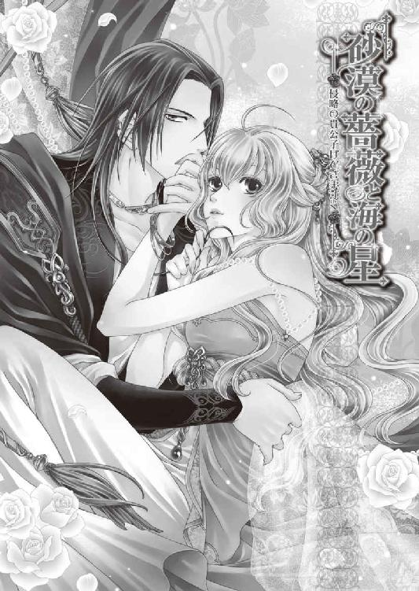

| 砂漠の薔薇と海の星2 侵略の貴公子はひざまずく (ビーズログ文庫) | |
| あすか & 由貴 海里 | |
| エンターブレイン (2011) | |
本作品の全部または一部を無断で複製、転載、配信、送信したり、ウェブページ上に転載することを禁止します。また、本作品の内容を無断で改変、改ざん等を行うことも禁止します。
購入時にご承諾いただいた規約により、有償・無償にかかわらず本作品を第三者に譲渡することはできません。
本作品は本文縦組で制作しております。また、電子端末での閲覧に向くよう、一部デザイン等を変更しております。あらかじめご了承ください。

傍らで眠る男の横顔を、ルセリアは少し前から頰杖を突いて眺めていた。
何度、彼の隣で朝を迎えても、ルセリアは自分がどうしてここにいることになったのか、攫われたその日からのことを思い返してしまう。
ルセリアはマルフォーネ王国ノヴェイヤ王の次女。ここから北にある谷に囲まれた、地図に載せるのも忘れられるほど小さな国の出身だ。そんなルセリアは初恋の人と思われる、大国、シシア神国の王子・サイファスとの結婚を控えていた。
だが一ヶ月ほど前、一度見たら忘れられない美貌を持つこの男に国から攫われ、初めてのキスも奪われた。
漆黒の髪と同じ色の瞳は、獲物を狙う鷲のように鋭い光を宿しているが、今は瞼に覆われているため、威圧感が和らいでいる。上品で形のいい唇を見つめていると、重ね合わさった感触が鮮やかに思い出され、ルセリアは急に胸の高ぶりを感じた。
男の名は富める大国、ビアランの第一王子アルバトル。近隣諸国では『砂漠の悪魔』と噂され、ルセリアが住むマルフォーネ王国でもそれが耳に入ってくるほどだった。
「こうしてるとわからないんだけど」
アルバトルの寝顔を見つめるルセリアの口元には、自然と微笑が浮かぶ。
美麗な外見からは予想もつかないほど、アルバトルは自己中心的なうえに傲慢な男だ。
初恋の相手は自分だと主張し、ルセリアの気持ちなどおかまいなしにアルバトルは自らの愛情を押しつけてきた。
それからというもの、ビアランの宮殿の一室に閉じこめ、自由を奪い意見することを許さない。そんなアルバトルを受け入れられるわけもなく、ルセリアは脱出を図っては捕らえられ、宮殿に戻される日々を送っていたのだ。
なのにアルバトルのことをもっと知りたいという気持ちになり、今度こそ逃げ出せるだろうというチャンスを捨て、ルセリアはここに留まることを決心した。
「ほんと自分でも信じられない」
アルバトルが囁く愛しているという言葉の中には、ルセリアに対する紛れもない一途な想いが込められている。ただ、その表現があまりにもあからさまで、燃え上がる炎のように熱く、近づけば火傷を負いそうなほどで、彼の気持ちを知るまでに至らなかった。
けれどルセリアを庇い自ら毒に倒れたときも、水の使徒・ナナルが現れ部屋を破壊したときも、アルバトルはまずルセリアの身を案じてくれたのだ。
「ナナル......」
失われた黄金の都・ネディアを守っていたという守護使徒の一つが、どういうわけかルセリアの中にある。魔導師のジンがルセリアの中にいるナナルを目覚めさせたことにより、部屋が破壊された。被害を防ぐためにも勝手に出てこられないよう、今は休止という状態でルセリアの中で眠らせている。
そんなこともあって、ルセリアはアルバトルのことを、もっと知りたいという気持ちになっていた。
とはいえ、あれほどアルバトルのことを拒否していたのに、急に愛想よくにこやかに振る舞うなどルセリアにはできない。彼の行動が間違っていると思えばそう口にするだろうし、またアルバトルを怒らせてしまうだろう。
ルセリアはそんな複雑な自分の気持ちをもてあましていた。
「あれ？」
眠っているはずのアルバトルの瞼がピクピクと動いていることにルセリアは気づいた。
「もしかして起きてるの？」
「ああ、俺は目覚めのキスを待っているんだが、まだか？」
アルバトルはルセリアの方を向くことも目を開けることもなくそう言った。
まだ起きようとしないのは、ルセリアのキスを待っているからだろう。
「はっ......はあ!? アルバトル、寝ぼけてるの!?」
「そんなふうに見えるか？」
ようやく目を開けたアルバトルは、ルセリアを情熱が籠もった目で見上げてくる。
ルセリアは身体を起こして離れようとしたが、アルバトルに手首を摑まれて引き戻され、あっという間に組み敷かれる。すがすがしい朝には不似合いな、身体にまとわりつくような熱い視線に、ルセリアは胸の奥に火が灯るのを感じた。
「けっ......今朝も天気でよかったわね」
「ビアランはいつも天気だが」
「わからないわよ。嵐が来るかもしれないし、大雨が降ることだってあるかも」
「天気のことなど興味はない」
左手首を摑まれアルバトルの方へ引き寄せられたかと思うと、彼の唇が手の甲に落ちた。すると初恋の人から贈られた金のブレスレットが揺れる。
それは純金で作られていて、表面全体にブドウの蔦や葉に果実、それをついばむ小鳥が彫られている。七羽いる小鳥の目には、それ一つで屋敷が建つと鑑定士に言われた、空の雫という美しい石がはまっていて、いつも手首で煌めいている。
「そなたの肌はとてもきめが細かくなめらかだ......」
密着しているアルバトルの唇はとても温かくて気持ちよく、以前のような不快感はない。
ルセリアの手の甲にアルバトルは小鳥がついばむようなキスを何度となく落とし、ゆっくりと腕の方へと移動していく。あまりにもしつこいキスに、ルセリアはアルバトルの頰をつねった。
「......っつ！」
「今日こそは街を案内してくれる約束よ」
「そうだったな」
アルバトルは不満そうな顔のまま髪を撫で上げ身体を起こす。ルセリアはようやく彼の下から解放されて、すぐさま距離を取った。
油断も隙もないんだから――。
結婚するまでは清い関係でいることをアルバトルは約束してくれた。だからといって紳士的に接してくれるわけもなく、アルバトルは周囲に人がいてもルセリアの髪や手に触れてくる。二人きりだと密着度はもっと上がるのだ。
やんわり払うと何を勘違いするのかしらないが、アルバトルが調子に乗るため、ルセリアははっきりと意思表示をすることにしていた。
すると、アルバトルは腹を立てて怒鳴るか、ムッと黙り込む。そうなる前に普通に会話を続けて、話題を変えてしまうのが一番だった。
「一週間待たされたのよ。昨日なんて私、わくわくして眠れなかったんだから」
「俺はもうずっと、そなたの無邪気な寝顔に寝不足気味だぞ」
「アルバトル！」
「......ああ、わかっている」
アルバトルが街を案内してやると約束してくれてからすでに一週間が経っていた。
慈雨の儀の後で現れるという、大河が発生して、国内がさらに活気づいたためだ。
大河が発生すると船での貿易が増え、国内外への人の出入りも多くなる。宮殿内の警備も厳重になり、エルドナル王だけでなく王子であるアルバトルも仕事が増えたのだ。
そんなアルバトルの様子を、数日は黙って窺っていた。なのにいつまで経っても約束を果たそうとしないアルバトルに、ルセリアはとうとう怒りをぶつけてしまったのだが、おかげでようやく出かけることになった。
「じゃあ。早く準備をしましょう！」
寝台から軽やかに下りたルセリアは侍女のエミールを呼んで着替えを終えると、朝食もそこそこに、アルバトルと街へ出かけた。

ビアランは国土のほとんどが砂漠地帯だ。首都はシハーブと呼ばれ、その真ん中に位置する宮殿に王族が住む。建物はどれも色鮮やかで、内外壁に貼られた陶器のタイルは装飾文様が施され、富める大国を象徴している。
区画によって赤と金、青と金、白と金、緑と金などタイルの基調が色分けされていた。また奥の神殿、続く霊廟は白大理石張りで、浮彫や色石の象嵌によって装飾されており、砂漠に悠然と佇んでいる。
国の北にシェマダン山脈が走り、東にナヒドの鉱山がある。鉱山からは武器となる鉄も掘り出されるが、金脈が集中しているらしく、採掘した金を加工したアクセサリーが有名だ。特に王宮お抱えの細工技師による品は諸外国の王族や貴族に愛されていて、毎年はじめに制作される一点物は争奪戦となる。
砂漠地帯ではあるが、定期的に出現しては消える大河の後にできる肥えた土壌には作物が豊かに実るため、主食を交易に頼ることはない。
だがやはり、砂漠に危険はつきものだ。なんの準備もせず砂漠に足を踏み入れたら、灼熱の太陽によって身体の水分をすべて奪われ、砂に埋もれる運命が待っている。
かといって生物が皆無というわけではなく、ビアランを囲むエジという植物の根元に巣を作る後ろ足のやたら長い飛びウサギや、彼らが放棄した巣を住みかとして卵を産み育てる、尾っぽの長いキッカという小鳥もいる。
もっとも恐ろしいのはワームと呼ばれる巨大な円筒形の生物の存在だ。
ワームは蟻地獄のように砂の中に潜み、普段は小さな生き物を餌にしているものの、不運な人間が時折犠牲になることもある。
灼熱の砂漠といえば木々は育たず、生物は死に絶えるようなイメージを抱いていたルセリアからすると、ここは驚くべき国だ。
「どの建物も立派だわ......」
窯で焼いた煉瓦を積み上げて建てられた家は、みな一様に窓が広く取られていて、上部に砂よけの簾が備え付けられている。宮殿のように外壁にタイルや浮彫などの装飾はされていないが、玄関や壁の一部に色石が使われていて、とてもおしゃれだった。
平屋か二階建てがほとんどで、あまり高い建物がないのは、時折やってくる砂嵐のためだ。
女性の服装は二枚の布を身体の前後で合わせて結びつけたチュニックで、足下までふわりと布が覆い、裾からサンダルが覗いている。髪はみな高く結い上げていて、三つ編みにしたものを団子状に巻き付けて、髪留めやリボンで結んでいた。
男性は膝丈の外套を肩のところでピンを使って留めていて、馬やラムダに荷物を載せたり、妻の洗濯を手伝っている者もいる。
男女ともみなネックレスやブレスレットなどの装飾品をつけていて、何もつけていない人間を探す方が難しいほどだった。
「みんな一つは金の入ったアクセサリーをつけているのね」
「それがビアランの習慣だからな」
「でも......お金のない人はどうするの？」
「子供が生まれたら、その子に王から金のアクセサリーが贈られるんだ」
「素敵な贈り物ね」
「ただ、一生その一つしか持てぬ者もいる」
ルセリアたちは宮殿から馬車で出かけ、街の中程で降りて、煉瓦造りの街並みを眺めながら歩いていた。
以前、馬車に乗ったときにも気づいたのだが、路は曲がり角が多く、しばらく歩いていると、今自分がどの方向に向いて歩いているのか、わからなくなる。
「......ねえ、どの道もくねくねしているんだけど、迷ったりしないの？」
「敵の襲撃を避けるための都市計画の結果だ。特に宮殿までまっすぐ通じる道はないといってもいいな」
「そうなのね」
「祖父の時代まで遡るらしいが、戦が絶えぬ時代があった。その名残だ。ただ、この先、どういう形で他国の侵略を受けるのかわからない。こういう街造りは今後も続くだろうな」
ルセリアの住んでいたマルフォーネ王国では、侵略を想定した街造りなどしていない。資金的な問題も大きいが、谷に挟まれた小さな国だから、どういう街造りをしようと、大国に攻め込まれたら一夜と保たないこともわかっているからだ。
「不便だと思うけど、仕方ないのね......」
「もう少し行くと西門のある広場まで続く露店街がある。欲しいものがあったら、この俺におねだりするんだな。そなたが望むものならなんでも買ってやるぞ」
「別に何もいらないわ。......あっ、見えてきた！」
道の両側に沿ってひしめき合うように露店が建ち並んでいる。先ほど歩いていた通りとは違い、とにかく人が多い。
店主たちはみな客を引き留めようと、ひときわ大きな声で叫んでいて、賢い主婦たちは少しでも安く買おうと、値切り交渉をしていた。
「いい匂いがする」
最初は食料品の露店が並んでいて、右手には干し肉や魚、甘辛く調理された鶏肉が店頭に並び、左手には緑の葉が何重にも巻かれている野菜や、オレンジや赤い色の丸い実の果物が一つ手に取ると崩れそうな積まれ方をしている。なんとなく危なっかしく見えて、気になってしまう。
「どうした？ 果物が欲しいのか？」
「ううん。なんでもないの。......砂漠なのに生きた魚が売られているのね」
「大河ができている間だけだ。俺はあまり好きではないがな」
「魚が嫌いなの？ 生は私も苦手だけど、煮ると美味しいわよ」
「鱗がな......」
「鱗!? 鱗が何？」
「いや、ああ。そなたの好きそうなものが並んでいるぞ」
食料品の店を過ぎると、今度は衣装や生活雑貨が売られている露店が現れた。
鮮やかな色のチュニックやゆったりとした外套が店頭に掛けられていて、編み目の詰まった二重のベルト、くるぶしまでのサンダルなどが並んでいる。
特に目につくのは赤と黄色の色彩だ。それらの色布が多く売られているところを見ると、街での流行なのかもしれない。
「わ～。綺麗な色の布がたくさんあるわ」
何を見ても新鮮な驚きを覚えるため、ルセリアはずっと興奮していた。が、喜々としているルセリアと違い、アルバトルは不機嫌になっていた。
「あまり俺から離れるな」
「こんなところで逃げたりしないわよ」
ビアランに連れてこられてから、ルセリアは何度もアルバトルのもとから逃げ出そうとした。そういう事情もあって、アルバトルは不安なのかもしれない。
「それもあるが、今は違う」
「じゃあどうしたの？」
「子供のように騒いでおると、人の目につくぞ」
「この姿だから大丈夫。誰も気づいたりしないわ」
ルセリアとアルバトルは住民と変わらない衣装を纏い、外套についたフードを深く被っている。後ろにはアルバトルの家臣であるグレディの姿があり、距離をあけて前後左右に兵が配備され、二人の警護に当たっていた。
だからこそ誰に見とがめられることなく、自由に店を見て回っていられるのだ。
「あっ、可愛い」
露店街のほぼ中程まできたルセリアは、住宅の角で飛びウサギやキッカ鳥などの形を模した人形を売っている店の前で足を止めた。
「お嬢さん。一つどうかね」
「これは何？」
「おや、異国から来られたようだね。これはすべて手作りのお守りだよ」
棚には細い組紐のついた人形がいくつも並べられていて、それぞれの効果が書かれている。
マルフォーネには動物の形を模したお守りはないため、ルセリアには新鮮だ。
「人気のあるものを教えてあげよう。飛びウサギは永遠の愛。尾長のキッカ鳥は一般的なお守りだね。ラムダは絆や友情。それぞれ中にワームの髭が入ったものは値段は上がるが、強運と安全が追加されているからお得だよ」
「とても丁寧に作られているのね」
手作りなので、どれ一つとっても同じ表情のものがない。ちょっと目が大きすぎるものや、耳が明後日の方向を向いていたりしていて、面白い。
ルセリアはいくつもお守りを手の平に載せて飽きることなく眺めていた。
「そなた、そんなくだらないものが欲しいのか？」
「くだらないものって......なんて失礼なことを言うの！」
背後から覗き込んでいるアルバトルにルセリアが怒鳴ると、店主が苦笑する。
「いいんですよ、お嬢さん。それより若いお二人なら、夫婦の飛びウサギの毛とワームの髭の入ったお守りをそれぞれお持ちになるといいですよ。たとえ離ればなれになっても必ず再会できるという強固な愛が約束されますからね」
「店主、ではそれをもらおう」
「えっ!?」
お守りを馬鹿にしたアルバトルの台詞とは思えない言葉を耳にしたルセリアは思わず振り返った。だが、そんなルセリアに今度はアルバトルが困惑したのか、眉根に皺を寄せる。
「なんだ、欲しかったんだろう？」
「私が欲しいのは、キッカ鳥のお守り。飛びウサギは......いいの」「永遠の愛を約束するお守りはいらぬのか？」
いらないというわけではないが、『永遠の愛』というのが恥ずかしい。
アルバトルをもっと知りたいという気持ちにはなっている。だが、意味のあるお守りを互いに持つことでアルバトルが好きなのだと誤解されたくないし、ジンやグレディにもからかわれたくなくて、気が引けたのだ。
「え～っと。今はいい」
「そなた、俺と永遠の愛を分かち合うのが嫌なのか？」
「そ......そうじゃなくって......。いえ、そう......だけど。だから今はキッカ鳥の方が欲しいの！」
なんとなく伏し目がちになり、胸の中にもやもやした感情が漂う。自分でもどちらが欲しいのかよくわからなくなっている。
「そなたは真っ先に飛びウサギのお守りを見ていたぞ」
「見てないわ！」
初めにキッカ鳥より可愛い、飛びウサギのお守りが欲しいと思ったのは確かだ。
「まあまあ、お嬢さんは照れていらっしゃるんですよ」
「違っ......」
店主はルセリアたちの言い合う姿を微笑ましく見つめ、キッカ鳥のお守りを差し出した。
「さあさ笑顔の素敵なお嬢さん。こちらのワームの髭の入ったキッカ鳥のお守りをおまけにお付けしますね。自然に尾が取れたとき、願いが叶うと言われているよ」
すっかり誤解しているようだが、店主の気持ちを断ることもできず、ルセリアはキッカ鳥のお守りを受け取った。
ルセリアが店主に礼を述べたが、アルバトルはまだ飛びウサギにこだわっていた。
「このお守りも、持っていろ」
「嫌よ。お守りは一つでいいもの！」
差し出された飛びウサギのお守りを手に取ることなくルセリアはアルバトルに背を向けた。
それが気に入らないのか、アルバトルは突然ルセリアの身体を抱き上げた。
「きゃっ！」
「帰るぞ、ルセリア」
「帰る!? まだこれからじゃない。どうして!?」
アルバトルに担がれたルセリアは、踵を返して歩きだしたアルバトルの背を叩いた。
が、もちろんそんな抵抗に立ち止まってくれるほど、アルバトルは優しい男ではない。
「そなたの態度が気に入らん」
「ええっ！ 意味が全然わからないんだけど。ねえ、落ち着いてよ。フードが落ちちゃう！」
腹を立てているからか、アルバトルは自分の顔を隠しているフードがずれていることに気づいていない。それをルセリアがいくら注意をしても、アルバトルは自分の怒りで頭がいっぱいのようで、耳を貸そうとしなかった。
「アルバトルって！」
「だいたい俺にも滅多に見せない笑顔を見知らぬ男に振りまくな！」
「......はあ!? 何言ってるの。待って、落ちるって！」
アルバトルのフードが脱げないようルセリアが手で押さえようとしたのだが上手くいかず、露店街の人々にとうとう気づかれた。
「も......もしかして、アルバトル王子でいらっしゃいますか？ では、そちらの方は......まさか砂漠の薔薇!?」
豆屋の店主が袋詰めをしていた豆を地面に落とし唇を震わせた。
フードがずれたことで、アルバトルの威圧感が一気に周囲に放たれたのだ。こうなると隠しても仕方がないことはわかっているはずなのに、アルバトルはしれっと告げた。
「いや、人違いだ」
「気づかず申し訳ございません。なんという光栄な日だ。我らの砂漠の薔薇。どうか、これからも我が国をお守りください」
店主の感極まった声を無視することもできず、ルセリアは担ぎ上げられた恥ずかしい恰好のままにっこりと微笑んだ。
『砂漠の薔薇』はビアランの建国の母であり、ワームを思いのまま操ることのできる聖なる乙女だと語り継がれている。
ルセリアはハレムで知り合った少年レイの助けを借りて、アルバトルのもとから逃げ出そうとした。
宮殿を上手く脱出し、あとはシハーブを出るキャラバンに紛れ込み、砂漠を渡ろうとしたのだ。だが、出国を待っているところで、ワームに襲われそうになった少女を見つけて、思わず飛び出していた。
なぜかワームはルセリアを襲うことなく砂漠に戻っていった。ルセリアの中に水の使徒・ナナルがいたからだろうと予想されているが、事実はわからない。
ただ、その出来事を見ていた人たちがルセリアのことを砂漠の薔薇だと誤解し、間違った噂が人々に広まった。
「違うと言ってるだろうが！ 行くぞ」
苛立ちを隠すことなく叫んだアルバトルだったが、すでに周囲にはたくさんの人が「アルバトル王子と、砂漠の薔薇だっ！」という声に集まってきている。
こうならないためにお忍びで街を歩けるよう変装したのに、アルバトルのおかげで台無しだ。
「だからフードのことを注意したのに！」
「そなたが悪い！」
「も～。どうして私が悪いのよ！」
理不尽な怒りにルセリアも腹を立てていると、集まってきた人々の一人が花束を差し出してきた。オレンジと黄色の花束は太陽に煌めき、目に眩しい。
「姫様、どうぞこちらを」
「あ......ありがとう。とても綺麗」
受け取った花束はとてもいい香りがして自然と笑みが浮かんだが、アルバトルから放たれる怒気が倍増していくのが感じられた。
そのくせひとたび自分たちの身分が誤魔化せないとわかると、人々に笑顔を見せつつ、ルセリアを下ろし、腰に腕を回して引き寄せ、耳元では真逆のことを囁く。
「ルセリア、受け取るな」
「でも......」
「グレディに任せておけ」
ルセリアが返事を言い淀んでいる間も、街の人々は花を投げてきたり、先ほど買い求めたばかりのような果物を籠ごと手渡そうとしてくる。
「砂漠の薔薇にこれを」
「あ、ありがとう」
「ルセリア」
アルバトルは小声ながらも怒りを含めた口調で名を呼んでくる。
「そんなに怒らないで......あっ！」
せっかくルセリアがもらった果物の包みをアルバトルはやんわりとだが有無を言わせない力で奪い、グレディに押しつける。
「んっ......もう！」
ますます集まってくる人々の興奮は驚くべきもので、砂漠の薔薇と婚姻するアルバトルにみな祝福の言葉をかけてくる。
どうしてか目に涙を浮かべる老人や、子供たちまでもが花を投げてきた。
「王子、どうか砂漠の薔薇とお幸せに」
「みなの気持ちは確かに受け取った」
どうやら観念した様子のアルバトルは、みなの声援に応えている。
アルバトルの堂々とした立派な姿と、彼に向けられる人々の尊敬の眼差しに、ルセリアは自分のことのように誇らしい気分になっていた。
「グレディ、馬車を用意しろ！ 宮殿へ戻る」
「かしこまりました」
この状態では無理だとわかっていても、宮殿に戻ることの不満を口にしようとしたルセリアにグレディが言った。
「姫様、これ以上、人々が集まりますと、密かに連れている兵士だけはお守りできなくなります。いずれまた王子はきっと姫様を街に連れ出してくださいますよ。ですから今日はこれでお戻りを」
以前、ルセリアは自らの杯に毒を混入された。犯人は未だ捕まっていないため、不特定多数の者が集まる場所は避けた方がいいことは充分理解している。
「......残念だけど、そうよね」
もらった花束もグレディに渡し、ルセリアはまたアルバトルに担がれ、用意された馬車へ乗り込んだ。
アルバトルはルセリアをそっと下ろしたが、自らは荒々しく腰を下ろして牽制する。先ほどまで笑顔を作っていたアルバトルの顔が急に不機嫌なものへと変わっていた。その変わり身の早さにもルセリアは驚かされた。
当然なのだろうが、外と内の顔は違うのだろう。
「アルバトル」
「なんだ」
「今度またゆっくり連れて行ってね」
「......気が向いたらな」
機嫌を損ねたら、二度と連れ出してもらえないだろうと思い下手に出ているのにこの態度。本当に腹が立つ。
ルセリアを愛しているからこその独占欲だと理解していても、この傲慢な態度に、悪態の一つもぶつけてしまうのは仕方がないことだろう。
「もう......どうしてそんな言い方しかできないのよ！」
「では、外で笑顔を安売りしないと約束しろ」
「女性は笑顔が大切と母上から教わってきたもの、これって安売りとは違うわ。無愛想で注意されるのならわかるけど、笑顔を向けるなとは誰も言わないわ」
「俺は言う」
アルバトルの暴言に呆れていると、彼はルセリアの言葉を待たずに続けた。
「......それに、たとえどのようなものでも、見知らぬ者から手渡されたものを簡単に受け取るな。花に毒が仕込まれていたらどうする。食物も同様。もう少し警戒心を持つんだな」
「わかってる。それに関しては......謝るわ。ごめんなさい」
ルセリアはとりあえず受け取った後、すべてグレディに渡すつもりだった。ただ、砂漠の薔薇に捧げ物を受け取ってもらいたいと目を輝かせている人々の前で、拒否したくなかっただけ。誰だってせっかくの好意を拒絶されたらショックだから。
「本当に......そなたは誰の花嫁なのか、もう少し自覚してもらわねばならん」
「待って。私、アルバトルの花嫁になることは、まだ決めてないわよ」
アルバトルの手がルセリアの顎にかかり、伏せがちだった顔が上向きにされる。漆黒の瞳に射抜かれたルセリアの青い瞳には、情熱の炎に包まれたアルバトルが映った。
「......少しは俺を好きになったのだろう？」
「やめて、アルバトル......痛いわ」
アルバトルの問いに答えず、摑まれている手をやんわりと払う。が、顎から離れたアルバトルの手は、ルセリアの腕を摑んで、そのまま馬車の壁に押しつける。
「そなたは本当に......この俺の気持ちをどうしようもなくかき乱してくれる......」
「顔、近づけないで！」
迫ってきたアルバトルを押しやり、ルセリアは口づけを拒否した。
口づけは危険だ。唇が重なると身体の芯が熱くなり、身も心も彼に寄り添いたくなる。そんな自分の変化をアルバトルに見透かされそうな気がして、怖いのだ。
「王子」
ルセリアの態度に口を開こうとしたアルバトルだったが、背後から響いたグレディの声に、嫌そうに目を細めた。
「アルバトル王子」
無視した主の肩にグレディは手をかける。それでも返事すらしないアルバトルに、グレディは呆れ気味に言った。
「ぼっちゃま」
「ぼっちゃまは、よせ！」
ようやく拘束を解いて身体を離したアルバトルに、ルセリアは密かにほっと安堵する。
「王子、エルドナル王がお呼びです。今すぐお部屋の方へ伺うようにと」
「どうした？」
「お出かけの間に早馬が書簡を携えて参ったようで、王よりこの件は王子に対処させよとのことです」
「どういう件だ？ 内容を聞いているか？」
アルバトルはグレディと話しつつも馬車から出ると、ルセリアにも降りるよう促してきた。
ルセリアはまた腕を摑まれないよう細心の注意を払いつつ馬車から降りたが、どういうわけかグレディが意味深な目をこちらに向ける。
「......何？」
「いえ。失礼しました。アルバトル王子、ルセリア姫の姉君、メイフェス姫が王の名代としてビアランにいらっしゃるとのことです。詳しいことはエルドナル王よりお聞きください」
「メイ姉様がビアランに!?」
「ええ、そうですよ姫様」
グレディの驚くべき知らせに、ルセリアはアルバトルよりも先に声を発していた。
「嬉しいっ！ 姉上に会えるのね。信じられないわ！ ねえ、アルバトル。メイ姉様が滞在する間は、一緒の部屋で食事をしたり眠ったりしてもいいでしょう？」
ルセリアはしばらく前に父宛に書簡を送ったが、自分がどこでどうしているのか、当たり障りのないことしか書けなかった。
メイフェスや父にもう会えないかもしれないと、心の中で覚悟をしていたから、この訪問の知らせはとても嬉しい。
だが、ずっと心から追い出していた事実を思い出したルセリアは、喜びもつかの間、笑顔が翳る。
誘拐同然にビアランに連れてこられてすぐに、家族の安全を確かめたかったルセリアは魔導師のジンにどうにかして知る方法がないかと頼んだ。ジンは魔術を使い、家族の姿を水鏡に映し出してくれたのだ。
そこでルセリアは自分が父とも姉とも血が繫がっていないことや、ルセリアの婚約者であり初恋の人でもあるサイファスにメイフェスが密かに想いを寄せていたことを知ってしまった。
「姫様......大丈夫ですか？」
「えっ、あ......ううん。なんでもない。あまりにも嬉しくてちょっと混乱してしまって。私、メイ姉様には話したいことや相談したいことがたくさんあったの。ここで会えるなんて、本当に嬉しいわ」
せっかくメイフェスと再会できるのだから、知り得た事実は心の奥にしまっておくのが幸せなのだろうか。
その答えは今は出せないが、彼女がビアランに滞在する間は、できるだけ楽しい時間を一緒に過ごすことだけを考えるのだとルセリアはそう決めた。
だが、アルバトルは違ったようだ。
「ぼっちゃま、いけませんよ。ここは大人に......」
グレディの言葉に、えっ――と我に返ったが、すぐさまアルバトルを窺うと、彼は怒りに満ちた目をルセリアに向けている。
「アルバトル？」
「一緒の部屋で過ごすだと？ 絶対に許さんからな！」
「!? どうしてそんな意地悪なことを言うの!?」
「そなたは何もわかっていない！」
「わかっていないのは貴方よ。ビアランにやってくるのは私の姉上なのよ、アルバトル。少しくらい姉妹の時間をくれてもいいじゃない」
「姉上だと？ 赤の他人のはずだが」
吐き捨てるように告げられたアルバトルの言葉に、ルセリアの心は深く傷ついた。
「酷いわ、アルバトル。言っていいことと悪いことってあるでしょう？」
アルバトルはルセリアの憤った顔を見下ろし、無言のままこちらの手首を摑むと、痛みを伴うほどの力強さで引っ張り、部屋へと押し込む。
「一歩たりとも部屋から出ることは許さん！ いいな、ルセリア」
勢い余って床に手を突いたルセリアだったが、すぐさま立ち上がり、部屋から出て行ったアルバトルを追いかけた。が、扉の前に立つ兵士に邪魔され、それ以上は追えない。
「待って、アルバトルっ！」
「姫様、アルバトル王子のご命令です。部屋からお出になられては困ります。どうぞお戻りください」
兵士を振り払うこともできず、ルセリアは渋々戻って、カウチに腰を下ろした。
アルバトルの横暴さにはいつだって頭にきているが、今回ばかりは許せない。
「もう！ どうしてこうなるのよっ！」
「ルセ様、何かお飲み物を用意いたしますね」
閉ざされた扉を見つめて途方に暮れているルセリアに、侍女のエミールがそう告げる。
彼女はルセリアよりも一つ年下だが、とてもしっかりしていて、細やかな気遣いをしてくれる、侍女以上の存在だった。
「ありがとう、エミール」
エミールがお茶の用意をして戻ってくると、ルセリアはアルバトルの理不尽な怒りの理由を説明した。
「......そうだったのですか」
「どうしよう、エミール。せっかく姉上が来てくれるっていうのに、会わせてもらえないかもしれないの。そんなの辛いわ」
「まさかそこまではなさいませんよ」
エミールは彼女の持つ優しい雰囲気とおっとりした口調で、動揺しているルセリアを落ち着かせてくれた。
それでもお守り一つであれほどまでに不機嫌になるようなアルバトルを、どう宥めたらよかったのだろう。
部屋に戻ってきてから何度目かわからないため息をついたルセリアの前に、魔導師のジンが姿を現した。
「いやいやいや、アルバトルのことだ。こうと決めたら譲らんぞ」
本人に悪気はないようだが、いつもの壁からではなく床からヌッとわき出たように立ち上がったので、ルセリアはカウチから落ちそうになるほど驚き、エミールは尻餅をついて、果物籠をひっくり返しブドウを潰していた。
「ジンっ！ いきなり出てこないで！ びっ、びっくりするじゃない」
「そうですよ、ジン」
「ん～驚かせてしまったかな。すまん、すまん」
ジンは水晶髑髏に魂が囚われている魔導師で、肉体が存在しない。幽霊のように壁や床を突き抜けて現れるため、いつも驚かされる。
水晶髑髏は鉱山の視察に出かけたアルバトルが砂の中から発見した。ジンが移動できるのは水晶髑髏の周辺のみで、姿を現したり消したりできる。目覚める前の記憶がなく、そのためか思い出せない詠唱も多い。
見た目はグレディより少し年上に見えるが年齢不詳。赤毛の短髪で後ろだけ長くしていて、ビーズの紐で結んでいる。左耳に耳飾りを垂らし、いつも金糸や銀糸の刺繡がされた濃い緑の長いローブを着ていた。肉体がないため他人の身体や動物に乗り移って支配し、人と同じよう動いたり魔術を使うことができる。ルセリアは一度体験したことがあるが、あまり気持ちのいいものではなかった。
「そうだわ、ジンが魔術でアルバトルの性格をもう少し優しくできたりしないの？」
「一時的にならできるだろうが、我が輩はアルバトルと契約をしているからなあ。そりゃあ、無理というもんだ」
「ほんっとジンって、肝心なときに頼りにならないわねっ！」
ルセリアが何を言おうと、ジンはお気楽に笑うばかりでどうしようもない。偉大な魔導師と豪語するくせに、その片鱗を見せるような大魔術を披露してくれたことがないのだ。
ジンを無視してお茶を飲んでいると、グレディがやってきた。
「姫様、よろしいですか？」
「アルバトルはまだ怒ってる？」
「ええ、とても......困った方ですね」
苦笑混じりにグレディはそう言ったが、ルセリアは笑えない。
「ねえ、グレディ。アルバトルはどうして急に怒りだしたの？」
「そうですね、原因は二つ」
「二つもあるの!?」
「一つは、本当の姉妹ではないことを知ってしまったルセリア姫が、今後、お辛い思いをされるのではないかと王子はご心配されているのですよ。もちろん私も同じ気持ちです」
「それは......気にしないで。これで姉妹の関係が終わってしまうわけでもないもの」
それならそうと、もう少しわかりやすい気遣いを見せてくれたらルセリアにも理解できるのだが、他人の気持ちに無頓着なアルバトルに求めるのは無理なのかもしれない。
ただ、アルバトルの優しさを知ることができて、ルセリアはちょっぴり嬉しかった。
「もう一つの原因は、姫様が姉君の話ばかり嬉しそうにされたので、アルバトル王子は嫉妬されたのですよ」
「え......でも、姉上よ。普通、嫉妬する相手じゃないわ」
お守りが原因でアルバトルが不機嫌なのだと予想していたルセリアにとって、グレディの説明には首を傾げるばかりだ。
「姫様が子犬を可愛がれば、アルバトル王子はその子犬に嫉妬して、姫様から奪ってしまわれるでしょうね」
「そんなぁ。嫉妬する方向を間違ってると思うけど。なんだか子供みたい」
「ええ、王子のことは大きな子供だと思ってくださって結構ですよ。ですからね、姫様がアルバトル王子に心から『貴方を愛しているわ』とおっしゃってくださるのもいいでしょうし、『アルバトルの可愛い花嫁に早くなりたいわ』でもよろしいでしょう。そうすれば姫様のご家族がいらしたときのためのお住まいを建てられるでしょうし、子犬を百匹飼われても専用の召使いを何人でも雇い入れてくださいますよ」
間違っていても、正しいことを告げられているように聞こえる、グレディのいつもの穏やかな口調に、一瞬の迷いが過ぎったが、ルセリアはすぐさま正気に戻った。
「酔ってるの、グレディ」
「まさか、姫様。それこそ酔狂ですよ。今は執務中ですからね」
「ねえ、グレディは教育係なんでしょう？ メイ姉様に嫉妬するなんて行きすぎだって、アルバトルを諭してくれたらいいと私は思うんだけど」
「無理ですよ、姫様。そういったことを私に期待しないでくださいね。ああ、ちなみにもと教育係で、今はただの臣下ですよ」
「笑顔で即答しないで」
アルバトルの愛を素直に受け入れたら、すべてを許せそうな気もするものの、その変化が怖いと思ってしまう。
グレディの言うとおり、今の締め付けが緩めばいいが、逆に強くなる可能性もあるからだ。
「でも、アルバトル王子の嫉妬につきましては、男の私にはよく理解できることですよ。今もまだ王子は姫様が自分のもとから逃げ出されるのではないかと不安を持たれていますからね。だから姫様が王子に関係のない話題や人のことを笑顔で話すお姿が我慢できないのです」
「子供よりきかん気だわ」
「ただ......やはり、せっかくいらっしゃる姉君とお会いできないというのも酷な話です。アルバトル王子に私の方からそれとなくお話ししておきますよ。聞き入れてくださるかどうか、保証はできませんが」
「ありがとう、グレディ」
「でも、一番効果があるのは姫様の甘えたおねだりです。断言してもよろしいですよ」
微笑を消したグレディは真顔でルセリアを見つめてくる。
「むっ、無理！」
噓であっても甘えたおねだりが効果的であっても、性格的に無理なものは無理なのだ。
「ならばしばらく、理不尽な嫉妬に取り憑かれている王子にお付き合いくださるしかないでしょうね。では、失礼します」
来たときと同じようにグレディは穏やかな笑みを浮かべたまま、去っていった。
「グレディって実はと～っても、意地悪なのかと思うときがあるわ......」
「だからあやつは腹黒いと話してやっただろう？ でもまあ......今回のことはグレディの言うとおりだと我が輩も思うがな」
「ジンもアルバトルに可愛くねだったらいいって言うの？」
ルセリアの問いかけに、どういうわけかジンはニヤニヤとしたいやらしい笑いを浮かべた。
「なになになに、アルバトルが欲しがっているものを姫さんがあげたら、少しばかり落ち着くだろうと思うだけですよ。まあ......男なんて単純ですからなぁ」
「欲しがってるものって何よ？」
「姫さんからの熱～いお目覚めの、ちゅう」
唇を突き出すようにして「ちゅう」とジンが言った瞬間、エミールが「ちゅう？」と呟き、ルセリアは顔から火が出そうになるほど赤くなった。
「......～～～っ！ ジ......ジンっ！ 朝の会話を聞いていたのねっ！ 最低、最悪！ もう消えて！」
カウチのクッションを摑んでジンに放り投げると、当然だが彼の身体をすり抜け、壁に当たって床へと落ちる。ジンはクッションが通過した腹を撫で、ニヤニヤしながら壁へと溶け、消えた。
「ルセ様、夕食をいつもよりちょっと豪華なものをご用意して、アルバトル王子とお話しされたらどうでしょう。きっとわかってくださいますわ！」
「そうしてみる」
ルセリアはアルバトルの好物を料理長から聞いて用意したが、そういうときに限って彼は戻ってこなかった。
夜になると気温が下がり、部屋を流れる水流も止まる。ハレムから聞こえる様々な楽器の音も消えて、宮殿に静けさが訪れる。
カンテラの明かりが部屋を流れる空気に揺れて、床に落ちる影がゆらりと動く。
ルセリアは夕食や湯浴みをすませ、そろそろ眠るために寝台に横になり、本を読んでいた。
ここはアルバトルが、暑い国に慣れないルセリアのためにわざわざ設えた部屋だ。
壁際に沿ってたくさんの花が飾られ、柱と柱の間は風通しよく編まれた織物で仕切られていて、向こう側が透けて見える。
部屋の奥には吹き抜けがあり、そこは階段状になっていて、下には小さな池があった。
水面にはルセリアの故郷、マルフォーネに咲く白い薔薇がいくつも浮かんでいる。アルバトルがルセリアのためにわざわざ取り寄せた薔薇だ。水中では極彩色の魚が優美に泳ぎ、長く部屋でくつろぐルセリアの心を和ませてくれる。
部屋の左右には溝があり、そこを流れる清らかな水はこの池に注がれている。部屋が涼しいのはこのためだ。
もっともルセリアの中に水の使徒・ナナルがいるためか、体温調節ができるようで、暑さも気持ちよく感じるようになったし、汗もそれほどかかなくなった。
ビアランの生活には慣れてきたものの、すべてがそうではない。
最近のアルバトルは終始ルセリアの側にいるわけではなく、朝食を一緒に摂ると、次に会えるのはたいてい夕食時か、就寝時だった。
時間が空くとそのたびにルセリアの様子を見に戻ってくるが、長くはいない。なのに自由に散歩できる時間がもらえない。
アルバトルとどうなりたいのか、ルセリアはいろいろ考えてみた。
マルフォーネでは好きなときに街へ行けたし、山や湖に軽食を携え出かけたものだった。
できればアルバトルともそんなふうに二人の時間を過ごしてみたいし、宮殿内や街を案内してもらいたいと思えるようになった。
ただ、まだルセリアが逃げ出すのではないかと考えているアルバトルは、首を縦に振ってはくれないだろう。
大きな勘違いをされたくないルセリアは、二人で出かけたい......という言葉を含めないため、アルバトルが許可してくれないこともわかっている。
「せめて逃げ出す気はないってことはもう理解してくれてもいいのに......」
ルセリアがため息交じりに独りごち、もう休もうと、本をサイドテーブルに置いたところで、アルバトルが戻ってきた。
「俺の留守の間、何事もなかったか？」
「誰かさんに部屋に閉じこめられたこと以外は何もなかったわ」
嫌みを含めてルセリアはそう言ったが、アルバトルは怒ることなくあっさりと告げた。
「そうか、おとなしくいい子でいたようだな」
彼は重たそうなローブを脱ぐ前に寝台に上がると、やや身構えたルセリアの額にそっとキスを落とす。
アルバトルは戻ってくるといつもまずルセリアの額にキスをするのが日課になっている。
「......もう」
そしていつものようにルセリアはアルバトルの唇が触れた額を撫でて照れを誤魔化していた。その間に寝台から下りたアルバトルは、エミールにローブを渡し、他の召使いが用意した寝衣に着替える。
「エミールから聞いた。夕食を一緒に摂れず悪かったな」
そう言いながらアルバトルはルセリアの隣に横になった。疲れているのかすでに目を閉じ眠る体勢だ。
「忙しいことはわかっているから、いいの。気にしないで。それでね、アルバトル。メイ姉様のことなんだけど......」
急いで話したいことを口にしたルセリアだったが、アルバトルは仰向けのまま目を閉じていて、こちらを向こうとしない。
いつもは寝る前に息が苦しいほど抱きしめられるのだが、今日はなぜかそれがない。
「噓......もう、寝ちゃった？」
ルセリアはアルバトルの脇に座り込み、彼の顔を見下ろす。これほど早く眠りに落ちるとは思えない。よほど疲れていたのだろうか。
ルセリアは人差し指をアルバトルの頰にそろそろと近づけ、むにゅっと押しつけた。するとアルバトルの眉間に皺が寄る。
「また寝たふりしてる！」
「口づけ一つで聞いてやる。そなたが恥ずかしいのなら目を閉じていてやるぞ」
「なっ、何を言ってるの!?」
「そなたが希望を叶えてほしいというなら、俺の希望も叶えてもらわないとな」
アルバトルはチラリとルセリアを見て、また目を閉じた。忌々しいことに、口元は不敵な笑いを浮かべている。
「私、手料理を披露するわ！ それじゃあ、だめ？」
「俺は料理ではなく、そなたの唇を味わいたい」
「......も、も～！」
「姉と会えなくていいのか？」
いい取引材料を見つけたアルバトルが、ここで引き下がるとは思えない。ルセリアが口づけをしなければいつまでもこの言い合いは続くだろう。
「わっ、わかったわ。やればいいんでしょう！ 目はちゃんと瞑っていてよっ！」
「ああ」
「み、見ないでよ......絶対！」
いつだってアルバトルの方から半ば強制的にだが、口づけは何度もしてきた。今さら恥ずかしがることもないのだ。それに誰も見ていないのだから、ほんの少し触れたら、すぐさま唇を離せばいい。
羞恥で顔を真っ赤にしながらも、ルセリアは意を決してアルバトルの唇にキスをしようと顔を近づけた。
が、唐突にアルバトルが噴き出し、次に肩を震わせた。
「なっ、何!? 見ないでって言ったのに！ どうして笑ってるの!?」
「そ......そなたの顔が......」
「かっかっ......顔!? 顔が何よっ！」
「いや、真っ赤な顔で眉間に皺を寄せ唇を尖らせたそなたが......あまりにも愛らしくて......笑ってしまった。許せ」
アルバトルの笑い方は、とても彼の言うような『あまりにも愛らしくて』という言葉からはかけ離れていることをルセリアに知らせた。
「ひっ、ひっ......酷い！ わっ......私は必死の覚悟でアルバトルにキスしようとしたのに......変な顔だって笑うなんて、許せないわっ！」
「変な顔などと言ってないぞ」
「嫌い！ アルバトルなんて、だいっ嫌いっ！」
抱きしめようと伸ばされたアルバトルの手を、ルセリアは何度も払いのけた。が、しなやかな彼の腕に囚われ、意外と厚い胸板に引き寄せられる。
「そうか。だが俺はそなたが大好きだ。誰よりも愛している......」
そう言いながらもまだ笑いを堪えるアルバトルに、ルセリアは本気で怒った。
マルフォーネ王国から書簡が届いた三日後、ルセリアの姉であるメイフェスがビアラン国の首都・シハーブにやってきた。
一国の姫が王の名代として訪れるにしては、兵士が五人、侍女が一人と、ビアランから見るとあまりにも不用心な人数だった。それでもマルフォーネの国の規模からいうと妥当なのかもしれない。
アルバトルは入国時にチェックされた書類に目を通し終えると、肘掛けに腕を置く。
宮殿内には謁見の間が三つ用意されていて、ここはもっとも小さいハイサムの間だ。
一番大きな広間は、大国の王が自ら訪れ謁見する際に利用される。そのときには王と王妃、宰相や大臣も同席し、警備も厳戒態勢となる。二番目の広間は、大国の王の名代が訪れる場合や、中規模程度の国の王との謁見で、頻繁に使われるのがここだ。王と王子、もしくはどちらか片方が謁見を行う。ハイサムの間は一般外交用だが、王はここで謁見をしない。もっぱら王子であるアルバトルが使用していた。
室内の造りはほとんど同じ。長方形の部屋に砂を敷き詰め、十字型に通路が造られている。
面会者より王座側は一段高くなっているだけでなく、その間には暗殺などを防止するため、飛び越えられない幅の溝が掘られていた。底はかなり深く、落ちると骨折ではすまないだろう。場合によっては、尋問をせず穴蔵の中でそのまま獅子の餌にすることもできる。
先日訪れたサイファスともここで会い、溝に突き落としてやってもよかったのかもしれない。が、正式に要請があったものではなかったことと、公の記録に残したくなかったため、アルバトルは中庭で会うことにしたのだ。
今までも他国の公式な行事で顔を合わせることはあったが、社交辞令の挨拶しか交わさなかった。だが、シシア神国の王子であるサイファスは慇懃無礼で、アルバトルの神経を逆撫でばかりする男だった。
サイファスは、アルバトルがどれほどルセリアとの婚儀を進めようと、先に婚約をしたのは自分であることや、彼女の心がいかに自分に向いているのかを主張した。帰国後、正式に抗議するとも言っていたが、ルセリアを手に入れたアルバトルには痛くも痒くもない。
「王子、いらっしゃいました」
「......ああ」
グレディの声に思考から戻ると、メイフェスが兵士に案内されて謁見の間に入ってくるのが見えた。
メイフェスはアルバトルの座る椅子の前までくると、屈んで頭を下げた。
「この度は突然の訪問にもかかわらず、快く謁見をお許しいただき、大変感謝しております」
「メイフェス殿は我が花嫁となるルセリアの姉君。いつでも歓迎いたしますよ」
「ありがとうございます」
顔を上げて微笑するメイフェスは、ビアランまでその噂が届くほど、確かに清楚な美しさに溢れていた。
整った目鼻立ち。目は潤んでいるように輝き、ほんのり色づいた唇は小さい。艶やかな髪を一房両側に垂らし、残りを頭の高い位置で結い上げている。花の髪飾りは肩の下まで垂れ下がっていて、メイフェスの着ているシンプルなドレスに色を添えていた。
「親書に目を通されたノヴェイヤ王はさぞかし驚かれたでしょう」
「ええ。わたくしもそうですが、父も最初はすぐに信じられないようでした。ビアランとマルフォーネは国交もなかったことですし......」
メイフェスの言葉にされなかった部分に、自分への非難が含まれているように聞こえ、アルバトルの口調は自然ときつくなる。
「互いの誤解は先にお送りした書簡にて説明させていただき、すでに終わったこと。そちらが今後、シシア神国より受けるであろう損害は我が国がすべて肩代わりすることも申し出ている。にもかかわらずマルフォーネの王にはご不満があるようだ」
親書には、自分がルセリアを連れ出したこと、彼女の初恋の相手はサイファスではないこと、互いに婚姻の約束をしていたこと、今、自分のもとで幸せに暮らしていることを、したためた。
もっとも反論は山のようにあるだろうが、国の立場はビアランの方が上。従うことでしか彼らに生きる道はないこともまた、充分理解しているはずだ。
「いいえ。そうではありません。誤解をさせてしまったのでしたらお許しください。父はこの度のビアラン国との縁談を大変光栄だと申しておりました。わたくしもルセリアにとって良縁だと思っておりますわ」
「家族からも祝福され、ルセリアも喜ぶだろう。では、メイフェス殿、心ゆくまで我が国に滞在し、父上によき土産話を持ち帰られるといい」
長々と話す気がもともとなかったアルバトルは、メイフェスが次の質問を口にする前に、謁見終了を告げ、兵士に命令し退席させた。
傍らで控えていたグレディがやってきて、呆れた口調で言う。
「アルバトル王子、どうしてもう少しよい印象を持たれるような会話ができないのですか。あれではいけませんよ」
「あの女は気に入らん」
「噂に違わぬ美しい姫君ではありませんか」
「あの女はサイファスに想いを寄せている。その上で俺とのことを『ルセリアにとって良縁』だと言ったのだ。清楚に見えて腹には黒いものを抱えている女が一番好きになれん」
シシア神国のサイファスがルセリアのことを諦めたとは思えない。どのような理由があろうと、シシアはマルフォーネに恥を搔かされたことになるだろうし、それなりの制裁が科せられることになる。が、今現在そういった事実は確認されていない。
シシアがルセリア奪還のためにマルフォーネに協力を求め、ビアランが知らぬ場所で計画が進んでいる可能性もある。
「まあ......黒いかどうかはひとまず脇に置いて、一国の王子が、一国の姫に対して、あの女呼ばわりはいけませんね」
「ふん。ルセリアとは血の繫がりのない女とその父親だ。しかも取るに足らん国との親睦に費やす時間など俺にはない」
「ああ、わかりました。ようするに、血の繫がりがあろうとなかろうと、腹が黒くなかろうと、ルセリア姫が笑顔を向ける相手だから気に入らないのでしょう？ だからありもしない言いがかりをつけていらっしゃるのですね。本当にどこまで嫉妬するおつもりなのです」
「......そうではない」
ただの色恋の問題なら簡単なのだ。
シシア神国は何代も前の王から守護使徒を捜しており、有力情報には多額の賞金も用意している。だからこそルセリアの中にそのうちの一つ、水の使徒・ナナルが存在することが、問題なのだ。
「ならば、姉妹水入らずで過ごす時間をもっと差し上げたらどうなんです？ 同席を許されたのは昼食のみ。これではルセリア姫に恨まれますよ」
「それでも安心できん」
「......まさかルセリア姫から事実を知らされた姉君が、妹の未来を案じ自国へ連れ帰るとでも思っていらっしゃるので？ それは～ぼっちゃま、自業自得というものでしょう」
グレディは何もかもわかった上でアルバトルをからかっている。だから余計に腹立たしい。
「黙れ、グレディ！」
「ぼっちゃま。国家間の問題は婚姻がすめば解決します。ただ、姉君はサイファス王子を心密かに愛していらっしゃるのでしょう？ ならルセリア姫がアルバトル王子のもとにいることこそ、姉君の望まれることではありませんか。きっとよい味方になってくださるはずです」
マルフォーネは大国であるシシアに逆らうことなどできない。だが、アルバトルとルセリアが婚姻することにより、理不尽な申し出を拒否できる後ろ盾を得られることもまた、理解しているはず。何より味方にした方が、姉を慕うルセリアのアルバトルに対する評価も上がるだろう。
「......なるほど」
「ただ、味方になってほしいと思われるのでしたら、もっと寛大でお優しいところを見せなくてはなりませんよ。そうすれば、ひいてはルセリア姫の中にあるアルバトル王子の評価も上がることでしょう」
「そうだな」
確かにグレディの言うように、アルバトルはルセリアを締め付けすぎているのかもしれない。
昼食後、夕刻くらいまでは一緒にくつろぐことを許してもいいだろう。
「ただ、メイフェス姫がどこまで本当のことをご存じかはわかりません。それでもシシア神国が守護使徒を捜し求めて賞金をかけていることを、ルセリア姫には話しておかなければなりませんよ。それとも私の口から申し上げた方がよろしいでしょうか」
「いや、俺が話す。お前は余計なことを言うな」
「わかりました」
一番の問題はルセリアの中に水の使徒・ナナルがいることで、彼女が危険に晒されることだ。
また、守護使徒を得るために手段を選ばない者たちがこの世にたくさんいるという恐怖をルセリアに植え付けて、あの底抜けの笑顔が曇ったり、萎縮させたくないのだ。
そういった様々な理由から、アルバトルは真実を打ち明けることを先延ばしにしてきた。
けれど、そろそろルセリアは知るべきなのかもしれない。
これから先、ルセリアにどんな危険が待ち構えていようと、自分がこの手で守る。
「警備は万全か？」
「ええ。かなり厳しい選考基準で選んだ兵士に警備させております。特にメイフェス姫とお会いになられているときは、レイ・サディウスをルセリア姫につけております」
「レイか......」
「彼は一見、兵士には見えませんし、不思議とその場に溶け込みます。姫様方の楽しい時間に水を差すこともないでしょう」
レイは可愛い顔をしているが、表情には感情の変化を表さない。ぶっきらぼうで口数の少ない少年は、十歳の頃から兵役訓練に就いており、ナイフの使い手でもある。
経歴に怪しいところはない。ただ、ハレムに入れたルセリアの警護をしてからというもの、レイはルセリアの身辺を守る警護につきたいと、嘆願書を出すようになった。
今のところルセリアに専属の警護はつけていないが、レイが適当かどうか、まだ結論を出していない。
「いいだろう」
「ご報告することが二つ。一つは先日のルセリア姫の杯に混入されていた毒について、ようやくわかったことがございます」
「続けろ」
「使われた毒は『ジリッタ』という南の高山に生息する植物の根を煎じたものだそうです。ただ『ジリッタ』は厳密には毒ではないらしく、神官が儀式で使用するもので、これを口にした者は仮死状態に陥りますが、時間が経てば目を覚まし、元どおりになるとのこと。王子が苦しまれたのは、放っておけば自然と薬の成分が外へ出るところ、治療のため他の薬を身体に入れたことが原因のようです」
確かに苦痛を味わったが、そのおかげでルセリアの手厚い看病を受けることができた。
熱を測ろうと伸ばされた彼女の手が額に触れた瞬間を今もよく思い出せる。罪悪感からであっても、アルバトルのことを心配するルセリアの姿は、黄金よりも価値があった。
「では何者かが『ジリッタ』を使ってルセリアを死んだと思わせて、この国から連れ出そうとしたとでもいうのか？」
「効力は一日程度だそうなので、たとえ姫が亡くなったとみなが誤解したとしても、連れ出せるほどの時間が稼げたかは不明ですが」
「問題は誰がどういう理由でルセリアの死を偽ろうとしたかだ」
アルバトルは、不仲である義母のアビシュテを疑っているが、証拠は得られていない。
「ええ。この宮殿内部にも他国の手の者がいないとはいえません。こればかりは容易に解決できない問題ですので、姫様の周辺を守る兵士もさらに厳しい審査が必要かと思われます」
長年仕えてくれている臣下であっても信用できないのだ。これは他国でも同じで、密偵の存在には常に頭を悩まされている。
「ルセリアの警護態勢をいま一度見直せ。もう一つはなんだ？」
「ルセリア姫の義母、エリス・エデ・コドフィン王妃についての報告が届きました。姫が十二歳の頃病死しております。出身はニノキア王国。マハーク王の三女です」
「ニノキア？ 聞いたことがないぞ」
アルバトルがそう言うと、グレディは地図を取り出して広げ、ニノキアの位置を指差した。
「マルフォーネのかなり北になりますね。深い森の中にあるようで、隣接した国とも国交がほとんどなく、一日の大半を神事に費やし、代々伝わる教えを厳格に守った生活をしているようです」
「世間から隔絶した国の姫がどうやってマルフォーネの王と出会う？」
「ビアランの北東に魔女の大釜と呼ばれる湯治場があります。それぞれ異なる事情で訪れていたようですが、二人はそこで出会ったようですよ。マハーク王は特に可愛がっていた三女の結婚には難色を示したようですね。婚姻後、エリス王妃が里帰りした際に、赤ん坊をマルフォーネに連れ帰ったようです」
「それがルセリアか？ ということは、赤ん坊はニノキアからということになるのか？」
「そこがとてもあやふやなのです。確かにルセリア姫が生まれたであろう時期に、エリス王妃はニノキアへ帰郷しています。が、そこで赤ん坊を預かり連れ帰ったのかは不明なのです。ただ、エリス王妃は十六年前に突然ニノキアへ帰郷し、マルフォーネに帰国後、ルセリア姫が誕生していることは確かです」
「ニノキアゆかりの者とも考えられるが、道中で誰かから託された可能性もあるな」
捨てられていた赤ん坊を引き取っただけなら、エリスはノヴェイヤ王にいつか旅立つなどという意味深な言葉は残さないだろう。ルセリアに重要な背景があるからこそ、大切に育てられたのだ。それは、エリスだけはルセリアの身体に守護使徒の一つが存在することを知っていたからだろうか。
「それが本当にどれほど調べても、ルセリア姫だと思われる赤ん坊がどこからやってきたのかが、まるでわからないのです。ニノキア自体、閉鎖的な国でもありますので、これ以上は難しいでしょう」
「ノヴェイヤ王が自分の娘として育てることを許した理由がわかればいいんだが......。だが、ひとたび娘として育てることに決めたのだから、いくら調べてもわからぬよう人為的に隠されている可能性が高い。では、赤ん坊の素性はしばらくおいて、ニノキアがどういう国なのか、もう少し詳しく調べることはできるか？」
「ええ、それはできます。指示しておきましょう」
人物についてわからない場合は、住んでいる国や地域を調べることでまた違った情報が得られる可能性があるのだ。
「グレディ、俺は久しぶりに怖いという感覚を味わっている。ルセリアの出生の秘密や、水の使徒・ナナルの存在が、この俺の手からルセリアを奪うような気がしてならん」
大切な母を永遠に奪われた日を、アルバトルは忘れることができない。
あのとき大切なものなどいらないと、心が石のように硬く冷たくなってしまったアルバトルを癒し、救ってくれたのがルセリアだった。
眠るように亡くなっていた母・アミタを見送った父・エルドナルは、彼女を殺害した犯人がわかるまでの間、アルバトルをマルフォーネ王国へ避難させた。
マルフォーネは谷に囲まれた小さな国だが、過ごしやすい気候や、自然が豊かなこともあり、貴族たちが身分を隠して訪れる保養地にもなっている。
アルバトルはただの旅行者としてしばらくそこでの生活を余儀なくされたが、近くにある湖に出かけてルセリアに出会ったのだ。
ルセリアは、悲しみにうちひしがれて殻に閉じこもっていた幼いアルバトルに、とびきりの笑顔をくれた。彼女こそがアルバトルの悲しみを癒してくれた。
母と同じように大切な人となったルセリアに、当時アルバトルは母の形見であるブレスレットを贈った。ルセリアと再会したときに、そのブレスレットが彼女の左手首にあるのを見つけ、どれほど感動したことか。
「そういうお気持ちを大切になさいませ。恐怖を感じることは弱さではありません。自己防衛を高める大切な感情です」
「当然だ。俺はもう無力な子供ではない。奪われたら相応の報復とともに、奪い返すだけだ」
フンと鼻を鳴らして不敵な笑みとともにアルバトルがそう言うと、グレディは満足そうに頷いた。
アルバトルの謁見が終わったことを聞いたルセリアは、メイフェスのために用意された部屋で姉が到着するのを今か今かと待っていた。
「ね、エミール。選んだ料理に間違いはないかしら......」
「大丈夫ですよ。それほど辛くないものばかりですし」
マルフォーネと違い、ビアランではどの料理も辛みが強く、特にアルバトルが好んで食べるものは辛すぎてルセリアの口には合わない。だからメイフェスのために用意した料理は、ルセリアがビアランで食べて美味しかったものを選んだ。
「私の恰好、派手すぎじゃない？」
「いいえ。とてもお似合いです」
「なら......いいんだけど」
エミールにあまりにも美しい姉の自慢をしたからか、ではルセ様も綺麗になりましょうと、衣装部屋で何度も着替えさせられ、ようやく今の衣装に決まったのだ。
身体のシルエットが出るふわりとしたドレスで、布地はほんのりピンク色に染められている。スカートの裾には色とりどりの小さな宝石をたっぷり使って花が描かれていた。
ビアランでは黄金のアクセサリーを身につけるのが身分を問わず習慣的にある。そのため、首には蔓や花を模して編んだ金細工のネックレスを、右手首には金のブレスレット、左手首には初恋の人からもらったブレスレットをはめていた。
ルセリアからすると衣装も派手すぎるし、アクセサリーもつけすぎな気がした。が、エミールは、さらにルセリアを着飾ろうとしたので、ありがたく思いつつもやんわりと断った。
「ルセ様、いらっしゃいましたよ」
エミールに声を掛けられて顔を上げると、メイフェスがルセリアもよく知るマルフォーネの侍女長・ネリーを伴い部屋に入ってくるのが見えた。
ルセリアは思わず駆け寄り、メイフェスに抱きついていた。
「メイ姉様っ！」
「ルセ！」
懐かしい姉の甘い香りに、ルセリアの胸に熱いものが込み上げ、目頭が熱くなって感激で身体が震える。
「嬉しい......もう会えないかと思っていたから......嬉しい！」「私もよ、ルセ。いつの間にこんなに素敵な女性になったの？」
「え......私、素敵に見える？」
ルセリアは抱擁の手を解くと、目元を手の平で拭った。目の前で微笑むメイフェスを見て、また涙が零れそうになるのを堪えた。
「ええ。とても綺麗よ、ルセ」
「ありがとう！ メイ姉様にそう言ってもらえたら、ちょっぴり自信が持てそう」
「外見をどれほど美しくしようと内面が伴わなくてはなりませんよ、ルセリアお嬢様。品位ある女性は大声を上げたり、そのように着飾ったまま走らないものです」
以前と同じようネリーはクスリとも笑わずそう言った。
ネリーは礼儀作法に厳しく、ルセリアが注意を受けなかった日はないほどだった。そのため、ルセリアはこのネリーが苦手だった。
面長ですっきりした顔立ちに、どこか取り澄ました表情をしている。髪を頭の後ろでひとまとめにして、木の棒が入っているのではないかと思うほど、背はいつもまっすぐに伸ばしていた。そういう隙のないところもルセリアは苦手だったのだ。
「は......は～い」
「ネリー、今日くらい大目に見てちょうだい。......こう見えてネリーは、ルセリアが消えてから本当に心配していたのよ。ね、ネリー」
ネリーはクスリとも笑うことなく小さく会釈すると、音も立てずに下がる。変わりのないネリーにルセリアは苦笑した。
「ルセ、聞かせてほしい話がたくさんあるわ......」
「私も。ご飯を食べながらゆっくり話したいわ！ 昼食を用意してあるの、こっちに来て」
メイフェスの手を取りルセリアが案内しようと歩きだすと、どこからともなくレイがやってきて、距離を取りつつもついてきた。召使いの恰好でつかず離れずいるレイにメイフェスが気づいた。
「彼は？」
「レイ・サディウスよ。メイ姉様と過ごすときは彼が近くで警護してくれることになっているの。......レイ、紹介するわね。私の姉上、メイフェス・エデ・コドフィンよ」
「そうか」
せっかくルセリアがメイフェスを紹介しているのに、レイは無表情のまま、ふいっと視線を逸らして壁際に立つ。メイフェスは紹介されたのに挨拶もしない召使いに、目を丸くしていた。
「ちょ、ちょっと、レイ!? ご、ごめんなさいメイ姉様。レイってちょっとぶっきらぼうなところがあって......でも、すごく信頼できるの。あっ、ジン！」
メイフェスを見に来たのか、首から上だけを壁から出したジンと目が合ったルセリアは、驚愕した。ジンはにこにこしているが、彼を紹介できる許可をアルバトルから得ていないのだ。
彼はあれでビアランの宝......のうちに入り、肉体のない魔導師であることを知らされているのは、一部の大臣とルセリアの侍女であるエミールまで。そのため他の召使いに見られるわけにはいかず、ジンは出没していい場所が決められているらしい。
が、そんな決め事をきちんと守るジンではない。
ルセリアはあわててメイフェスの背後に回って背を押しながら、ジンにあっちへ行くよう手を振りつつ、メイフェスを席へと案内した。
「どうしたの？」
「なんでもないの......座って、メイ姉様」
「ありがとう、ルセ」
ビアランのテーブルは低く、男性は厚みのある柔らかな敷物にあぐらを搔いて座り、女性は正座か少し両足を横へと流して座る。当然、慣れないメイフェスはふわふわした敷物に座ると、膝を右や左へ動かし、最終的に左へ向けて座った。
「マルフォーネと全然違うからちょっと戸惑うでしょう？ でも、これに慣れると意外と楽なのよ」
「そ......そうなの？」
両手で身体を支えつつ微笑しているメイフェスに、ルセリアは思わず笑ってしまいそうになった。すると、身体を屈めたメイフェスの首の後ろに痣のようなものが見えた気がした。
「メイ姉様、首の後ろに何か痣みたいなものがあったけど......昔からだった？」
「え、痣？ そんなのないわ、気のせいよ」
「そう......そうよね。......あっ、私も食べられるビアランの料理よ。メイ姉様、たくさん食べてね！」
確かに先ほどあったはずの痣は見あたらない。
きっと髪が揺れ、首や肩に影を落としたのを見間違えたのだと、ルセリアは深く考えることなくメイフェスに料理を勧めた。
「さあルセ、こうなったいきさつを話してちょうだい」
ルセリアは、深呼吸を数回して気持ちを落ち着け、最初から一つずつ思い出してメイフェスに話した。ただ、ナナルのことや、あまりにも横暴な行動に走ったアルバトルのことは黙っておくことにした。ハレムに放り込まれただの、無理やりキスをされただのという話など聞けば心配するだろうから。
「......そうだったの。アルバトル王子とルセリアからの親書を読んだお父様は本当に驚かれていたのよ。もちろん私もびっくりして。突然、姿を消してしまったから本当に心配したけど、元気そうなルセの顔を見て、ようやく安心できたわ」
「あの......それで......聞きにくいんだけど、シシア神国にはどう説明しているの？」
ルセリアが一番心配していたのはそのことだった。こうやってメイフェスが明るい顔をしてくれていることから、最悪の事態は避けられているのはわかるが。
「シシア神国のジオリバ王はずいぶんとお怒りだったのだけれど、サイファス王子が取りなしてくださったの。本当に......本当に、お父様は最悪のことまで考えていらしたから、お優しいサイファス王子に救われて私たちは心から感謝しているのよ」
「......ごめんなさい、メイ姉様。迷惑をかけてしまって」
たとえどんな事情があっても大国シシアの顔を潰してしまったことは事実だ。にもかかわらず、祖国は無事で父や姉も元気にしていることをこうやって確かめることができて、ルセリアは安堵した。
「ルセのせいじゃないのよ。こういう言い方はとても失礼なことだけれど、事情があったとしてもなんの連絡もなくいきなりルセを攫ったアルバトル王子の行動にも問題があったと思うの。ご自身がルセの初恋の相手だとおっしゃるのなら、もっと早くに父上に婚姻の意を伝えておいてくだされば、よかったのよ」
「......え!?」
「どうしたの？」
「アルバトルは親書に初恋の相手は自分だと書いていたの？」
「ええ。知らなかった？」
アルバトルがどういう内容を親書にしたためたのか、ルセリアは知らない。聞いたことはあったが、当然のことを書いただけだとしか言わなかったのだ。
「......実はね、お父様がルセに謝りたいとおっしゃっていたの。私も事情を聞いて、お父様にとても腹を立てて、怒ったわ」
「メイ姉様が怒るの？」
ルセリアが覚えている限り、メイフェスが怒っている姿は見たことがない。いつだって穏やかに笑っているからだ。
「当然よ。お父様は、サイファス王子がルセとの婚姻を強く望まれたから、ルセの初恋の人と偽ることを承知された上、後押しされたの。ルセがその方とどこで出会ったのか、贈り物のブレスレットのことなどをサイファス王子にすべてお話しになったのよ。そんな噓に協力されるなんて、とてもひどいことだわ。もちろん、うちは小さな国だから、協力するしかなかったのもわかるんだけど......」
メイフェスの話から、ようやく誰が本当の初恋の人なのか、判明した。それなのに、ルセリアには不思議なことに大きな驚きや感動は襲ってこなかった。
心のどこかで初恋の人はアルバトルなのだと思い始めていたからなのか、もうそれにこだわることをやめようと決めたからか......。
「じゃあ、アルバトルが言っていたのは本当のことだったのね」
「ルセはアルバトル王子が初恋の人だと知ったからここにいるのでしょう？」
「それが......記憶が曖昧で、アルバトルに会ったときもわからなかったの。だって私はサイファス王子が初恋の人だと思い込んでいたし、あの方の花嫁になるのを心から待ち望んでいたから......」
その言葉に、前に座るメイフェスの表情が少し翳った気がしたルセリアは、思わず両手を左右に振って否定した。
サイファスを慕う姉の気持ちを知っていたため、ルセリアは思わずこう言っていた。
「あっ、でも今は......サイファス王子のことはなんとも思ってないの！」
「ルセ、その気持ちは本当なの？ だってあんなにも楽しみにしていたじゃない。大国のビアランに遠慮していない？」
ルセリアはビアランに遠慮しているわけではない。ただ、偶然とはいえ、サイファスに対するメイフェスの気持ちを知ってしまったからには、彼との婚約当時のことや自分の気持ちを含め、メイフェスの前では言葉にしにくいのだ。
「あのね、ルセ。ルセの気持ちが本当にアルバトル王子に向いているのなら、私から言えることなんて何もないの。マルフォーネにとってもいい縁談よ。でも、少しでもサイファス王子に残している気持ちがあるのなら、一度きちんとお会いして自分の気持ちを確かめた方がいいと思うのよ」
「アルバトルが許してくれないわ」
サイファスとはできればもう一度だけでいいから会いたいと考えている。それは自分の気持ちを整理するためでもあり、どうして初恋の相手だと噓をついてまでルセリアを望んでくれたのか、理由を知りたかったのだ。
「アルバトル王子に愛されているのね。でも本当にサイファス王子ではなくて、アルバトル王子を選んだの？ だって、あの方はルセが一番嫌いなタイプに見えたわ。とてもその......王子らしからぬ威圧的な態度だったし、マルフォーネのことを馬鹿にするような言動もされたもの」
「アルバトルは、すごく......その、偉そうなところがあって誤解されやすいけれど、優しいところもあるのよ。私が寂しくならないようにって、マルフォーネの白い薔薇を手に入れて、毎日部屋に飾ってくれるし、涼しく過ごせるようにって特別に部屋を設えてくれたの。悪い人じゃないのよ......」
私......アルバトルを庇ってる!?
自然と口をついて出た言葉だったが、以前には想像もできなかった今の自分になんだか笑いが漏れそうになったのを、ルセリアは押しとどめた。
「でもね、ルセ。一度誰かを好きになった後、新しい恋をするには、最初の恋をきちんと終わらせておかないと、ずっとずっと心に残ってしまうものなのよ。それって次の恋の相手に対して失礼だと思うし自分にとってもよくないわ」
「サイファス王子が噓をついてまで私との婚姻をどうして望まれたのか、メイ姉様は知ってる？」
「ルセのことを心から愛しているからだと聞いているわよ」
なぜそこまでルセリアを愛してくれているのかは、サイファス自身に問うしかわからないだろう。
ルセリアは他に気になることをメイフェスに問おうとした。
「あの、聞きたいことがあるんだけど......」
「何かしら」
――私は本当にメイ姉様や父上と血の繫がりがないの？
――メイ姉様はサイファス王子を愛しているの？
ルセリアはその二つを確かめたくて仕方がなかったが、喉元まで出かかった言葉を押しとどめ、別の話題に変えた。
「ビアランにはどのくらい滞在できるの？」
「一週間の予定にしているわ」
「じゃあ、結構ゆっくりできるわね。そうだ！ 私は一緒に行けないんだけど、アルバトルの部下がビアランの街を案内してくれるそうなの。どこか見たいところはある？ ワームとかどう？」
「ワーム？ 砂漠にいるという......恐ろしい生き物のことかしら？」
「そうよ。観光客用に安全にワームを見られる場所があるって聞いているから、メイ姉様が見たいと伝えておくわ」
「ありがとう、ルセ」
メイフェスはルセリアの知る穏やかな微笑を浮かべている。以前、水鏡で見た辛そうな表情は見られない。
もしここで自分の疑問をメイフェスにぶつけたら、きっとまたあの辛い顔を見てしまうことになるのだろう。せっかくの再会が台無しになってしまう。
いずれ語られる機会があるはずだから、それまでは胸の奥にしまっておくのが一番なのだ。
しばらく二人で懐かしい話をしながら食事を摂り、デザートもたっぷり味わった後、グレディから声を掛けられた。
「ルセリア姫、アルバトル王子がお呼びです」
「もうそんな時間!? じゃあ、メイ姉様。また明日来るわ！」
「ええ」
後ろ髪を引かれながらも、ルセリアはグレディの後を追うようにして、部屋を出た。
だめだと言い張っていたアルバトルが、メイフェスに会うことを許可してくれただけでも喜ぶべきことなのだろうが、もっと時間が欲しい。
「グレディ。こんなに短い時間しか姉上に会えないなんて、酷いと思わない？」
「それはアルバトル王子におっしゃってください」
「頼んでも無理だってわかってるもの......」
あまりにも強く主張すると、会う時間そのものが奪われる可能性もある。彼を観察してきてわかってきたことだが、アルバトルにはそういうところがあるのだ。
「少～しですが、アルバトル王子も考えを改められたご様子ですよ」
「ほんと!?」
「ですからね、姫様。ここは甘えたおねだりです。まずは『感謝』、次に『お願い』ですよ。その逆はいけません」
「わかった」
扉のところで警護のレイと別れて部屋に入ると、アルバトルが別のローブに着替えているところだった。謁見の相手によりローブの種類が替わるため、これからまた誰かと謁見するのだろう。
臙脂色のローブを羽織りながらアルバトルはルセリアの姿を見つけた。すると不機嫌だった顔に微笑が浮かぶ。
彼が私の初恋の人――。
そう思ってアルバトルの顔を改めて見ると、先ほどは感じなかったのに、胸から熱いものが溢れそうになる。
サイファスは初恋の相手ではなかった。
なのに、湖で寂しげに佇んでいた少年の顔と、今の高慢なアルバトルの顔は重ならない。
一瞬、アルバトルにそのことを聞いてみようかと思ったが、ルセリアは「俺が初恋の相手だ」と告げた彼を信用しなかった。申し訳ない気持ちでいっぱいなのだが、今ここではっきりと初恋の人がわかったことをアルバトルに知らせたら、彼の愛情がさらに激しく燃え上がりそうで、結局、聞けそうになかった。
自分の気持ちの整理がつくまで、もう少し時間が欲しい。
「どうした？ 何を見ている？」
「え......ううん。綺麗なローブだなぁと思っただけ」
「そうなのか？」
まるで自分に見とれていたのだろうとばかりにニンマリと笑うアルバトルに、ルセリアは首を左右に振った。
「あのね、アルバトル、メイ姉様に会わせてくれて本当にありがとう。久しぶりに姉上に会えて、いろいろ話すこともできたわ。とても嬉しかった」
「そうか」
「それでね。もう少しだけでいいから、一緒に過ごせる時間が欲しいの。だめ？」
じっとアルバトルの目を見つめて、ルセリアはできる限り頼み込んだ。
「......」
「メイ姉様と夕食まで一緒に過ごしたいの。毎日じゃなくてもいいわ。帰国されるまでの間、二人で一日ゆっくり過ごせる時間も欲しいのよ」
さらに言葉を重ねると、アルバトルはため息を一つついて、仕方なさそうに頷く。
「いいだろう」
「ありがとう、アルバトル！ 夕食を終えたらすぐに戻るから！」
すぐさま姉が滞在する部屋に戻ろうと踵を返したルセリアは、アルバトルによって腕を摑まれ引き留められた。
「話は終わっていない」
「何？」
「明日の午前中、そなたには別の用事がある」
「用事って何？」
「地下の所蔵庫の閲覧許可が下りた。そこにはそなたの助けになる蔵書がある。明日、グレディとともに行ってくるといい」
「地下に所蔵庫!? そんな場所があるの？ すごく見てみたい！」
宮殿の中にも所蔵庫はあるが、さらに許可の必要な所蔵庫が地下にあったのだ。それだけでもルセリアの好奇心はおおいに刺激された。
「そなたのことだからそう言うだろうと思ったが、子供みたいにはしゃいでないで、肝心なことを忘れるんじゃないぞ」
「......え、あ。わかってる」
きっと国の秘蔵書がたくさんあって、中には守護使徒のことが書き記された本があるのだ。だからアルバトルは、そなたの助けになる......と言ったのだろう。
期待と不安を抱きながら、今度こそ部屋を出て扉のところでレイと合流したルセリアは、エミールを伴って、メイフェスの部屋を目指した。
レイは相変わらず笑いもせずに、ルセリアたちから少し離れてついてくる。
「ねえ、エミール。アルバトルから姉上と夕食も一緒にしていいって、許可が下りたの！」
「よかったですね、ルセ様」
「じゃあ、明日は午前中は会えないわけだから、午後から予定を組んだらいいのかしら。でも......どのくらい所蔵庫で時間を取られるのかわからないから、もう少し遅い時間に会う予定を立てた方がいいのかも......」
メイフェスとの時間をできるだけ長くしたいルセリアだったが、地下の所蔵庫にも興味があった。
「でもエミール。地下にどういう所蔵庫があるの？」
「王家一族であっても一部の方しか入ることの許されない場所です。しかもエルドナル王と何名かの大臣の許可が必要だそうですよ」
「じゃあ、エミールは一緒に行けないのかしら」
「絶対に無理です。私は外でお待ちしておりますね」
地下の所蔵庫は明日のことだ。とりあえず今は、メイフェスともうしばらく一緒にいられることを楽しめばいい。
ようやくメイフェスの部屋の前に戻ってきたルセリアだったが、扉を開ける前に中から声が聞こえ、立ち止まる。
「ネリー。......私、ルセに嫉妬してしまったわ。醜い自分の気持ちを悟られないようにするのに、どれほど胸が苦しかったか......」
そう、はっきりと聞こえたメイフェスの言葉に、ルセリアは扉を開けることができなかった。
「そんなふうにおっしゃってはなりませんよ。メイフェスお嬢様は誰よりもお美しい方。嫉妬など似合いません」
「私が知るどんなルセより美しくなって輝いていたわ。それにあの子の着ていたドレスを見たでしょう。本物の宝石が裾にいくつも縫いつけられていて、素晴らしかったわ。何よりあの胸元を飾る黄金のネックレスの見事な細工といったら......私は自分の姿をルセには気づかれないよう見下ろして、惨めな気分に陥ったのよ。なんて情けない姉なのかしら......」
「サイファス王子にはメイフェスお嬢様の方がお似合いですよ」
「......ありがとう、ネリー」
ルセリアはそろそろと扉から離れると、きびすを返した。しばらく無言で歩いていたが、途中、エミールが気遣うように声を掛けてきた。
「ルセ様......」
「あのっ......あのまま部屋に入ったら今の話を聞かれたかもしれないと、姉上はもっと傷つくわ。だから今日はもう諦めて、部屋に戻った方がいいのよね。私......いつもこうなの。メイ姉様の本心に気づかず傷つけてしまう。誰だって人を羨む気持ちを持ってるけど、こういうのって知られたくないもの」
メイフェスに悪気がないことはルセリアが一番理解している。
ルセリアは美しい姉に対して昔からコンプレックスを抱いてきた。そんな気持ちを当人に知られたくないのはルセリアだって同じだ。
今聞いたことは忘れるのがお互いのためなのだろう。
ただ、メイフェスはサイファスとどうなっているのか。それを気軽に聞けるのならそうしたいが、できそうになかった。
部屋に戻ると、アルバトルが寝台にローブを羽織ったままの姿で眠っているのを見つけて驚いた。
声を掛けようとしたルセリアに、側に控えているグレディが小さな声で囁いた。
「し～姫様。王子を起こさないでください」
「どうしたの？ どこか悪いの？」
「いえ、単に寝不足なだけですよ。少し時間が取れたときに仮眠をするようにされているんです。最近は姫様が眠られた後に、起きてまた仕事をしていらっしゃいます。目を通さなければならない書簡が多いものですから」
確かにここしばらく、アルバトルは忙しくしていた。それでも夕食はできるだけ一緒に摂るようにしてくれていたし、寝台で横になり眠りに落ちるまでの間、二人でとりとめのない話をするのが日課になりつつあったのだ。
頑固なアルバトルと言い合いになることもあり、いつも楽しい話ばかりしているわけではないが。
「じゃあ早くに眠らないで、仕事を終えてから眠ればいいんじゃない？」
「姫様が眠りに落ちるまでの間に交わす会話を王子はとても楽しみにされているんです。夕食もゆっくり摂れないことが多いせいもあるのでしょう」
「でも......そんなの身体に悪いわ」
「そうですね。ただ、このことは知らなかったことにしておいてください。私が叱られますので」
「わかった」
ルセリアは自らも寝台に上がると、アルバトルの隣で横になった。するとこちらの気配に気づいたのか、アルバトルは目を開けた。
いつもは鋭い輝きが灯る瞳がルセリアを映すと不思議と和らぐ。
「どうした、ルセリア。他人の姉との夕食はいいのか？ そうか、喧嘩でもしたのだな。俺は大歓迎だ」
「変な言い方しないで。......それに、喧嘩なんてしていないわ」
「いつものそなたらしくないな。何かあったのか？」
「ううん。ちょっと用事を思い出して戻ってきただけよ。メイ姉様とはまた明日ゆっくり話をするからいいの」
アルバトルはルセリアの髪を指に絡めて、ずいぶんとくつろいだ表情をしている。
たぶん、きっと、自分も同じように心地いい顔をしているに違いない。
初恋の人だから好きになるのか。それとは関係なく好きになるのか。どの好きが正しい好きなのか、違うのか。
――なんだかもう......よくわからない。
ルセリアが考え込んでいると、不意に圧迫感をおぼえ、胸元を見下ろした。するとアルバトルの顔が胸に押しつけられている。
胸の谷間にすっぽりと鼻先を収め見上げるアルバトルは今までになく嬉しそうな顔をしていた。が、そこは人の顔があっていい場所ではない――はずだ。
「ちょっと、アルバトル！」
「離れるな！」
飛び退こうとしたルセリアの背にアルバトルの手が回され、逃げ場を奪われる。ならばと肩を押しやろうとしたが、どれほどルセリアが同じ年の女性よりも力があると自負していても、男の力には敵わない。
「アルバトルっ！」
「いずれ俺のものになる身体を抱きしめているだけだ。怒鳴られる理由などない」
「私はものじゃないわっ！ 離してアルバトル！」
なんとか逃れようとしばらくもがいていたが、アルバトルの拘束から逃れるのは無駄だと悟ったルセリアは、ため息とともに力を抜いた。
「も～も～も～......！」
「そなたの胸はこうしてみると意外とあるな」「気に入らないなら、離れてよ」
「いや、おおいに気に入った。ここは俺の場所だ」
ドレスを通して胸元に当たるアルバトルの鼻先がくすぐったい。
アルバトルは目を閉じて、一つ大きく息を吸い込むと、ゆっくりと吐き出し眠りに落ちる。
もう彼の腕を解くことはできるのだろうが、そうしなかった。
ルセリアは、身じろぎもせずこちらに身体を預けているアルバトルの頭を試しにそっと撫でてみた。
意外と悪い気はしなかった。
翌朝、ルセリアはグレディの案内で、地下にあるという所蔵庫へ向かった。
場所は宮殿のほぼ真ん中、奥宮殿と呼ばれるところにあって、グレディが同伴していても、何度もチェックがあった。
その途中、あまり会いたくない、アルバトルの義理の母であり王妃のアビシュテと出会った。
豊満な胸を強調する、鳩尾まで深く切り込まれたドレスは真珠の光沢があって、とても優美だ。胸の谷間を隠すほどの黄金のネックレスや、手首に何重にも巻かれた金のブレスレットはやけに重そうだった。
アビシュテは、むせかえるほどの色気を発散していて、あまり近づきたくないタイプの女性だ。だが向こうもルセリアのことを嫌っているようだ。
ルセリアの杯に毒が仕込まれ、アルバトルが倒れた事件のとき、真っ先にアビシュテはルセリアに疑いを向けたから。
「おや、まだ田舎の姫がこの宮殿にいるのかえ。ちまたでは『砂漠の薔薇』と呼ばれておるようだが、怪しいものよ」
「アビシュテ様、ルセリア姫はアルバトル王子の后となられるお方。お言葉を慎んでいただきたい」
「わらわは反対などしておらんえ。むしろ歓迎しておる。名の知れぬ小さき国の出、絶世の美女にほど遠いそなたは、妾腹のアルバトルに似合いぞ。のう、ブランド」
「ええ、それはもう、お后様のおっしゃるとおりです。だいたい『砂漠の薔薇』はこんな貧相なガキ......いえ、失礼。お子様なわけがありませんからね。いつ化けの皮がはがれるのか見物ですよ」
アビシュテだけならまだしも、従者のブランドにまで馬鹿にされて、ルセリアは思わず声を上げていた。
「......なっ、なんですって！」
「姫」
自然と身を乗り出しそうになったルセリアをグレディの手が止めた。
「グレディ、せいぜい、田舎のサルを教育してあげなさい。行きますよ、ブランド」
「はい。王妃様。では、グレディ。せいぜい無駄な努力をするんだな。ああ、グレディが僕のもとに戻ってくるならいつでも口利きしてやるから」
二人はルセリアをさんざん侮辱して、去っていった。
ルセリアが歓迎されるとは思っていないが、だからといって、サルはない。
「あの人たち何を言ってるのかしら。サルは頭がいいのよ。馬鹿にしてると酷い目に遭うんだから！」
「......まあ、そうですね」
グレディは笑いを堪えているのか、目尻に涙を浮かべている。
「何かおかしかった？」
「いえ。失礼しました」
「でも......ブランドの言った、僕のもとに戻ってくるってどういう意味？」
「兄のブランドとはいろいろありまして、袂を分かちました」
「ブランドはグレディのお兄さんだったの!!」
以前、ルセリアはブランドによって牢屋に連れて行かれそうになった。グレディが助けに来てくれたのだが、そのときの会話が知り合い相手のようだったことは、ルセリアも気になっていた。
「兄は見た目はとても人のよさそうな顔をしているのですが、実のところ大変腹黒い男です。時に姫様を傷つけるようなことを平気で口にすることもあるでしょう。逆にどのような甘い言葉を聞かされたとしても、決して信用されないように」
「ええ」
グレディに忠告される前から、ルセリアはブランドにいい印象は持っていない。表と裏の顔を使い分けるのを間近で見たせいだ。
ただ、兄弟仲が悪いことをあまり突っ込んで聞くべきではないと思ったルセリアは、話題を変えることにした。
「まだ歩くの？」
「いえ、つきましたよ。さあ、こちらです」
分厚い扉を開いて現れた階段は、人が一人通ることができる幅しかなく、底が見えないほど深い。ここは暑いのに、下からひんやりした空気が上がってきて、剝き出しの腕に触れる。
「下は涼しいみたい......」
「ええ。地下は年中一定の気温で、とても涼しい空間になっています。......足下、お気をつけくださいね」
「え......ええ。でも、急だしとても狭いわ」
石造りの階段は狭く、壁にも石のブロックが隙間なく組み込まれていて、触れるとざらざらしていた。よく見ると、両壁には腰の位置ほどに丸い穴が等間隔に開いていた。
「この地下は有事の際の避難所でもあります。侵入者があっても、一気に人が流れ込めないようになっているんですよ」
「小さな穴が壁に開いてるのは何？」
「この階段と同じものが壁の向こうにあって、敵が侵入してきたら、槍で突くことができるようになっているんです。ちなみに地上からは両側の階段に入ることができません」
「すごいわ......街だけでなく宮殿の中もいろいろと計算して造られているのね」
戦という危機に直面したことのないルセリアにとって、建物に施される仕掛けには、どれも感心させられた。マルフォーネではここまでの細工はされていないせいもある。
下まで降りると、見上げるほどの大きな扉があった。扉は鉄なのだろうが、薔薇の花と蔓や葉が見事に彫られていた。ルセリアたちが近づくと、左右にいた兵士が壁に設置された鎖を引き、重い扉を開ける。
扉の向こうには、まっすぐな通路が奥まで続いていて、両側に入り口と同じ重そうな鉄の扉が等間隔にいくつも並んでいる。
通路に入り背後で扉が閉められると、奥からジンが空中を泳ぐようにやってきた。
「おうおうおう、ようやく来たな、姫さんや。どうだ、驚くべき場所だろう？ ここは戦乱の時代に奪った貴重な蔵書だけでなく、とても金では買えん宝も別の部屋に収蔵されておる。書蔵庫は一番奥だ。ささ、急げ急げ」
ひんやりした空気は清浄で、厳かな雰囲気も感じられる。ルセリアは高い天井を眺めながらも、静かな通路を早足で歩いた。
一番奥まで来ると、ひときわ大きな鉄の扉が現れたが、脇に普通の小さな扉があって、グレディはポケットから鍵を取り出し、小さい方を開けた。
「少しお待ちくださいね」
金属が擦れ合わさるような音が響いて扉が開かれる。
グレディが先に中へ入り、持っていたカンテラの明かりを壁の窪みに置いた。すると窪みから伸びる溝に炎が点き、そこを魚が水中をまっすぐ泳ぐように炎が移動し、部屋が一気に明るくなった。
「わあ......すごいわ」
壁の明かりに浮かび上がった所蔵庫は、天井まで届く棚が所狭しと並んでいて、大小様々な本がぎっしりと詰まっている。
「古い本の匂いがする......本当にたくさんの本があるわ！ 目録とか作ってないの？」
「まだできていないのですよ。それを作成するには信頼のおける人手が多数必要となりますが、貴重な本が盗まれたり、写本されて外部に持ち出される危険がどうしても伴います。歴代の王はそういった危険を冒したくなかったのですよ。ただ、今はジンがおりますので、彼に目録作りの手伝いをしてもらっております」
「ジンに？ どうやって？」
「見てくれたまえ！ 書くだけなら、こいつを使うんだよ」
所蔵庫には本を読むための場所として、真ん中に長細いテーブルがある。その端にペンと墨、そしてなぜか人の形をすべて残した骸骨が鎮座していた。骸骨は椅子に凭れ木軸でできたペンを握っていて、その先端は分厚い目録らしき紙の束に添えられている。
「骸骨......これってお墓になくていいの？」
「誰かは知らんが仕方ない。ネズミや猫でも試してみたんだが、どうも上手くペンを持てなくてねえ。我が輩には肉体はないし、常時身体を貸してくれる奇特な人間もおらん。まあこれでは魔術は使えんが、字は書けるんだな」
「ちょっと不気味～」
誰もいない所蔵庫で、骸骨がこの目録を作っている姿を想像して、ルセリアはなんだか変な気分になった。
「おお、そうだそうだ。先日我が輩は面白いものを見たぞ。アルバトルが剣の鞘に飛びウサギのお守りを二つぶら下げておったんだ。臣下たちも気づいて、チラチラ見ては何やら噂しておったぞ。アルバトルはああいう可愛らしいアイテムを持つタイプに見えんからなあ。あれの片割れは姫さんが持つものじゃないのかね？」
「......そ......それは～」
数日前、露店でアルバトルが買ったお守りのことをジンは言っているのだろうが、それを剣の鞘にぶら下げているとは知らなかった。しかも宮殿内で噂になっていることも初めて聞いた。
「ジン、よしなさい」
「おっや～、何かまずいことでしたか？」
「別にまずくはないけど......」
「姫様はアルバトル王子とおそろいでお守りを持つことがそれほどまでにお嫌ですか？」
チラッとグレディに視線を流されたルセリアは肩を竦めた。
アルバトルの気持ちはわかっているが、おそろいのお守りを持てるほど、ルセリアは素直になれるわけもないし、まだそこまでの愛も抱いていない。
だいたい、おそろいのお守りなど持てば、ジンがニヤニヤしてからかってくることは目に見えていた。
「持ったら持ったで、こんなふうに言われるのが目に見えていたから、嫌なの」
「では、私たちは黙りましょう。そのように召使いたちにも厳しく通達しておきます。それでよろしいですか？」
「そういう問題じゃないんだって」
ルセリアははあ～っと深いため息をついた。これ以上、この話題を長引かせたくないのだが、ジンはルセリアの背後から覗き込んでくる。
「ん～ん～ん～。では、どういう問題なんですかな？」
「だっ......だから、あのお守りは恋人たちや夫婦が永遠の愛を誓って持つものなのよ。そんなの持ったら......アルバトルが誤解するじゃない！」
「どういう誤解でしょう」
グレディは生真面目な顔でじっとルセリアを見つめてくる。その視線はいつまでも逸らされず、ルセリアの心を見透かそうとでもしているようだ。
「......ほら、その......私がアルバトルが好きっていう誤解よ」
なんだか急に身体が熱を帯びたように感じられて、ルセリアは手で顔を扇いで言った。
「おや、おや、おや。そんなに顔を真っ赤にしていう台詞ですかな」
「あっ......赤くなんてなってないわよ！ そうよね、グレディ」
「いえ。姫様のお顔は大変なことになってます」
グレディに視線を戻したルセリアだったが、彼は珍しく目を丸くしている。ということはよほどルセリアの顔は真っ赤に染まっているということだ。
ますます恥ずかしくなり、どうしたらもとに戻るのだろうと考えれば考えるほど、熱が上がるのを感じてしまう。
「なんだなんだ。姫さんはいろいろ言い訳しておるが、実はアルバトルが好きなんじゃないのか？」
「姫様、素直になられたらいかがです？ きっとすっきりしますよ」
グレディはにっこり笑ってとんでもないことを提案してきた。
「ちちち......違うの！ だから、違うんだって！ だからこういう状態が嫌だって言ってるのよ！」
「そうでした。姫様は大変デリケートですからね。こういった話題には気をつけてください。いいですか、ジン」
「おうおう、わかっておる。これぞ青春。甘酸っぱい恋物語！ いや～若者の恋愛は初々しくてよいのう～」
「グレディ、今の話、アルバトルにはしないでよ！」
ルセリアはそう強く頼んだが、グレディは何を考えているのかわからない微笑を浮かべて、頷くことはなかった。
グレディはアルバトルが誰よりも信頼を置いている部下だ。いくらルセリアが黙っていてほしいと頼んでも、そういった約束はしてくれないだろう。
「もう！」
「まあまあまあ、姫さんや。アルバトルのことはおいてだ。ここは我が輩の住みかでもあるんだ。ほれほれほれ、見てくれ。我が輩の本体はあれだ」
「......え」
ジンに誘われるまま向かうと、壁の窪みの一角に水晶でできた髑髏が置かれていた。話には聞いていたが、想像よりも綺麗で、髑髏の恐ろしさは感じられない。まるで精巧に造られた芸術品を見ているような気分だ。
「水晶髑髏って怖いのかなって想像してたけど......すごく綺麗」
手にとって撫でてみると、なぜかほんのり温かく、表面はつるつるとしている。ルセリアが髑髏を撫で回していると、ジンがくねくねと身体を動かして、恍惚の表情を浮かべた。
「ああ～そこそこそこ。いいぞいいぞ～もっと触ってくれたまえ」
「......ジン、気持ち悪い」
ルセリアは慌てて水晶髑髏を窪みに戻すと、手を払った。
「いやいやいや、なんだな。肉体はないが、どういうわけか水晶髑髏を触られると、心地いい気分に浸れるんだ。仕組みは我が輩にももちろんわからん」
「ジン。そろそろ始めてください」
「おう、そうだったな。あれから姫さんは水の使徒・ナナルを起こして可愛がったりしてないのですかな？」
ルセリアは首を左右に振った。いくら好奇心旺盛なルセリアでも、あの元気すぎるナナルを起こして話をしようとは考えない。
「ずっと眠ったままよ。また何かを破壊されたら困るから、起こす気はないの」
「本来は飼い慣らして自由に操れるようになるのがいいんですがねえ......残念ですなあ。でもまあ、姫さんの中に当分いることになるでしょうから、正しい知識を持っていただかないといけません。さあ、こちらへ」
ユラユラと漂いながらジンはテーブルのところへ戻ると、ルセリアに座るよう促してくる。
すでに打ち合わせができているのか、グレディはテーブルのメモを見ながら、棚から数冊の本を手に取り戻ってきた。
「伝説によると使徒はわかっているものだけで六種類とありますが、本来は十二種類とも言われているようです。この辺りは諸説あるので、本当のことはわかりません」
ルセリアが椅子に座ると、ジンは骸骨の手を使ってグレディが用意した本を開き、ルセリアの方へ滑らせてきた。
「使徒はあくまで煙のような存在であるため、物理的な攻撃は無効。宿している本体を攻撃するしかない。この場合姫さんが本体となるんだが、ここが重要。姫さんはとてつもなく危険な立場に置かれているということになるんですなぁ」
「つい最近もベルデという国で守護使徒を宿した人物がいる、という噂だけで国内が荒れました。大国といわれる国の王はみな、手に入れたいと考えているでしょう」
グレディの言葉を耳にして、ルセリアは本から顔を上げた。
「戦をしてまで？」
「ええ。そうまでして手に入れようとする国もあるでしょう」
「兵器として使うため......？」
「そうです」
ルセリアは背に冷たいものを感じながら、手元の本に目を通した。
そこには使徒の種類や、どのような力を持つのかが書かれている。
守護使徒は確認されているもので六種類。『飛沫の欠片・水の使徒』。『紅蓮の欠片・火の使徒』。『大地の欠片・土の使徒』。『息吹の欠片・風の使徒』。『煌めきの欠片・光の使徒』。『暗黒の欠片・闇の使徒』。その六つの使徒が一つの身体に存在すると、七番目の使徒パーフェクトファントムが現れる。それら守護使徒は、もともとネディア王国の初代王との契約により、ネディアの王族にのみ継承される。
「......今のところ、六つあるってことは、私以外に五人の人がそれぞれ欠片を身体に宿しているってことなのよね？」
「五人かどうかはわからんのだよ。使徒がバラバラの状態のときは自ら宿主を選ぶようだから、宿っていた人物から、気に入った相手に勝手に移動したりもするそうだ。ということは、使徒が宿主を気に入れば一人に二つ宿ることもあるだろうな」
「じゃあ、私の中が嫌になったら、ナナルは出て行ってくれるってことよね？」
「我が輩が見たところ......ナナルは姫さんの中を気に入っておったぞ。出て行くようには思えんかったがなあ」
確かにナナルはルセリアに向かって、ご主人様大好きと連呼していた。あの様子では、頼んでも出て行ってはくれないだろう。
「ええっと、『すべての欠片を身に宿すとき、パーフェクトファントムが出現し、失われた黄金の都・ネディアを見つけ、統べることができる』......って書いてあるけれど、ネディアってそもそもどこにあったの？」
「そうそう、我が輩も気になるところだが、最北の氷に閉ざされた場所とも、森の奥深くとも言われているよ。だがどこにあったのかは誰にもわからん。未だ不明だな」
「そうなのね......えっと、『守護使徒はネディア王家の者に宿り、国防を司る〝聖なる僕〟に委任され、ネディア国防を司る守護使徒となる』。簡単に言うとこの守護使徒はもともとはネディアを守るための力だったのね」
さらに別の本を読むと、ネディアがどうして世界から消えたのかが書かれていた。
パーフェクトファントムを宿す「聖なる僕」は身内の裏切りにより瀕死の重傷を負った。
それはネディアを征服しようとした他国の王の企みだった。けれど「聖なる僕」は死の間際、パーフェクトファントムの力を借り、世界からネディアを隠し去り、死に絶えた。主を失った守護使徒は世界へと飛び散り、ネディアの英知や宝は永遠に失われた。
「小さい頃から聞かされてきた、富める都を守る守護者のおとぎ話だけど、本当のことだったなんて......」
「エルドナル王は姫様が水の使徒・ナナルを御身に棲まわせていることをご存じありません。アルバトル王子も話すつもりがないようです。もちろん諸外国に知られるわけにも参りません。その理由はお話ししなくてもわかっていただけるはず」
「......ええ」
戦をしてまで欲しがる権力者がいるのだ。守護使徒の一つ、水の使徒・ナナルをルセリアがこの身に宿していることを、ビアランの王であるエルドナルが知れば、兵器として利用しようとするかもしれない。
ナナルの存在の恐ろしさを頭では理解していたつもりだが、現実はそれを遙かに超える危険な存在だと、ここにきてルセリアはようやく実感し始めていた。
「今、大国の力は拮抗しておりますので、一見すると平和に見えます。領土を広げようとすると互いに無傷でいられないことをみな理解しているからです。そのバランスを崩してしまう存在が守護使徒なのですよ」
「そんな力、なければよかったのに......私にとっても必要ないもの」
グレディの言葉はルセリアの不安を大きくするものでしかない。けれど、眠らせておけば誰にも知られることなく、利用されることもないはず。
「我が輩もきつくアルバトルに言われて、使徒を姫さんの身体から追い出す方法をこの所蔵庫で探しておるんだが......未だ発見できん。方法がないのか、それとも我が輩がまだ見つけられないのか、わからん」
「姫様、よろしければ水の使徒・ナナルを少し起こしていただけませんか？」
「もちろん私も、そういったことはナナルに聞いた方が早いと思うけど、危険じゃない？」
「呼び出すこと自体は問題なかろう。それにここは広いしな、大丈夫なはずだ」
水の使徒・ナナルがどういう記憶を持っているのかは、ルセリアも興味があった。もしかすると使徒自身が解決策を知っている可能性もあるのだ。
「そうね。でも休止させたナナルをどうやって起こせばいいの？」
「あ～あ～あ～。なんだなぁ。我が輩は目覚めさせる呪文は知っておるが、今はよくわからん。まあ、休止してと命令して休止したのですから、普通にナナル起きて......とでも言えばいいのではないかな」
「本当？ なんだか噓っぽいんだけど......いいわ。ナナル......起きて！」
ルセリアがナナルを呼ぶと、以前のように鳩尾が熱くなり、ナナルが勢いよく飛び出した。
「ズンズン、ズンズン～ナナル、起床！ 今日も天気、今日も元気、あれっ、地下だ！ ズンズン、眠っていたけど、しっかり生きてま～す。は～い！」
陽気なナナルは、所蔵庫を所狭しと飛び回り、グレディがやたら心配そうな表情をしつつ、目で追っていた。
ナナルは子猫ほどの大きさで、涙型をしていて可愛げがある。が、見た目を裏切る巨大な力を秘めているのだ。
「落ち着いて、ナナル！ ここを水浸しにしちゃだめよっ！」
「ナナル、ご主人様大好き！ ご主人様大好き！ ちゃ～んと聞きます。はい、は～い！」
クルクルと回りながら下りてきたナナルは、ルセリアの肩に止まると、小さな手をパタパタとさせた。
「いやいやいや......我が輩も陽気な方だが、ナナルはもっと陽気だ」
「ねえ、ナナル。教えてほしいことがあるの」
「ご主人様の質問、なんでも答えるよ～ん！」
「ナナルはどこから来たの？ ネディアから来たの？」
何かを考えているのか、ナナルは頭を左右に振って、しばらくすると口を開いた。
「暗いところ。真っ暗、なんにも見えないところ！」
「暗いところって？ ネディアじゃないの？」
「ネディア、何？ 知らない。ナナル知らない」
きょとんとした表情で、ナナルはせわしなく小さな手を上下に振っている。それでも飛び立つことはなく、ルセリアの肩に乗ったまま、揺れていた。
「ナナルって......ネディアを守ってたんじゃないの？」
「ナナル、ご主人様の言うことわからな～い！」
明るく叫ぶナナルの姿に、呆れたような目を向けているグレディに気づいて、ルセリアは笑いが漏れそうになった。
「そうか、そうか......考えられるのは、世界に飛び散ったところで記憶までリセットされたか、パーフェクトファントムの形態になるまで、記憶が封印されているのか、それとも新たな主人を選ぶたびに記憶が白紙にされるのか......」
「じゃあ、ナナルは何も覚えていないの？ ううん、ナナルが覚えていることはある？ あったら教えて」
「ズンズン、ズンズン。ナナルはご主人様大好き！ は～い！」
チュッと頰にキスをされたが、なんだか意思の疎通がまるでできていない。こちらの質問の仕方が悪いのか、それともナナルは質問の意味を理解しているのに、素知らぬふりをしているのか。ルセリアは戸惑いを隠せない。
「......使徒ってあんまり賢くないの？」
ルセリアの疑問にジンは慌てて手元の本を繰る。
「いやいやいや......ちょっと待ってくれよ。ああ、これだな。『光と闇以外の使徒は基本的に明確な善悪の基準を持たず、その行動は宿る主に左右されやすい。またいつでも主に服従するわけではないため、彼らを扱うためには相当の技量が要求される』......か。まあ......生まれたての子供とでも思えばいいんじゃないかねえ」
「定期的にこういった場所で訓練する方がいいのかもしれません」
ため息混じりに告げられたグレディの言葉に、ルセリアは首を横に振った。
「いいえ。私......ナナルはずっと休止させておくつもりなの。その方が安全だと思うし、みんなに迷惑をかけないわ」
「ナナル、また眠るのいやいやいや！ ズンズン、ご主人様と一緒に楽しむの～！」
「ごめんね、ナナル。貴方は......」
戦に利用される力を持っている危険な存在なの......と、口から出そうになったのを押しとどめた。無邪気なナナルに、そんな言い方をしたくなかったのだ。
「......誰かを守るための強い力があるの。それは素晴らしいことだけど、私には貴方を正しく導くことができないし......きちんと貴方を育ててくれる人が見つかるまで待って」
「ナナル、悲しい。ナナル、とっても悲しい。でもナナルはご主人様のところにいる。ご主人様が大好き。他には行かない。それにここにいなくちゃいけないの」
「いなくちゃいけない――とは、誰かに言われたのですか？」
ルセリアも引っかかったナナルの言葉に、グレディが問いかけていた。ナナルはルセリアの肩の上でぴょんぴょんと跳ねつつ、にっこりと微笑んだ。
「誰かな～誰かな～。ズンズン。ん～ナナル、忘れちゃった！」
「確かにあまり賢くないようですなぁ」
「ムッ、ナナル馬鹿じゃない。ちゃんと学べる。実践できる！」
「じゃあ、ナナル。貴方の仲間がどこにいるのかわかる？」
ナナルは空中で二回転すると、短い手を上に向けて万歳をしながら、口を大きく開いた。
「一人目覚めてるのがわかるよ～ん！ ズンズン、でもここからと～っても遠いところにいる」
「どこです、どこの国にいるのです？」
グレディは身を乗り出すようにしてナナルに近づいた。重大なことだからか、とても緊張した表情をしている。
「国？ 国って何？ ナナルわからない～」
「グレディ、地図はないの？ ナナルに見せてみたら？」
「ああ、そうですね。ただ、地図ではなく幼児用の教本を用意した方がよいでしょう」
グレディは緊張から一変、嫌みなくらいの笑顔を浮かべた。よほど腹を立てているようだった。
質問にまともな答えが返ってこない相手と話すのは確かに辛いだろう。けれど相手は人間ではない存在なのだから、仕方がないと思うしかない。
「だから生まれたての赤ん坊だと思ってやらんと、いかんいかん」
ジンがそう言うと、グレディは「わかっていますよ」と答えつつ、地図をテーブルの上に広げた。
「ナナル、これはこの世界の地図よ。ここがビアラン。今いるところ。貴方の仲間はこの地図のどこにいるかわかる？」
ナナルはルセリアの肩から飛び立つと、グルグルと地図の上を施回していたが、唇を尖らせながらテーブルに降りた。
「ん～ん～地図、わかる。でも、ナナル、仲間の存在は感じるだけ。遠いか、近いか。その程度。ごめんなさい、ご主人様」
「いいのよ、ナナル。わからないんだから、仕方ないわ」
「では、どの使徒が目覚めているのかはわかりますか？」
「火の使徒・ファンファン。ナナルはファンファン、だいっきらい！」
ナナルはそう叫ぶと、テーブルから飛び立ち、また円を描きながら空中で踊る。
だが、グレディは顔を強ばらせて、考え込むように顎を撫でていた。
「グレディ......どうしたの？」
「これは大変なことですよ、姫様。誰もが姫様のように、使徒は危険だから眠らせておこう......と考えるわけではないからです」
「戦争とか......起こる可能性があるってことよね」
「最悪の場合は」
「ズンズン、ナナル嬉しい～。グルグル、していい？ グルグル、ナナルの運動。ナナルずっと眠っていたから、身体ががっちがちなの～」
無邪気に空中を飛び回るナナルの姿を眺めながら、ルセリアは漠然とした不安を感じた。
けれどナナルは人とは違うものの意思を持った生き物だ。だから自由に空を飛び回りたいだろうし、それなりに意見もあるだろう。
なのに、危険だからという理由で、ルセリアの身体の中にずっと閉じこめてしまうのも、可哀想に思えた。
「肩こりとかしそうに見えないけど......。グレディ、ここにいる間は自由にさせてあげてもいいかしら？」
「水浸しにさえしなければ、いいでしょう」
「ねえ、ナナル。私がここで勉強をしている間だけ、飛び回ってもいいわ。でもね、ここは大切な本がたくさんある場所だから、何かを壊したり、水浸しにしたりしないでくれる？」
「大丈夫！ ナナル、ご主人様の言うことちゃんと聞く！」
ナナルを好きにさせている間に、もとの勉強に戻ろうと、ルセリアは新たな本を捲った。
そこには、ミミズがのたくったような文字や、見たことのない模様が描かれていた。絵柄は複雑だが印象的で、マットやショールの模様にしても綺麗だ。
「ああ、それは使徒封印の魔法陣や呪文ですな。これらは、使徒を追い出すものではなく、閉じ込めて力の制限を促したりするものですよ。まあ......これは姫さんのためにはなりませんな。アルバトルの希望はあくまで姫さんの身体から水の使徒・ナナルを追い出すことですからねえ。その呪文が見つからないんですな」
「ナナルは追い出せないよ～ん。だってご主人様がだ～いっすき！ ズンズン、ズンズン！」
頭上から落下するように飛んできたナナルは、ジンの周りをグルグルと回ると、また上空へと移動した。外に出られたことがよっぽど嬉しいらしい。
ルセリアがナナルを目で追っていると、ここにはあり得ない声が背後から聞こえた。
「なんだ、また邪魔者を起こしたのか」
振り返るよりも先にアルバトルはルセリアの隣の椅子を引いて腰を下ろした。テーブルの上に広げられた様々な本を手に取り、興味なさそうにパラパラと繰るが、読んでいるようには見えなかった。
「アルバトル！ びっくりした......」
「何を驚いている」
「突然だから驚いたのよ。もう......心臓に悪いわ。来るなら来るって言っておいてよ」
「それで、この場所はそなたの助けになったのか？」
「とても勉強になったわ。ね、そうじゃなくて、私に何か用があるんじゃないの？」
アルバトルは少しでも時間ができるとルセリアのいる部屋に戻ってくるが、昼間はなかなかそういうことがなかった。そのため、忙しいアルバトルが地下の所蔵庫までやってくるのには、何か理由があるのではないかと思ったのだ。
「どうしてわかる？」
「アルバトルが今とっても忙しいことを知っているからよ」
「そうか......」
アルバトルは考え込むように頰杖を突いて、時折チラッとルセリアに視線を流す。なんとも思わせぶりな態度が、ルセリアは気になって仕方がない。
「......で、何？」
「今夜、そなたは姉と夕食を摂る予定だったな？」
「ええ。あ、もしかしてアルバトルも一緒に来てくれるの？」
パッと笑顔になったルセリアに対し、アルバトルは仏頂面で首を左右に振った。
だったら一体、何を言い淀んでいるのだろうか。
「......わかった。この話は二人きりになれる夜にとっておく」
「は？ 今じゃだめなの？」
「そなたをゆっくり抱きしめる時間が必要だと気づいたからな」
アルバトルの手がルセリアの頰を撫で、顎で止まる。そっと引き寄せられるのと同時に、アルバトルの顔が迫り、心拍数が上がった。
「意味がわからない......ん......」
唇が重なったはずなのに、その感触はいつものとは違って、弾力性があって嚙みきれない果物に触れたような妙なものだった。
そろそろと目を開けると、アルバトルとの間にナナルが挟まっていて、ルセリアと同じようにアルバトルも目を剝いている。
「......っ!!」
「ズンズン、ナナルも一緒に幸せ。キス大好き！」
すぐさま互いに離れると、アルバトルはナナルを捕まえようと手を伸ばした。が、するりとすり抜けたナナルは誰も手が届かない上空で怪しげな踊りを披露していた。
「だからあやつを起こすなと言っただろうっ！」
「アルバトル、ナナルは赤ん坊だと思って。ちゃんとだめなことはだめだって言えば理解するから。目覚めたばかりで学んでないだけなの」
ナナルを見上げて舌打ちをすると、アルバトルは椅子から腰を上げ、ローブの裾を整えるように払う。
「......グレディ、後は頼んだぞ」
「かしこまりました」
アルバトルは来たときと同じように、瞬く間に去っていった。
あ、キスはもういいんだ......と、ルセリアがふと残念に思い、密かに顔を赤らめたことは内緒だった。
ルセリアは夕方まで所蔵庫で過ごし、守護使徒に関する様々な知識を得た。けれど、それらは諸刃の剣だ。ナナルの強大な力や、それを求める者たちの欲望の深さに、不安ばかりが心を覆う。
このままナナルを休止状態にしておけば、いつもどおりの日常に戻ることができると考えていたルセリアにとって、今日知った事実は重すぎてすぐには飲み込めなかった。
気分転換をするために、ルセリアは、ナナルが突然出てこないよう休止させてから、メイフェスのために夕食を用意した。
しばらくはナナルのことを忘れ、姉との時間を楽しもうと思い直したのだ。
「とても美味しそうね」
「昨日は食べやすいものを選んだんだけど、今日はビアランの代表的な料理にちょっと驚いてもらおうと思って、ものすご～く辛いのも用意してみたの。マルフォーネとはかなり違うのよ。でも、無理して食べないでね」
「じゃあ、私もルセに懐かしいお茶をごちそうするわね。マルフォーネでいつも飲んでいたお茶の葉を持参しているのよ。ネリー、準備してちょうだい」
「はい、お嬢様」
神経質なほど引っ詰めた髪が印象的なネリーは、軽く会釈をすると、奥へと姿を消す。
しばらくすると手押し車に懐かしい香りのする茶を入れたカップをいくつも載せて戻ってきた。まずはルセリアの前にカップが置かれ、次にメイフェスに渡される。
「皆様にもお配りして」
「はい、お嬢様」
ネリーは澄ました表情のまま、エミールやレイ、他の兵士にもカップを配った。ルセリアは息を吹きかけて冷ましながら、一口二口と飲んでは懐かしい爽やかな味に感嘆の声を上げた。
「あ～懐かしいわ。久しぶりに飲むと、こんなにも美味しかったのかって驚いちゃった」
「喜んでもらえてよかった。持ってきたかいがあるわね」
ルセリアが二杯目をカップに注いでもらっていると、エミールやレイもカップの茶を飲んでいるのが見えた。後から感想を聞こうと考えていると、外から人のざわめきや、兵士たちが慌ただしく駆けている足音が聞こえた気がした。
「何かあったのかしら......」
「ルセ？」
腰を浮かせたルセリアに、メイフェスが心配そうな目を向けてくる。別にたいしたことはないのだろうが、騒がしいことは確かだ。
「ううん。なんでもないわ。......レイ、ちょっと外の様子を見てきてくれる？」
「いや、僕は姫から離れることは許されていない」
「そう......じゃあ、エミール。悪いんだけど、お願いできる？」
「かしこまりました。レイ、ルセ様をお願いします」
「わかった」
エミールが部屋から出て行くと、メイフェスが唐突にサイファスの話題を持ち出してきた。
「ねえ、ルセ。もしサイファス王子に会えたとしたら、貴方は今の状況をどう説明するつもりでいるの？」
「それは......」
もし会えたら何を話すだろうか。そのことは何度も考えてきたことだが、レイが連れ出そうとしてくれたときは自らそのチャンスを棒にふった。あのときと違って自分の中の気持ちは変化しているけれど、この複雑な気持ちを上手く説明することなど無理だ。
「確かにサイファス王子はルセに噓をついて花嫁にしようとされたわ。でもあのときはルセも真剣だったし、サイファス王子を愛していたわよね。なのに、初恋の人が現れたからって、簡単に心変わりするものなの？」
前に言っていたこととは違う――と、ルセリアはメイフェスの言葉に違和感を持った。
ルセリアの知るメイフェスはこんなふうに人を責めるような言い方などしない。
「メイ姉様？ どうしてそんなことを言うの？」
「大切なことだからよ、ルセ」
「でも......」
気がつくと視界が霞み始め、ルセリアは何度も目を瞬いた。けれど、自分と同じように目を擦ったり、頭を振る召使いや兵士のいる中、メイフェスやネリーは何事もないようで、ただ冷ややかな目つきをしていた。
「......あれ、なんだか......私......」
身体から力が抜けて、背もたれになっているクッションに倒れ込む。目はまだ開いているのに、力が入らず立ち上がることができない。
「姫っ！」
駆け寄ってきたレイも、ルセリアと同じなのか、あっという間に膝を突いて隣に倒れた。
「......くっ。僕としたことが......姫、すまない」
震えるレイの手がルセリアの手を握りしめた感触が伝わってくる。が、それも徐々に薄れていく。先ほど飲んだ茶に何か混ぜられていたのだろう。
犯人は考えなくてもわかる。ただ、その理由が判然としない。
「メイ姉様......どうして......？」
「ごめんなさい。でも仕方がなかったのよ」
意識が薄れていく中、メイフェスの冷たく響いた声は、ルセリアの耳にいつまでも残っていた。
地下の所蔵庫に顔を出した後、アルバトルはすぐさま二番目に広い謁見の間に戻った。
エルドナルが正面の椅子に、左脇にある少し小さめの椅子にアルバトルが腰掛ける。
ルセリアにシシアのことを話しておこうと考えた。だが、慌ただしく話すことではないと思い直し、落ち着くことのできる夜まで待つことにしたのだ。
現在、謁見が多いのはアルバトルが婚姻の儀式である『華燭の儀』をルセリアと行うことを近隣諸国に対して正式に告知したため、親交のある国々が祝いの品を届けに訪れるからだった。
ルセリアがどれほど拒否し反抗しようと『華燭の儀』は執り行われる。その日のための衣装や装飾品はすでに作成中だが、エミールを含めそういったことをルセリアには話さないよう、箝口令をしいている。
ルセリアの気持ちがはっきりとしない今、結婚の準備が進んでいることを、アルバトルは知られたくないのだ。せっかくこの国に馴染んできたルセリアの態度を硬化させてしまう恐れがあったからだ。
もう少し様子を見て、できればルセリアがアルバトルと同じだけ愛を抱いてくれる日がくれば、婚儀の準備が進んでいることを話すつもりだった。だが、いつまでもルセリアの気持ちが自分に向くことがないのなら、『華燭の儀』の当日に伝え、ルセリアが驚愕し、どれほど抵抗しようと、強引に婚儀を執り行うつもりでいた。
「アルバトル王子におかれましては、もうすぐ『華燭の儀』が行われるとのこと。バイエン王はすぐさま祝いの品をと申しまして、この度我が国が誇る選りすぐりの品々を持参いたしました。こちらが目録でございます。どうぞお納めください」
ベルデ国の王子である、カナン・オロキスは目録を取り出し、ビアランの召使いに渡した。
目録はその場ですべて読み上げられてから、後ほど王のもとへと届けられる。
カナンは栗色の巻き毛を持つ爽やかな笑顔が印象的な好男子だ。常に誠実な男で、どんな事情があっても約束を反故にしたことがない。彼の父であるバイエン王が昔から息子を伴ってビアランを訪れることが多かったこともあり、カナンはアルバトルのことを兄のように慕っている。
「遠いところご苦労であった。国内でいろいろあったようだが、バイエン王はご健在か？」
ベルデは先頃、ファントムクリスタルを持つ者が現れたという噂だけで国内がもめ、刈り入れ前の農作物を全滅させてしまったのだ。ビアランはベルデからの物資援助の要請を受け、西の貯蔵庫を開けた。その見返りに五千頭の馬を得ることになったのだ。
ベルデの馬は脚も太く機敏で兵士の馬として適しているため、ビアランとしてはいい取引だった。
「お気遣いありがとうございます。エルドナル王の素早い救済に、国民も飢えることなく、次の収穫までなんとかしのげそうです。本当に心から感謝しております。お約束の馬はアルバトル王子の婚儀までにお届けできるよう手配しておりますので、今しばらくお時間をいただければと」
「調教はどの程度すんでおるのだ？」
「騎馬戦ができる程度に終えております。ただ、砂漠を渡るために必要な調教はビアランにお願いするしかございません」
ビアランでは一般に使う馬でも、ワームへ近づかないようにする特別な調教が必要となる。
ただ調教過程で、十頭のうち多い場合は全滅、少ない場合でも数頭はワームの餌になってしまう。とはいえ学べない馬はこの砂漠では生き伸びることができないため、ワームの餌になるのは自然のさだめともいえる。
「充分だ。では、ゆるりと滞在してゆかれるといい」
エルドナルはそう言うと、王座を後にして、謁見の間から出て行った。次にアルバトルが立ち上がったが、溝の向こうで去ろうとしていたカナンが立ち止まり、声を掛けてきた。
「......よろしいでしょうか、アルバトル王子」
「どうされた？」
「実は、少しご相談がありまして......あまり大きな声では申し上げられないことなのです。よろしければ場所を変えてお時間をいただくことはできませんか？」
「では、部屋を用意させましょう」
控えていた臣下に指示を出そうとしたアルバトルのもとへ、グレディが少し慌てた様子でやってきた。
「何事だ。グレディ」
「北西の宮殿でぼや騒ぎがありまして......今、対応に追われています。たいしたことはないと思うのですが、念のためカナン様を安全な地区へご案内するようにとのことです」
グレディの言葉を聞き、アルバトルはカナンに向き直る。
「申し訳ない。話は後ほど......よろしいですか？」
「ええ」
ベルデ国のカナンは、少し残念そうな顔をしていたが、宮殿内が騒がしいことに気づいたのか、兵士に促されるまま出て行った。
「ぼや騒ぎとはどういう......」
ビアランは砂漠の乾燥地帯だ。間違って火が建物に移ろうものなら、瞬く間に延焼する。それをこの地に住む人間はワームの危険性と同じだけ教え込まれるのだ。仮に宮殿内でぼやなどあったとしたら、故意でないかをまず疑わなくてはならない。
「......ルセリアは今どこにいる!?」
「メイフェス様と夕食をご一緒されているはずですが......王子っ！」
まさか昨日の今日ではないだろうと考えつつも、妙な胸騒ぎに突き動かされ、アルバトルは駆けだしていた。
ルセリアのために特別に設えた部屋は宮殿の奥に位置している。メイフェス滞在用の部屋は宮殿の外周にあり、ルセリアの部屋からかなり離れた場所に用意したのだ。メイフェスが頻繁にルセリアの部屋と行き来できないよう警戒してのことだったが、逆に宮殿の外へ出やすい位置でもあった。
扉の前に立つ兵士は問題ないようだったが、中へ入るとビアランの召使いがみな床に倒れていて、他に誰の姿もなかった。
「......くそっ！ あの女、謀ったなっ！」
グレディが中庭に出る通路のところに倒れていたエミールを抱え、アルバトルを呼んだ。
「エミールがこちらに！ 王子、毒ではないようですが、何か飲まされているようです」
エミールは忌々しいほど気持ちよさそうに眠っていて事の重大さを知る機会は得られなかったようだ。
「無理にでも起こせっ！」
「それは難しいかと」
「―っ。今すぐ、砂漠に出るすべての門を閉じよっ！ 河港も封鎖だ！ 街は外出禁止令を出せ！ 宿屋は客と荷物、キャラバンは馬車の荷も解き確認しろ！」
アルバトルは部屋の外へ出ると兵士にそう命じ、グレディに向き直る。
「俺は西門に、お前は北門だ」
「かしこまりました」
グレディと分かれたアルバトルは、すぐさま宮殿の外へ向かうと、馬に乗って西門へと向かった。
メイフェスなど入国させるのではなかった。気は進まなかったし、どうせルセリアと血の繫がりなどない女だ。追い払ってもよかった。
ただ、部屋からあまり出してやれず寂しい思いをさせてしまっているルセリアを、少しでも喜ばせたかった。義理の姉であろうと、ルセリアにとって大事な家族であることは、アルバトルも承知していたからだ。
「くそっ！」
こういうとき、一本道ではない街の区画に苛立って、壁をぶち壊したい衝動に襲われる。身体を駆けめぐる怒りで我を失いそうになるものの、夜の闇を駆ける馬の足音を耳にすることで、自分を抑え理性を保った。
到着した西門はすでに閉じられていて、広場ではキャラバンたちの荷物を解いて中身を確認する兵士たちで溢れ、騒然としている。
すると、馬から下りたアルバトルに気づいた兵士が駆け寄ってきた。
「王子！ 知らせを受けてすぐさま閉門しております。ただ、その前にふたキャラバンが出国しており、先ほど数名の兵に追わせました」
「女の多いキャラバンはどちらだ？」
「どちらも男女の数はそれほど変わらないキャラバンでした。出国の署名はこちらです」
アルバトルは書類を確認しながら、西門の脇にある小さな扉から砂漠へと出た。頭上に輝く月のおかげで、砂が作る大小様々な波紋の表面がうっすらと光り、遠くまで見渡せる。にもかかわらず、ルセリアを連れ去ったであろうキャラバンが渡る姿はどこにも見つけることができなかった。
ふと、砂漠を渡るための障害になるのはワームだけではないことに、アルバトルは砂漠を見て気づいた。それは隣に立つ兵士も同じだったようだ。
「......王子」
「ああ、嵐が来る」
海からの強い風が砂塵を連れてくる前兆が、ところどころで巻き上がる砂の様子からわかった。それは砂漠に住む者だけが感じ取ることのできる徴だ。
もうしばらくすると視界は砂塵で覆われ、ワームは異様なほど活発になる。砂漠を渡るキャラバンは、戦々恐々と天幕の中で息を殺して過ごし、街にいる人々は屋内で嵐が去るのを待つ。宮殿はエジで編んだ幕を窓やバルコニーに張って砂の侵入を防ぐため、兵舎は騒がしくなる。
通常は大河が現れている間は嵐は来ない。
その訪れは、まるでルセリアを奪った者たちを足止めするかのようだ。
「アルバトル様、薔薇が国から奪われたことで、砂漠の神が不届き者どもに罰を与えようとされているのかもしれません。私どもはこれから希望者を募ります。私たちの砂漠の薔薇を、捜しに向かうことをお許しいただけないでしょうか」
兵士たちは今すぐにでも夜の砂漠に飛び出していきそうな顔をしている。砂漠の民であるビアランの兵士は、砂嵐であろうと砂漠を渡ることのできる訓練を積んだ屈強な者ばかりだった。
「いいか、闇雲に砂漠へ飛び出さぬよう、みなに伝えておけ。まず、砂嵐に耐えうる装備を整え五名ずつ隊を組み、港へ向かういくつかのルートをそれぞれ追え。残りの者はここで先にキャラバンを捜しに行った者が戻ってくるのを待ち、何かあればすぐさま報告しろ」
「はい」
アルバトルが宮殿に戻ると、先に戻っていたグレディが、現在の状況を素早く告げた。
ぼやはすぐに消し止められたが犯人は発見されていないこと。メイフェスの一行はハレムに訪れた衣装業者に紛れて宮殿の外へ出たようだと思われること。北門から河港へ向かった様子はなく、やはり西門が怪しいことがわかった。
「レイはどうした!?」
「姿はありませんでした」
「ルセリアを追ったか......」
それとも――。
ようやく冷静さを取り戻したアルバトルだったが、再び嫌な考えが頭を過ぎる。
ここしばらくルセリアは逃げ出そうとはしていなかった。限られた行動範囲の中でそれなりに楽しんでいるようだったし、ビアランでの生活にも慣れ始めていたようだった。
だがすべては逃げ出すチャンスを作るための演技であり、最初から計画していた逃亡かもしれない。ましてや、メイフェスにほだされたという可能性もある。
事実はどうあれ、この腕の中から愛する者を奪われたことだけは確かだ。
「おうおう、姫さんが行方不明だと聞いたぞ。見つかったのか？」
「ジン、なぜお前はルセリアを見張っていなかった！」
「いやいや、い～や～。八つ当たりはよしてくださいな。我が輩は地下にずっと追いやられておりましたのでねえ......。そう都合のいい場所にいつもおりません」
まるで危機感のないジンにアルバトルが怒鳴る前に、グレディが会話に割って入ってきた。
「ジン、私の身体を使って、すぐにルセリア姫がどこにいるのか捜してください」
「いいぞいいぞ。地図と姫さんの使っていたものをここへ。いやいやいや、大丈夫、大丈夫。距離がまだそれほど離れていなければ、姫さんを捕まえて、引き戻せますよ。我が輩にど～んと、任せてください」
グレディが床に地図を広げ、ルセリアが身につけていたショールをその上に載せて、床に座る。ジンはその背後から身体を重ねて、グレディの中へと入った。
グレディは大きく深呼吸をすると、ショールが重ねられた地図の上に人差し指を走らせ、呪文を描いて詠唱を始めた。
「――私の可愛い迷い子よ、太陽と星を越えてしまうまでに、囚われし居場所を指し示せ」
ジンがグレディの声でそう言い終え、空を切るように指先を平行に素早く動かすと、地図の上にあったルセリアのショールが生き物のように跳ね、炎に包まれた。
「......っ！」
揺らぐ炎の中にかいま見えたのは、砂嵐の中を進むキャラバンの一団だった。だが同行している兵士はシシア神国の外套を羽織っている。
やはりシシアか――。
詳しい状況を確かめようとした瞬間、空中に浮かんだ映像はかき消えた。
「ジン、消えたぞ！」
「まずいですぞ、これはまずい！ 姫さんの側には強力な魔導師がおりますぞ。そやつが我が輩の探索の邪魔をしております」
ジンは蟬が殻を脱ごうとするように、グレディの身体から上半身だけ抜け出した状態で、額を拭う。
「では、お前にルセリアの居所は特定できないのか」
「面目ない」
「おのれサイファス......」
炎に現れた映像から、メイフェスを使ってルセリアを連れ出したのは、サイファス率いるシシア神国に間違いないだろう。
握りしめたアルバトルの拳が怒りで震え、あの取り澄ましたサイファスに、まんまとしてやられたという屈辱に顔が歪む。
「王子、シシア神国の動向は逐一知らせるように手配しております。今のところ軍の動きもなければ、戦艦を出しての演習もありません」
ジンを追い出したグレディはそう言いながら立ち上がる。
「......先だって参ったサイファスが帰国せず、タービルかシャンタルの港町に潜伏し、この機会を待っていたということか」
「ええ、今は間違いなく目立たぬよう少人数で動いているでしょう。ですが、それなりの兵士をどこかに待機させ、合流をするはずですよ」
「そうなるとやっかいだ」
兵士の部隊に合流する前に捕らえなければ、サイファスをおめおめと逃がしてしまう可能性が高まる。そうなるとルセリアを奪還するのは容易ではなくなるだろう。
「最短は大河を船で下ることですが、ぼや騒ぎの直後に河港は封鎖しております。おそらく船での逃亡は不可能でしょう」
「ああ、奴らは砂漠を渡っていた」
「そのようですね」
海へ出るルートはいくつかある。
シハーブから砂漠を北西に三日ほど行くとタービルの港町に着く。海岸沿いに西へ向かうと眠る男の岬があり、そこを越えてさらに西へ向かうとトーレスの港町がある。逆にシハーブから南西に四日行くとシャンタルの港町に着く。だが間にいくつもワームの巣のベルト地帯があり、キャラバンはみなそれらを迂回し港へと向かうのだ。とはいえ、やはり最短はワームの巣の上を渡り、タービルの港に向かうことだった。
「俺ならあえてワームの巣を通って、封鎖される港町ではなく、タービルとシャンタルの間にある眠る男の岬へ向かう。岬の下に小舟を隠すことのできる岩陰があるからな。だが......」
「ええ、必ずそのルートを選ぶという保証はありません」
砂漠は遠くまで見渡せるようでいて、丘のような砂山があちこちにあるため、それらの陰に入るとキャラバンは視界から隠れてしまう。
「アルバトル、この騒ぎは何事だ！」
街の門を閉め、宿屋に泊まる客や、出国を待つキャラバンの荷を改めさせる命令を出したため、エルドナルが驚いてアルバトルのもとへやってきたようだ。
「父上、お騒がせして申し訳ありません。我が花嫁が不届き者の手により奪われ、今現在兵を出して捜しております」
「ほう、あの娘......略奪されたのか」
エルドナルはニヤリと口の端を上げ、顎を撫でながら言葉を続ける。
「のう、アルバトル。あの娘、なにゆえそれほどまでに価値がある？」
「ルセリアは『砂漠の薔薇』です。なにより、ビアランの王子である我が花嫁というだけでかなりの価値があるのですよ、父上」
水の使徒・ナナルを身に宿すルセリアの本当の価値を知れば、たとえ息子の花嫁であろうと、エルドナルは奪いかねない。
国の防衛のため、兵器としてルセリアが利用されるなど、絶対にあってはならないのだ。
「......まあいい。お前にとって大切な女だというのなら、どのような手を使おうと構わん。早急にその手で奪い返してくるのだな。惚れた女一人奪い返せない者に、王位は譲れんぞ」
「わかっております」
去っていくエルドナルの背を眺めながら、アルバトルは今すぐにでも軍隊を動かしたい気に駆られるが、それはできなかった。小国の姫を大国同士が軍隊まで出し、奪い合っていることが知られたら、理由を探られる恐れがあり、ルセリアの身がますます危うくなるからだ。
「このようなときに砂嵐が......」
グレディは忌々しげに呟く。
季節外れの砂嵐は熱波とともに街や宮殿を撫で、砂よけ幕の隙間から乾いた砂を忍ばせる。
床はうっすらと砂が覆い、臣下たちは夜を徹してそれらを外へと掃き出さなければならなかった。
待つばかりの時間は拷問でしかなく、漏れるのはため息ばかりで、焦りが表情を険しいものへと変えていく。
「まだそれほど遠くには移動できていないはずだ。追うぞ！」
「砂嵐の夜は危険です！」
「我らは砂漠の民だ。この程度の砂嵐、恐るるに足りん！ 必ずやサイファスを引っ捕らえ、王子ではなく我が花嫁を略奪した不届き者として、ワームの餌にしてくれる！」
ルセリアはアルバトルにとって唯一無二の存在なのだ。アルバトルの未来はルセリアとともにあり、彼女の愛は自分だけのもの。
血で血を洗うようなことになろうとも、必ずやこの手に取り戻す――。
アルバトルは鞘につけた二つのお守りを握りしめ、再び西門へと向かった。
耳の中に蜂が入り込んでブンブンと羽音を鳴らしているような、不快な音でルセリアは目覚めた。すると、メイフェスが心配そうに覗き込んでいる顔がまず飛び込んできて、ルセリアはすぐに状況が把握できず、何度も目を擦っては瞬いた。
「......メイ姉様？」
「ルセ、気分はどう？」
「私......あれ、ここはどこ!?」
見知らぬ場所にいる自分に気づいたルセリアは、思わず立ち上がって、天幕の外へ出ようとした。が、その手をメイフェスに摑まれ引き戻される。
「出てはだめよ。外はとても酷い砂嵐なの」
「砂嵐って......？」
目の前の天幕はうねるように大きく揺れて、耳障りな音を立てている。もうろうとしていた意識の中でルセリアが耳にしていたのは、どうもこの音だったようだ。
頭上で交差している天幕の骨組みに吊られたカンテラが、ゆらりゆらりと揺れている。床には少し厚い敷物が敷かれ、小さなクッションと毛布が用意されていた。敷物を捲るとサラリとした砂が出現し、昼間熱されたそれはまだ熱を持っていて触れると温かい。
「じゃあ......ここは外なの!?」
「そうよ。私がルセを連れ出したの」
「メイ姉様......!? なぜなの？」
あまりにもあっさりと答えたメイフェスに、ルセリアは我が耳を疑った。
「なぜですって？ ねえ、ルセ。貴方こそ無理やりマルフォーネから連れ出されたのよ。姉として助け出してはいけないの？」
「最初は確かにそうだったけど......でも今は......」
「ルセ、ここには貴方を見張る人たちはいないわ。本当のことを話していいのよ」
未だ誤解しているメイフェスは、生真面目な表情でルセリアを見つめ、いつ本心を告げるのかと、待っている。
「メイ姉様、違うの。私は本当のことを話したわ。ねえ、今すぐ私をビアランに帰して。こんなことがばれたら、アルバトルが激怒してメイ姉様やマルフォーネ国に何をするか......想像するのも怖い」
「大丈夫よ、ルセ。私の力だけでこんなだいそれたことなどできないわ。協力してくださる人がいたの。その方が守ってくださるわ」
「協力？ ......まさか！」
「ええ。サイファス王子よ」
にっこりと微笑むメイフェスに、ルセリアは絶句する。ここで耳にするとは思わなかった人物の名前を聞いたからだ。
「メイ姉様......」
「あのね、ルセが本当にサイファス王子を愛していないというのなら、きちんと婚約を解消した方がいいと思うの。そうしたらルセの迷いもなくなるだろうし、アルバトル王子といい形で婚儀を迎えられるわ。ルセもそう思うでしょう？」
メイフェスは淡々と話すよう心がけているようだが、どこか興奮を隠しきれないような口調をしていた。
そんなメイフェスにルセリアは違和感を覚える。メイフェスはいつもはもっと理性的だし、こんな浮ついた話し方はしないからだ。
もしかすると、ルセリアの初恋の相手がアルバトルだとわかったことで、サイファスに対する想いが強くなっているのかもしれない。
「......そうよね。サイファス王子とはきちんと婚約解消をしなくちゃって考えてたの。機会がなくて、そのままになっていたけど......ここで話せるのならそうする。でも、終わったらビアランにすぐ帰してくれるのよね？」
「ええ。そうお約束したわ」
「わかった」
アルバトルが今どうしているのか気がかりだが、ルセリアが知る限り、サイファスは立派な紳士で、約束を違えるような人ではない。彼がメイフェスとそう約束したというのなら、反故にすることはないはず。すぐに話を終えてビアランに帰してもらえばいい。
そんなことを考え、ふと左手を見ると、あるはずのものがそこになかった。
「......！ 私のブレスレットがないわっ！ でもこっちのは......何？」
問いかけるようにメイフェスを見上げたが、彼女は首を左右に振る。
「いいえ、私は知らないわ」
大切にしてきたブレスレットが消え、代わりに太めのブレスレットが右手首にはめられていた。不思議な模様が彫られていて、装飾品には見えない。
しばらくすると天幕の入り口が開いて、見知らぬ男が入ってきた。
「......誰なの？」
「ルセ、こちらの方はカルソーニ・ス・バルディア様。シシアの神官で、魔導師でもあるのよ」
メイフェスの紹介に、カルソーニは冷たい眼差しをルセリアに向けた。
見た目はジンより少し若いくらいだろうか。見事な銀髪を肩より少し長く伸ばしている。
やや面長の輪郭。一重の目は鋭く薄い唇に浮かぶ冷笑は、得体の知れない不気味さを感じた。さらに足下まである真っ黒なマントを羽織っているため、余計に怪しげだ。
「先にご忠告をしておく。そのブレスレットは例の存在を封じるものだ。無理に呼び出そうとすればこの世のものとは思えぬ酷い痛みを味わうことになる」
ルセリアの中に水の使徒・ナナルがいることを彼は知っている――！
どうして？ なぜ知っているのという疑問で心がいっぱいになり、動揺から思わず腰が浮きそうになる。
ルセリアは乱れる心を必死に宥め、平静を保つよう努めた。
「......なんのことを言ってるの？」
「とぼけても無駄だ。姫君も知らぬときに、眠る使徒を宿す者を見いだしたのはこの私だからな」
「ルセ？」
メイフェスは首を傾げ、ルセリアに問いかけるような目を向けてくる。が、今ここで説明はしていられない。
「なんでもないの、メイ姉様」
「メイフェス殿の妹君は貴重な存在を御身に棲まわせている。長い間、シシアの王はその存在を探し求めていたが、我々はようやく手に入れた」
カルソーニが暗い笑みを浮かべ、ルセリアは自分の中の存在をすでに知られている事実に背筋が凍りそうになった。
「......っ！」
守護使徒の力を求める王は多い。シシア神国の王が求めていたとしても不思議ではなく、だからこそ小国のさして取り柄もないルセリアに、サイファスが初恋の相手だと噓をついてまで婚姻関係を結ぼうとしたのだろう。
喉がからからに渇いて痛みを伴う。指先がショックで小刻みに震え、血の気が引いていく。
「......なっ、なんの取り柄もない私に、サイファス王子との婚姻を勧めたのはこういう理由だったのね」
掠れた声のルセリアに、カルソーニは言葉で答えず、口の端をクッと持ち上げた。
「ルセ......」
「メイフェス殿を別の天幕へ」
「さあ、お嬢様。カルソーニ様がおっしゃっているようにいたしましょう」
カルソーニの背後に控えていたネリーがメイフェスの手をやんわりと摑んで、立ち上がらせる。だが、天幕の中に生まれた奇妙な緊張感に、メイフェスは漠然と不安を感じているようだ。
「ネリー、でも......ルセ」
「メイ姉様。私は大丈夫」
ルセリアがそう言い終える前に、メイフェスはネリーに無理やり天幕の外へと連れ出された。
カルソーニは手を後ろで組むと、ルセリアの前を行ったり来たりする。視線はまっすぐルセリアに向けたままで、まるで値踏みでもしているようだ。
「姫君には今後、我らに協力してもらうことになる」
「アルバトルが黙っていないわ！」
「......協力を拒んだ者から守護使徒の宿る欠片を取り出そうとして失敗し、主は死に使徒はどこかへと消えた。この事実を知れば、おとなしく協力した方が身のためだとわかるはずだが」
守護使徒を宿主から無理やり引き離せば、死が待っている!?
彼はルセリアが協力しなければ、同じことをすると暗に言い含めている。すでに人一人の命を奪っていて、なぜ平気でいられるのか。
「あの存在を長い間捜していたんでしょう？ それを失うことを私で繰り返すとは思えないわ」
「吹けば飛ぶような小国の姫君に、かける慈悲など欠片もない。自分の立場をよく考えるのだな」
カルソーニは冷たくそう言い放ち、天幕を出て行った。
ここから逃げ出さなければならない。ルセリアの中に棲まうナナルを、兵器として使わせるわけにはいかないのだ。
「ルセリア姫」
聞き知った声に顔を上げると、サイファスが天幕の入り口に立っていた。
「わが麗しのルセリア姫、ようやく再会ができましたね」
サイファスは、驚きで天幕の端まで後じさったルセリアに近づくと、膝を突いて身体を屈めた。そのまま手の甲にキスを落とそうとするサイファスから、ルセリアは思わず手を引っ込めた。「やめて！」
「砂漠の悪魔から助け出した私をなぜ拒絶されるのです？」
サイファスの緑の瞳はどこまでも澄んでいて、真摯な輝きが灯っている。
整った容貌。淡い金髪は優しい雰囲気を醸し出し、やや線が細いもののバランスの取れた身体はしなやかな強さが感じられる。物腰は優雅で、彼の動きには思わず目を奪われそうになる。まるでおとぎ話に出てくるような王子がこのサイファスだった。
けれどサイファスとの婚姻の本当の理由に気づいた今では、その美麗な外見や穏やかな口調も、ルセリアにはすべてが偽りにしか見えなかった。
「お願い、サイファス王子。私をビアランに帰して」
「ようやく取り戻した姫をどうしてまた砂漠の悪魔のもとへ帰せるというのです」
「王子は私ではなくて、私の中にいるものを手に入れたかっただけなんでしょう！」
「誤解を解いておかなくてはなりませんね。私はルセリア姫を心から愛しております」
ルセリアはサイファスの緑の瞳を見据えながら、首を左右に振った。
「......王子は私を愛してなどいないわ。これ以上、噓をつかないで！」
初めて会ったとき、サイファスの誠実さや真摯な姿に、なんて素晴らしい王子なのだと胸をときめかせた。
アルバトルに攫われたときも、大国の面目を潰すようなことになり、シシア神国やサイファスに申し訳ないと心から思った。
けれどルセリアが理想としたサイファスはすべて自分が作り出した幻想でしかなく、落胆から胸が苦しくなり、知らずと目に涙が浮かぶ。
「......確かに最初は父の命令で、ルセリア姫との婚姻を決めました。けれどお会いしたルセリア姫を見て、すぐに私は運命の相手だと気づいたのです」
「何を言ってるの？」
「覚えていらっしゃいませんか？ 一度、私は姫君と出会っているのですよ。もっともあのときの私はたいそう無様な恰好をしておりましたし、身分を知らせてはおりませんでした。あれがシシアの王子とは誰も思わなかったでしょうね......」
サイファスは懐かしそうに目を細めているが、ルセリアの記憶には、どこを探してもそれらしい出会いなどなかった。
「あのときいただいた貴方の言葉をずっと大事にしてきました。そしてまるで運命の糸にたぐり寄せられるかのように姫と再会した。姫の明るさや、人のよさを改めて知り、姫こそ私の伴侶に相応しいと確信したのですよ」
「そうやってまた噓をつくつもりなのね」
「いいえ。私の噓は初恋の相手だと偽ったことのみです」
「私はサイファス王子と過去にお会いした覚えはないの！」
「ならば思い出すことですね」
サイファスはルセリアを熱い眼差しで見つめて告げる。
けれど、何度心の中を探しても、サイファスと出会った記憶はない。
もっとも、過去に出会っていようがいまいが、今のルセリアには関係ないのだ。
「......初恋の人が誰であろうと私はもう......サイファス王子の妻になることはできません。本当にごめんなさい」
「姫、私は欲しいと思ったものはすべて手に入れてきました。どんな手を使ってもね」
サイファスの麗しくも穏やかな笑顔とは真逆の冷ややかな言葉に、ルセリアの背筋は震えた。いますぐにでもこの場から逃げ出したい気持ちに追い立てられる。
じりっと歩を詰められ、ルセリアは反射的に後ろへと下がった。
「さあ、姫。私の側に」
「こないでっ！」
ルセリアはサイファスから逃れようと、天幕の外へ駆けだした。が、砂漠の砂を巻き上げながら吹き付ける強風に押され、歩くことすら困難な状態におかれた。
「姫、外は危険ですよ」
振り返るとサイファスは兵士を二人脇に従え立っていた。兵士の持つカンテラが強風に煽られ、彼らの姿が闇に浮かんで揺れる。
「何を怖がっているのです？ 私は姫を大切にお守りしようとしているではありませんか」
「私は自分の立場を理解しているつもりよ、王子。誰かの道具にされて、人を傷つけることに使われるくらいなら、危険を覚悟で砂漠に逃げるわ！」
今度こそ走りだそうとしたルセリアだったが、いつの間にか背後に回っていた別の兵士によって囚われ、天幕に戻された。
「はっ......離してっ！」
兵士の拘束に抵抗するルセリアを見てサイファスは相変わらず微笑しているが、目は笑っていない。ルセリアの心に彼に対する恐怖が満ちていく。
サイファスが手を上げると拘束が解かれ、ルセリアは再び自由になった。けれどここに囚われている事実は変わらない。
「私は姫を利用するつもりはありません。愛しているのですからね」
サイファスはゆっくりとルセリアに近づく。そして、身を竦めているルセリアの腰に手を回し、座るよう促してきた。
「そんなに怯えないでください」
緑の双眸に見つめられると、どういうわけかルセリアの身体から力が抜けていく。
目を逸らせず、動けなくなったルセリアに、サイファスの顔がゆっくりと近づく。
そっと重ね合わされたサイファスの唇にようやく我に返ったルセリアは、両手で彼の肩や胸を叩いた。が、その手すらやんわりと摑まれ自由を奪われる。
「っん......う......うっ！」
口づけの感触に身体が甘さで蕩けていくような錯覚に陥る。情熱的で激しいアルバトルとは違い、ゆっくりと身体や理性を侵食していく。何か別のものに変化するような恐怖に駆られたルセリアは、思わずサイファスの舌に嚙みついた。
サイファスは声も上げずに離れると、苦笑交じりの表情を浮かべた。
「......姫、このようなはしたない行為はいけませんね」
困った顔をするサイファスを、ルセリアは不快な目で睨み付けた。
どちらがはしたないことをしているのか、サイファスにはわかっているはずだ。
「そうですか。なら仕方ありませんね。あまりこういう手は使いたくないのですが、こちらの天幕へ」
前後を兵士に挟まれたルセリアは、サイファスに腕を摑まれ、いくつかある天幕の間を歩いた。その間、薄煙のように舞う砂に視界を遮られながらも、ルセリアは馬やラムダが繫がれている場所や、兵士がより多く見られる場所を見逃さなかった。
「さあ、姫」
サイファスに促され、兵士が二人立つ天幕へ入る。
そこでルセリアが見たのは、口や鼻から血を流して倒れているレイの姿だった。
彼は後ろ手に手枷をはめられ、天幕の柱に繫がれている。地面は何も敷かれず、レイの腫れた顔は半分砂に埋もれていた。
「レイっ!!」
ルセリアはレイに駆け寄ると、ぐったりしている彼を跪いて抱えた。よく見ると頰だけでなく、乱れた衣服の隙間から赤く腫れた肌が覗いている。かなりの暴行を受けたようだった。
「なんて酷い......レイ、レイ！ しっかりして！」
「姫？ ......姫は無事か？」
殴られて腫れた瞼をこじ開けるようにして目を開きつつも心配するレイに、ルセリアは目頭が熱くなる。
「私のことなんていいのっ！ ごめんなさい......こんなことになって......」
「必ず姫を......僕が......ここから逃がす......」
「いいの、いいのよ。そんなこと心配しなくて」
レイの身体をギュッと抱きしめ、ルセリアは彼の耳元でそっと囁いた。
――レイ......今は彼らに逆らわないで。私が必ず貴方を助けるから。
ルセリアは浮かんだ涙を拭って顔を上げると、静かに様子を窺っているサイファスを睨み付けた。だが、サイファスは表情を変えることなく微笑んでいる。
「サイファス王子、これは貴方の命令!?」
「ええ、そうですとも。彼は目を覚ました瞬間、隠し持っていたナイフで私の部下二人に重傷を負わせました。おとなしくしていただくために、当然の処置を施したまでです。彼の命は姫の行動ひとつです」
人を傷つけることなどできない優しさを持ち、清廉潔白で誰よりも尊敬できる人間性を備えているはずの王子が、部下にレイを暴行することを命令したのだ。殴られて腫れた頰や口の端は血も滲み、痛みから動けず砂に身体を横たえたレイに、サイファスは憐れみどころか微笑を向けた。
サイファスがこれほどまでに冷酷な性格を持っていたとは、ルセリアは現実を目の前にしても、すぐには信じられずにいた。
とはいえ、ルセリアがいつまでもここで呆然としているわけにはいかない。
今、レイを助けられるのは自分だけだから――。
「もう逃げたりしないわ......だから、レイの手当てをしてあげて！」
「ルセリア姫、ならば跪いて許しを請いなさい」
サイファスはルセリアに微笑み、まるで挨拶を交わすような口調で告げる。強制するような威圧感はない。にもかかわらず逆らえない恐ろしいものが背後に横たわっているのがひしひしと感じられた。
ルセリアは、よせと声を絞り出すレイをそっと膝から下ろすと、サイファスに向き直って地面に両手を突き、頭を下げた。
「お願いします、サイファス王子。レイの手当てをしてあげてください。お願い――――」
「顔を上げてください、我が麗しの姫君」
ルセリアの肩にサイファスの手が触れる。そろそろと顔を上げると、優しげなサイファスの顔があった。
「我が妻となる愛しき姫の頼みを聞かぬわけにはいかないでしょう。......この者に手当てをし、食事を与えてやりなさい」
サイファスは立ち上がりながら兵士にそう言い、ルセリアに手を差し出す。ルセリアはレイを振り返りつつもサイファスの手を取ることなく立ち上がった。
「天幕へ戻り食事にしましょう。姫と二人でゆっくり話がしたかったのですよ」
ルセリアの腰にやんわりと回されたサイファスの手はとても冷たかったが、今は耐えるしかなかった。
もといた天幕まで戻ってくると、中には小さなテーブルが用意されていて、簡単な料理や果物と温かい飲み物が用意されていた。
サイファスはローブを脱いで召使いに渡すと、ルセリアにテーブルの前に座るよう促す。
当然、嫌とは言えず、ルセリアはサイファスの隣にしぶしぶながらも座る。
「どうぞ、召し上がってください」
「お腹は空いてないわ」
「貴方のために用意したのですよ」
ルセリアは食べやすそうな小さな果物を口に入れたが、口内に痛みを伴うほどの酸っぱさを感じた。その味に後悔しつつも、無理やり飲み込む。
「美味しいですか？」
杯に注いだ酒を飲みながら、サイファスはくつろいだ表情を浮かべていた。
「......ええ」
サイファスは驚くほど穏やかな表情で、ルセリアを眺めている。
優しさに満ちた緑の瞳には、先ほど感じた身が竦むほどの冷酷さは欠片も見られない。
穏やかな笑みと、背も凍る冷酷さ―。どちらが本当の顔なのかわからず、ルセリアは戸惑いながら目を伏せた。
「姫......」
サイファスの身体にまとわりつく視線を振り払うように、ルセリアは毅然とした態度で口を開いた。
「サイファス王子。私の中にいる守護使徒は、せっかくの平和を脅かすものでしかない。眠らせておくのが一番だと思うの。賢い王子のことですからご理解されているはず」
「平和は絶対的な力のもとにこそもたらされるのですよ。守護使徒のうちどれか一つでも、使い道のわからぬ者や独裁者の手に渡れば、それこそ戦乱の世に陥ります。正しく使える者がすべてを管理することでこそ、姫の望む平和も約束されるでしょう」
もちろん正しく管理できるのなら願ってもないことだ。けれどもしできるとすれば、よほど高潔な人物でなければならないだろう。
「貴方の父上であるシシアのジオリバ王が、平和に対して立派な考え方を持たれているというの？ あの魔導師の話を聞く限りそうは思えないけれど......」
将来のことはわからない。
ただ、今、シシアの王はジオリバなのだ。守護使徒を取り出すために、宿主を犠牲にすることをいとわない冷酷さも持っている。
「同感ですよ。父が求めるのは、かつて栄華を誇ったネディアのような絶対的な力を持ち、世界を恐怖によって征服することです。そこが私と意見が合わないところですが」
国をどう治めるのか、そういう責任を負ったことのないルセリアには、何が正しいのかわからない。
それでも守護使徒の力を用い、他国を征服することが間違っていることくらいはわかる。
とはいえ、父親から命令されるままルセリアに噓をつき、婚約までしたサイファスが、力を欲する父親と反対の意見を持っていたことは驚きだった。
「お父様のやり方が納得できないのなら、話し合いはしないの？」
「人は共通の認識基盤がなければ互いに理解し合えないものなのですよ。父と私の間にはどうあっても埋めることのできない深い溝があります」
サイファスはルセリアの長い髪を指に絡めると、そっと口元に運んでキスを落とし、顔を上げた。
「......どうしたらいいのでしょうね」
どう......と、問われ、ルセリアはまっすぐ向けられた緑の瞳から視線を逸らせず、サイファスの言葉を待った。
「国民は声なき悲鳴を上げ、息苦しいほどの秩序しかない生活を変えたいと願う。そんな声は父には届かない。何が障害なのでしょう」
国民にとって耐えがたい王だというのなら、王座を退いてもらうしかないだろう。
その方法はいろいろあるが、ジオリバ王が息子の意見を聞いて素直に隠居してくれるとは思えない。
「私......いえ、なんでもないの」
恐ろしい想像をしたルセリアは、そんな自分の考えを振り払うように、続く言葉を飲み込んだ。
「ええ、そうですね。一番の解決方法はそれしかありません」
「な、何？ 何を言ってるの!?」
一瞬してはならない想像をしてしまったルセリアの心を見透かしたように、サイファスは満面の笑みを浮かべている。
「ようやく姫と意見が合ったようで、大変満足しています」
この話題を続けると恐ろしいことが待っているような気がする......。
とっさにルセリアは話題を変えた。
「王子、私との婚約をどうか解消してください」
「どうしてそれほどまでに私を拒まれるのです？」
「私はただ初恋に恋をしていただけなの。それが愛とは違うことを......知ったわ。サイファス王子のお気持ちはとても嬉しいけれど、私は貴方を愛することはできないし、妻にもなれない。本当に......ごめんなさい」
向けられた愛情に対してできるだけ誠実になろうと、ルセリアは今の気持ちを正直に話した。
だがサイファスはそんなルセリアが信じられないようだった。
「もしや......姫はアルバトル王子に汚されてしまったのですか？」
「何もないわよ！」
サイファスはルセリアの目を射貫くように見つめてくる。
「本当ですか？」
「貴方には関係のないことだわ」
「いいえ。おおいに関係があります。あの男が姫の身体に痕を残していないか、私に証明してください」
緑の瞳には嫉妬の炎が揺れている。笑顔の裏で恐ろしいほどの気迫がサイファスから放たれていたが、それよりも信じがたい言葉にルセリアは耳を疑った。
「......は!? 王子、何を言ってるの？」
「私に生まれたままの姿を見せてくださいとお願いしているのですよ」
あまりの恥知らずな命令に、ルセリアは身体から火が出るほどの羞恥を感じ、同時に怒りが湧き出す。
「そんなことできるわけないでしょうっ！」
「夫になる者として当然の権利と処置です。それとも姫が従順になれるよう、あのレイという男をこちらへ呼ぶ方がよろしいですか？」
「いいえっ！ ......ドレスを脱ぐくらい、一人でできるわ」
男性の前で裸になった経験など、ルセリアにはない。
アルバトルにさえ見せたことがないのだ。
湯浴みの時に侍女の前で裸になるのも苦手なのに、サイファスの前でなど考えただけで気分が悪くなる。
だがこれ以上、レイに危害を加えられたくないルセリアは、サイファスの要求を拒否することはできなかった。
ルセリアは立ち上がり、深呼吸を数回して気持ちを落ち着けると、身体に巻き付けている外套を脱いだ。次に踝まであるドレスの肩紐を外して足下へと落とす。
最後に下着を含めてすべて取り去り、サイファスの前で素肌を露わにした。
「......これで満足した？」
サイファスはルセリアの姿を上から下までゆっくりと視線を移動させ隅々まで眺めると、今度は下から上へと視線を移す。視線が肌の表面を舐め、産毛を炎で炙られたような嫌な感覚をずっと味わいながら、やけに長く感じる時間をルセリアは唇を嚙んで耐えた。
「髪を上げて後ろを見せてください」
ルセリアは言われるまま髪を上げ、サイファスに背を向けた。
正面より背後から見られている方が落ち着かない。相手がどこを見ているのか確認できないからだろう。
長く続く沈黙にルセリアの心が折れそうになる。耐えがたい羞恥に今にも座り込みそうになっていたそのとき、背後から肩にガウンが掛けられた。思いがけない刺激にビクリと身体が震える。
「......っ！」
「恥ずかしい思いをさせてしまって、申し訳ありません。これも姫を強烈に愛しく思うがゆえからだったと......どうかお許しを」
サイファスの鼻先が頰に触れそうで触れない位置にある。心拍数は最大まで跳ね上がり、ルセリアは悲鳴が漏れそうになるのを、必死に堪えた。
「もう......いいでしょう？」
「ええ。安心いたしました」
掛けられた上着を摑んだまま、ルセリアはサイファスの両腕を上へ跳ね上げるように動かして拘束を解き、身を屈める。
ようやくサイファスの抱擁から逃れることができたルセリアは、すぐさま彼に向き直った。
「アルバトルはこんなことしなかったわ！」
「姫に感心がなかったのでしょう」
「そんなことないわよ！」
ルセリアが怒鳴ると、サイファスはルセリアの顎を摑んで上向かせ、冷淡な口調で続けた。
「私は世間で言われているような紳士ではありません。ここで証明されたいですか？」
脅しに負けはしないと視線を逸らさず、ルセリアはサイファスをまっすぐ見返していた。
が、その緊張感は、やってきた召使いによって破られる。
「サイファス王子、カルソーニ様がお呼びです」
「わかりました。では姫、また後ほど。お一人だと寂しいでしょうから、後ほどメイフェス姫をこちらへお呼びいたしますよ」
サイファスは衣装掛けからローブを取って羽織り、召使いとともに天幕を出て行った。
「......っ」
ようやく一人になれた安堵から、ルセリアはすとんとその場に尻餅をついて、今さらながらにやってきた身体の震えに、自らの手で身体を抱きしめる。
羞恥や震え、後悔など、自分でもどうにもならない感情が、涙となって溢れそうになるのを、ルセリアは唇を嚙んで堪えた。
アルバトルのもとに戻りたい。
アルバトルの顔を見たい―。
不思議なことに、ルセリアの頭にはそんな感情ばかりが浮かんでは消えていく。そんなアルバトルへの想いが、高ぶっていた心をゆっくりと落ち着けてくれた。
脱いだ衣服を身につけると、空気に晒されていた肌が布に覆われ、小刻みに震えていた身体も服を身につけたことで戻ってきた温もりによって止まった。
代わりに心に満ちているのは、アルバトルに対する想いだ。こんなにもアルバトルのことを想う日が来るとはルセリアも思わなかった。
「ルセ、入っていいかしら？」
不意にかけられたメイフェスの声に、ルセリアは顔を上げる。
「ええ......」
「サイファス王子がルセに会うことをお許しくださったの。本当にお優しい方」
「そ......そう」
「ルセ、どうかした？」
「ううん。なんでもない」
「ねえ、カルソーニ様が話していたルセの中にいるものって......どういうことなの？」
ルセリアはそこでようやく決心し、メイフェスに守護使徒とは何かと、自分の中にある水の使徒・ナナルのことを話した。
せめてメイフェスだけでも味方になってほしいと願ってルセリアは打ち明けた。
だが、メイフェスからは意外な答えが返ってきた。
「私はサイファス王子のおっしゃることがよくわかるわ」
「どうして!? みんなを不幸にするような存在よ」
「だからこそ、理性のある誰かがきちんと管理するべきだと思うの。私、間違ったことを言ってるかしら？」
メイフェスはなんの迷いもない、明らかにサイファスを信じ切った目をルセリアに向ける。
そこには心酔という以外に理性も確かにあって、メイフェスがサイファスに対する愛だけに惑わされているわけではないことを示していた。
「私を守ってくれていたレイを酷い目に遭わせたのよ！ メイ姉様は知らないでしょう？」
「いいえ、知っているわ。でも彼はサイファス王子の部下二人に大怪我をさせたのよ。仕方ないことだと思うの」
「メイ姉様......」
レイの行動が正しかったのか、そうでなかったのか。立場が違うと答えも変わるため、ルセリアもメイフェスの考えを強く否定することができなかった。
「あのアルバトル王子もきっとルセの中にいる存在が欲しいのよ。だから貴方をサイファス王子から奪ったのよ」
「いいえ。アルバトルはこれっぽっちも欲しがっていない」
使徒の存在を知ったアルバトルは、その価値よりもルセリアの立場を憂い、身体から追い出す方法を探そうとしてくれている。だがサイファスは、あくまで正しく使える者が管理するという考えで、ルセリアから追い出したいとは考えていない。
それが一国の王子として正しくない決断だとしても、ルセリアはアルバトルの気持ちの方がずっと嬉しいことに気づいた。
「ねえ、ルセ。サイファス王子はとても立派な方よ。少し冷静すぎるところがあると思うけど、だからって冷酷な方ではないわ」
メイフェスは誰が見ても恋をしている愛らしい表情をしていて、その様子からルセリアは、ずっと聞きたかったことを言葉にすることができた。
「メイ姉様はサイファス王子のこと、好きなんでしょう？」
「ルセ、私は......」
「私のことは気にしないで、教えて」
視線を逸らせて言い淀むメイフェスの背を押すように、ルセリアは言った。
「ごめんなさい、ルセ。貴方にずっと嫉妬していたの。私......サイファス王子がとても好きだから。ずっとお慕いしてきたから......」
「謝らないで。メイ姉様の言うとおりだったもの。きちんとサイファス王子と向き合って自分の気持ちがわかったわ。私はサイファス王子のこと、もうなんとも思っていない」
「ルセ......」
「私はアルバトルのところへ戻りたいの」
自然に口をついて出た言葉だったが、ルセリアはなぜか胸がいっぱいになって、涙が一筋頰を伝った。
夕食を終えてしばらくすると、メイフェスはサイファスの部下に連れ出され、ルセリアは一人きりになった。
召使いに休むよう告げられ、カンテラの明かりが落とされた。
ルセリアは未だ鳴りやまない砂嵐の音を聞きながら、柔らかな布にくるまった。
せめてレイだけは逃がしたい。それにはまずレイの手枷の鍵を手に入れる必要がある。
ただ、酷い怪我を負っているため、鎖を外すことに成功しても、彼が自力で歩けるか問題だ。
それでもこの砂嵐が収まるまでに手を打たなければ、レイを逃がす機会は訪れないかもしれない。
そういえば......私......サイファス王子にキスされたんだった......。
指先で唇に触れてみると、あのとき感じた嫌悪感がよみがえる。
その口づけはアルバトルのものとは違うと心も身体も反応した。不思議な感じだった。
ルセリアは指先を唇から離してため息をつく。
様々な考えが浮かんでは消えて、とても疲れているはずなのに、睡魔は一向にやってこない。
砂漠を渡る砂塵を含む風が天幕を揺らして絶え間なくことことと音を立てる。外に立つ兵士の影は迷える幽霊のように歪んで見え、胸に重く貼り付いた不安に拍車を掛けた。
不安で押し潰されそう――。
胸の真ん中で手を握りしめ、ルセリアは前向きに考えるように努めた。
レイを逃がすチャンスは必ずやってくる。
しばらくすると、天幕の入り口が開閉する音が聞こえ、人が近寄ってくる気配がした。サイファスかと身構えていると、意外にもメイフェスの声が響いた。
「ルセ......起きてる？」
「メイ姉様!? どうしたの？」
身体を起こして座ると、メイフェスがルセリアの側にそっと近寄り、小さな鍵を握らせる。
「これを......レイという捕虜の手枷の鍵よ。こっそり手に入れてきたわ」
「えっ！ メイ姉様......本当にいいの？」
手の中の鍵を確かめ、ルセリアは顔を上げた。メイフェスはルセリアと目が合うと、小さく頷いた。
「天幕の隙間から行くのよ。今、兵士の交替の時間でそこだけいないから。でも、すぐに戻ってくるのよ」
「メイ姉様、ありがとう」
これでレイを助けることができると興奮したルセリアだったが、なぜメイフェスが鍵を持ち出すことができたのかという疑問が頭を過ぎった。
だが、今はレイを助けることが先決で、漠然とした不安に囚われている暇はない。
ルセリアは兵士の立つ出入り口ではなく、天幕を支える杭と杭の間にできた隙間に身体を押し込み、外へと出た。
外は相変わらず砂塵が巻き上がり、自然と吸い込んだ砂で鼻の奥が痛む。
ルセリアは目を手で覆いながらもできるだけ身を屈め、兵士たちに見つからないよう天幕の陰を移動した。
すぐにレイが拘束されている天幕を見つけたが、当然入り口は兵士が立っているため、背後に回って砂を掘り、できた隙間に身体を押し込んで天幕の中へと入る。
中に兵士はおらず、粗末な敷物にぐったり横たわるレイを見つけたルセリアは、急いで駆け寄った。
「レイ」
「......姫か？ ここへ来てはだめだ」
「鍵を手に入れてきたわ。すぐに自由にしてあげる」
ルセリアの行動に怒っているレイの手枷を持ってきた鍵で外し、彼の手足を自由にする。
その間も、ルセリアは兵士が様子を見に入ってくるのではないかと気が気ではなく、額に汗が滲む。
「姫......すまない」
「どう、立てそう？」
レイを拘束していたすべての鍵を外したルセリアは、彼が立ち上がるのを助ける。かなり辛そうだが、歩けないことはないようだ。
「姫も一緒に行こう」
「いいえ。砂漠に慣れない私は足手まといになるわ。それより見て」
ルセリアは砂地になっている地面に、天幕や兵の配置、馬やラムダが繫がれている場所を指先で描いた。
「......こことここに馬やラムダが繫がれているの。私、こちら側の馬を放して兵士たちの目を引きつけておくから、反対側に繫がれている馬に乗って逃げて」
「それでは姫が罰を受ける」
「サイファス王子は私を酷い目に遭わせたりはしないわ。大丈夫」
サイファスの向ける愛情が偽りであろうと、ルセリアの中に守護使徒がある限り、無茶なことはしないという確信があったのだ。
「だが......」
「レイは私がここにいることを、アルバトルに知らせて」
「......わかった」「本当に気をつけてね」
「僕は大丈夫だ。姫、必ず応援を連れ助けに来る」
ルセリアは先に天幕から出ると、レイと打ち合わせたとおりに、繫がれている馬の縄を解き、砂漠へと追いやった。
「ほら、行って。ワームに気をつけて行くのよ！」
馬たちは走ることなく緩慢な動きで歩きだしたが、砂嵐なのもあって想像していたように遠くへは行かず、天幕の周りをうろうろするばかりだ。
それでも兵士たちの目を引くことに成功し、その間にレイも上手く逃げ出したようだった。
ほっとしたのもつかの間、ルセリアはすぐさま兵士に捕らえられ、天幕へと連れ戻される。
そこにはサイファスとメイフェスがいた。
レイを逃がしたことを知り、激怒しているだろうと覚悟したが、予想に反してサイファスは微笑を浮かべていた。
「なぜ、笑っているの？」
「こうなることはわかっていたからですよ。いえ、姫には彼を逃がしてもらわなければならなかったのです」
「......どういうこと？」
思わず隣に立つメイフェスの方へ視線を向けたが、彼女は悲しげに目を伏せた。
まさか――！
「アルバトル王子をここへおびき寄せるためですよ」
サイファスは今まで見たことのない美麗な輝きを瞳に浮かべ、笑う。
遠くから聞こえる、闇を切り裂くようなワームの咆哮を耳にしたルセリアは、自分が何か大きな間違いを犯したことに気づいた。
砂嵐がますます酷くなり、途中で夜営せざるを得なくなったアルバトルの一行は、天幕の中でただ時間が経つのを待っていた。
今は待つしかないとわかっていても、アルバトルは何度も外へ出ては、闇の中に吹きすさぶ砂の向こうに明かりの痕跡がないか確かめずにはいられなかった。
砂漠を渡る風に煽られ、剣の鞘に結んでいる飛びウサギのお守りが交互に揺れる。
アルバトルが、もう何度目かわからない確認を終えて天幕に戻ると、グレディが食事を勧めてきた。
「王子、何か口にされた方がよろしいですよ」
「ああ」
食欲などまるでない。だがここで体力を消耗するわけにはいかず、苛々しながらも無理やり口に肉を放り込んで咀嚼する。
「......先発隊からなんの連絡もないのか!?」
「砂嵐がキャラバンの痕跡をすべて消し去っておりますので難航しているのでしょう、まだどの隊も戻ってきておりません」
「そうか」
何度か機械的に料理を口に入れ、飲み込む。どのくらい腹に溜まったのかもあまりわからず、苛立ちばかりが、神経を逆撫でしている。
「これほど酷い砂嵐ですと、向こうも動けません。どうか少しで構いませんので、お休みください。何かあればすぐに起こします」
「俺に構うな」
「ぼっちゃま」
「くどい！」
グレディの気遣いには感謝しているが、今は眠ることなど到底できない。この手にルセリアを取り戻すまで、心は彼女を求めて砂漠を彷徨うばかりだ。
「ぼっちゃまはルセリア姫が望んで姉君とビアランから逃亡したのではないかと、不安なのですね」
「事実がどうであろうと、再びサイファスより奪い返すだけだ」
この胸にどれほどの愛を抱えているのか、切り裂いてルセリアに見せることができたら。
誰よりも愛し、愛されたいと願う相手はただ一人。ルセリアだけなのだ。
「ぼっちゃま、姫様はきっと王子の助けをお待ちです」
「......ああ」
ビアランの街を案内したとき、ルセリアは本当に楽しそうにしていた。
熱き太陽に煌めくルセリアの髪。周囲の誰もを笑顔にする彼女の明るさ。抱きしめるといい香りのする身体が今はない。
魂の半分を持って行かれてしまったような気分だ。
「いやいやいや～。姫さんはまだ戻らんのですかな」
ここに来ても相変わらず空気の読めないジンをアルバトルは睨み付けた。
「おや。ま、我が輩の心配はシシアが姫さんの中にいる水の使徒・ナナルをどう使ってくるか......ですなあ。姫さんがサイファスの愛に応えシシアの味方になっていることもありますからねえ」
「ジン、口が過ぎますよ」
あからさまなジンの言葉をグレディがいさめた。
「......いや、ルセリアはナナルをそういったことには絶対に使わないはずだ」
「そうですかねえ」
「ルセリアはナナルが人を傷つけることを恐れているはずだ。俺にはわかる」
ワームに襲われそうになった子供を助けようと、自らの命を顧みずに飛び出す無謀さがルセリアにはある。グレディを助けるために、アルバトルが振り上げた剣を持つ手に後先考えずにしがみついたこともあった。そんなルセリアが強大な力を持つナナルを使って人を傷つけることなど、命令されても絶対にできないだろう。
「そうですよ、姫様はお優しい方ですからね。どんなことがあってもナナルを使うことはありませんよ。ジンこそ余計なことを言っていないで、姫様を捜しに出かけたらどうです」
「いやいや、それは無理というものだ。これでも意外と不便なんだな。姫さんを捜しに行けたとしても、髑髏からそれほど離れてはおれんのだよ。しかも人の身体を使うには、相手の許可がなければ入ることができん」
「言い訳はいいから、何かできることをしろっ！」
「お～こわいこわい。では、少し外を見回ってきますよ」
ぶつぶつ言いながらもジンは天幕を通り抜けて出て行った。
アルバトルはため息をついて髪を撫で上げると、高ぶる気持ちを宥める。
偉大な魔導師だと豪語しているわりには、ジンの力はいろいろ制限が多すぎて、肝心なときに役に立たない。それでもいないよりはましだが。
「王子、姫様のためにも、本当に少しお休みください。サイファス王子と対峙したとき、寝不足でふらふらなどという無様な姿を見せるおつもりですか？」
「グレディ。お前こそ少し休め」
アルバトルにとってグレディは親友であり、師であり、唯一、信頼のおける臣下だからこそ、彼に倒れられるわけにはいかない。
大切だった母親の葬儀の最中、アルバトルの手を握ってくれたのは父親ではなく、グレディだった。
彼の手はやけに大きく、そして温かかった。だが、どんなときでも冷静なはずの男の手が、そのときだけは耐えがたい悲しみに、震えていた。
見上げようとしたアルバトルにグレディは言った。
ぼっちゃま。お願いですから私を見ないでください――と。
今思い返しても、グレディが泣くのを見たのは、あれが最初で最後だった。
息を殺し、ただ静かに身体を震わせていたグレディ。アルバトルは自分の無力さを思い知り、痛いほど唇を嚙んだことを覚えている
「そういう気遣いは姫様に取っておくことですよ」
「いや、お前にも必要だ」
天幕の外がにわかに騒がしくなり、その様子に気づいたグレディが天幕を開けると、よく見ないと誰だかわからないほど腫れた顔のレイが立っていた。
「......レイ!?」
「なんだと!?」
天幕の入り口に兵士に支えられるようにしてレイは立っていたが、顔だけでなく露わになった肌のあちこちに暴行を受けたとわかる赤い痣があるのに、彼は笑顔で手を上げる。
「王子！ 我が輩だ！ この先で見つけたんだが、当人は歩けないようだったから、我が輩が中に入って連れ帰ってきたぞ」
レイの声でジンが嬉しそうにそう言った。
「よくやった！」
すぐさま天幕の中へレイを運び込むとジンはレイの身体から出た。レイは自力で立てずに身体を横たえたまま痛みで呻いた。
だが、そんなレイを気遣う余裕はアルバトルにはなかった。
「レイ、ルセリアはどこだっ！ 今、どこにいる！」
「王子、お待ちを。レイは重傷を負っているようです。話はもう少し後ほどに」
レイの胸ぐらを摑んで怒鳴るアルバトルに、グレディは手を離すよう促してくる。けれどルセリアの居所を知る唯一の存在を前にして、アルバトルは冷静ではいられなかった。
「だめだっ！ 今すぐ話してもらわねばならん！」
「僕は......大丈夫だ。身体を起こして......」
レイはうっすらと目を開けてそう言い、兵士に身体を起こさせる。
「ルセリアは無事か!?」
「......はい。今は......サイファス王子に囚われて......僕は姫に......逃がしてもらった」
「奴らはどこだ？」
痛みに震えながら荒い息を吐き出し、それでもレイははっきりとした言葉を発した。
ルセリアを残してきたことへの後悔が、腫れた瞼の間から見える瞳に浮かんでいるのを、アルバトルは見逃さなかった。
「今は砂嵐が酷く......奴らは赤の海手前で夜営をしている。人数は......十五人から二十人程度。魔導師も含まれている。兵士の装備は......」
レイは自分が知るすべての情報を言い終えると、そのまま気を失った。アルバトルはねぎらうように彼の頭をひと撫でして、立ち上がる。
赤の海は砂漠のちょうど真ん中にあって、南から北へ帯状に砂が波打っている場所だ。そこは他の場所よりワームの数が多いため、巣だと言われていた。他にも砂漠にはいくつか帯状のワーム密集地帯があった。通常はそこを避けて港へ向かうのだが、やはりサイファスは最短で海へ出る道順を選んだようだ。
「急ぎレイを宮殿へ連れ帰り、充分な手当てをしてやるように」
「わかりました」
アルバトルは天幕から出ると、まだ暗い砂漠を見渡した。
相変わらず人の存在を拒むような砂嵐が続いている。それでも暗い空の端がほんのり青みがかってみえた。
「夜が明けますね」
「ああ......」
もうすぐ夜が明ける――。
砂漠を吹き抜ける風が、ふとアルバトルの心に疑問を投げかけた。
警戒の厳しい中、レイを逃がすことなど果たしてルセリアにできるものだろうか。
それに赤の海はここからそれほど離れていない。たとえ砂嵐に足止めをされていたとしても、逃走中の彼らにしては速度が遅い気がするのだ。
サイファス、何を考えている――。
罠かもしれないという警戒は必要だが、ここで逃がすわけにはいかない。
アルバトルは剣の鞘を痛いほど握りしめると、奥歯を強く嚙みしめた。
「天幕を畳め！ 暗いうちに赤の海まで移動するぞ！」
必ずルセリアを取り戻す。
アルバトルは決意も新たに、愛馬に跨った。
ようやく夜が明けると、砂嵐も収まり天幕の揺れも減った。太陽が昇るのと同時に気温も急激に上昇し、砂漠の砂は火で炙られたように熱くなる。
ルセリアといえば、朝まで一睡もすることができなかった。サイファスが側で眠っていたこともあるが、彼の手の平の上で弄ばれていたことを知り、怒りと後悔で睡魔を僅かも寄せ付けなかったのだ。
「姫、食事を摂ったらどうです？」
用意された朝食を前に、ルセリアはうつむき加減のまま、首を左右に振る。
自分のミスでアルバトルたちを危険に晒してしまう罪悪感から憔悴しきっているルセリアのことを、サイファスは理解しているはずだ。なのにサイファスは、熱い飲み物を口にしながら、楽しげに微笑んでいる。
「何がおかしいの？」
「いずれは私を想いそんなふうに悩む姿を見たいですね」
「......」
楽しげに話すサイファスに、ルセリアはどう反論していいのか、言葉を探せない。
「さぁ、食べてください。あまり私を困らせると今度は貴方の姉上が涙するようなことになりますよ」
恐ろしいことをサラリと告げるサイファスに、ルセリアは青ざめた。
これではアルバトルたちにどんな罠を仕掛けているのか、わからない。
「......ねえ、教えて。これから何が起こるっていうの？」
「そうですね......教えて差し上げてもいいですよ」
サイファスは小さな果物を指先で摘むと、意味ありげにルセリアへと向けた。
「何？ 私に食べろって言ってるの？」
ルセリアが聞くと、サイファスはそうだと言わんばかりに微笑む。
嫌だと断りたかったが食べなければこちらの問いに答えてはくれないのだろうと、ルセリアは薄く口を開いた。サイファスは摘んだ果物をルセリアの口へとそっと押し込む。
ルセリアはサイファスの方を見つめたまま口内のものを咀嚼して飲み込んだ。
「姫が砂漠の悪魔のもとで、苦痛に満ちた生活を強いられ、私の助けをずっと待っていたとしたら、ビアランから速やかに退去したでしょう。だが......」
チラリとサイファスは皿に盛られた別の果物に視線を流し、また一つ摘んではルセリアの口へと運ぶ。無言で果物を食べていたが、不意にサイファスの指先が果物の蜜に濡れたルセリアの唇をゆるやかに拭い、満足そうに頷く。
突然触れられたサイファスの冷たい指先に不快感がわき上がり、果物の味などまるでわからなかった。
「私と姫の新しい人生を幸せに築くためには、アルバトル王子はこの世に不要ですね」
恐ろしく整った美貌に浮かぶ薄笑みに、ルセリアの背筋に冷たいものが走った。
「まさか！」
「戦などいたしませんよ。代々受け継がれてきた由緒ある私の剣を振り上げる価値などあの男にはありません」
「では、何をするつもりなの!?」
サイファスは涼しげに目を細める。
「王子」
「ワームの餌にするのですよ。そのためにレイという男も拉致したのです」
「なっ！」
「すべてはアルバトル王子をあの気味の悪い醜悪な生き物の餌にするため」
「アルバトルがそんな罠に引っかかるわけないわ」
砂漠の民であるアルバトルたちはみなワームの習性を心得ている。しかしサイファスのこの態度は、それすらも熟知しているとばかりに自信たっぷりで冷静だ。
「どれほど優秀な魔導師であっても、ワームを操ることはできませんが、人と同じで薬は効くのですよ」
「どういうこと？」
サイファスは橙色の実を摘み、ルセリアの口へと向ける。
ルセリアは彼の指に触れないよう、慎重に唇を近づけて果物を口に入れた。するとまたもサイファスの指先がルセリアの唇に触れ、輪郭をなぞるように動く。
身体を覆う不快感に彼の手を払いたかったが、必死に耐える。そんなルセリアの心を弄ぶかのように、サイファスは忌々しいほどの微笑を口元に浮かべている。
「......眠り薬を胃にたっぷり詰めた飛びウサギを、ワームの巣の手前に撒きました。ちょうど〝砂漠の悪魔〟が訪れる場所にね」
「!!」
「巣の近くですから、大変な数のワームが集まりましたよ。我先に飛びウサギを砂へ引き込む彼らの姿は壮観でした」
恐ろしいことを楽しげに語るサイファスに、呆然としていたルセリアだったが、ハッと我に返った。
「彼らはワームの潜む場所の砂の模様を読めるわ。サイファス王子に無理なことでもできるのよ」
ワームは夜活発に砂漠を移動し、昼間は砂の中で丸くなり、自分の頭上に獲物がやって来るのを待っている。
そこにやってきた獲物を捕らえるとすぐさま砂の中に潜り込み、ゆっくりと食事を摂るのだ。
彼らは獲物を捕らえた地点で次を待つため、砂の表面に僅かな窪みが残る。砂漠に生きる人たちはみなその窪みを読み取ることができるのだ。
ルセリアもどういう窪みか教えてもらったことがあるが、砂の模様はどれも同じように見え、判別できたためしがない。
「その痕跡を消すことができたらいかがです？」
「......なんですって！」
「ワームには魔術が効かなくても、魔導師は彼らが作る砂の痕跡を消すことができるのですよ」
「サイファス王子っ！ どうしてそんな残酷なことができるのっ！ お願いだから、やめさせて！」
「砂漠の民だからワームの居場所がわかるというおごりが、彼らを滅ぼすのですよ」
サイファスの罠だと知らず、ワームの集まる場所など歩いてしまったらどうなるのか......。待っているのは恐ろしい結末だけだ。
「これも姫を愛するがゆえです」
「貴方は間違ってる！」
思わず立ち上がって叫んだルセリアに、サイファスはうっすらと微笑を浮かべていた。だが心底凍えそうなほど冷たい双眸がそこにある。
「座りなさい。食事中に立ち上がるものではありませんよ、姫」
「王子っ！ やめさせて！」
「私は座りなさいと命令しているのですよ」
「い......いやっ......離して！ 私......っ！」
サイファスによって無理やり座らされ、そのまま押し倒されたルセリアは、あろうことか首を摑まれた。息苦しくて浮かんだ涙で目が潤み、喘ぎに薄く開いた口に、サイファスの唇が重なる。
「あっう......うっ......」
指が食い込む喉が熱いのに、口内で振る舞うサイファスの舌はあくまで優美に動く。
ルセリアは喉の奥から悲鳴を上げたが、すべては彼の唇によってかすめ取られた。
ようやく唇が離され首に巻き付いていた指も解かれると、サイファスは何事もなかったように、穏やかな声で告げた。
「夫になる者の言うことは素直に聞きなさい。いいですね、姫」
「お......王子......」
咳き込みながらルセリアは身体を起こして座り直したが、サイファスはすでに天幕の出入り口に立っていた。
「時間が来ましたら呼びに参ります」
「王子......サイファス王子、待って......待って！」
天幕を出て行くサイファスを追おうとしたが、兵士によって中に押し入れられて、出入り口は閉ざされた。
「どうしよう。なんとかしてアルバトルに知らせないと......」
ルセリアはナナルを呼び出そうと鳩尾に意識を集中した。
「ナナル起きて！ お願いだから私を助け......きゃっ！」
その瞬間、右腕にはまるブレスレットから細い針金がとび出し、腕の中を突き進むような激痛を感じて、ルセリアはうずくまった。
「今の......何？」
恐る恐る右手を見ると、ブレスレットから放射状に伸びる赤いみみず腫れが、腕の付け根に向かって幾筋も浮き上がっている。先ほど身体を裂くような痛みが走ったが、血管のように浮き上がるみみず腫れは、ドクンドクンと一定の間隔で波打っていた。
「使徒封印って......こういうことなの？」
右手が小刻みに震え、指先が冷たくなっていく。
次第に感覚がなくなっていくのは、ブレスレットが効力を発揮し続けているからだろう。
「ルセ......どうしたの、その右腕！」
駆け寄ってきたメイフェスに、ルセリアは思わず叫んでいた。
「サイファス王子はアルバトルを殺そうとしているのよ！ 私、ここから逃げなくちゃ......アルバトルに知らせなくちゃ！」
「落ち着いて、ルセ。落ち着くの」
ルセリアは早口で右手首のブレスレットのことや、これから起きるだろうサイファスの陰謀について話した。だが、ルセリアが期待していたような答えをメイフェスからは得ることはできなかった。
「ブレスレットはきっと貴方を守るためよ。とても強い力だそうだから。ワームの罠に関しては、恋敵を排除したいだけなのよ。そんなにも腹を立てることなの？」
「メイ姉様、目を覚まして！ 人がたくさん死ぬかもしれないのよ！」
「それは恐ろしいことだけれど、貴方を愛するがゆえの行動なのよ。これはサイファス王子に愛された者の宿命だわ」
「メイ姉様、違うの！ 私はアルバトルを守りたいの！」
アルバトルのことが嫌いだった。傲慢だし身勝手で、無理やりキスをするだけでなく、抵抗しても抱きしめてくる。まだ同意をしていないのにルセリアを花嫁にしようとしていた。
けれど、アルバトルとの口づけは、ルセリアの心を熱く揺さぶった。抱きしめられると、不思議と安堵できる。
アルバトルを失いたくない――。
「......」
「メイ姉様、お願い。私を逃がして。アルバトルを助けに行かせて！」
「そうよね。確かにこれはいけないことだわ......でも......」
「......メイ姉様!?」
ルセリアが知る限り、メイフェスはどんな理由があろうと命を軽視するような発言をする人間ではない。怪我をした動物を見捨てることができず、何匹も城に連れ帰って手当てするほど、心優しい女性なのだ。
だからこそどこか変わってしまったメイフェスにずっと違和感を持ってきた。
「ルセ、私ね、ずっと変なの。こんなこと口にしてはいけないと思うことを時々言ってしまったり、心では正しくないと感じているのに、真逆のことをつい言ってしまったり......自分でもどうしてなのかわからないの」
「メイ姉様、ここにいてはだめ。一緒にここから逃げるのよ！ アルバトルならきっと助けになってくれる」
「......ルセ」
メイフェスはルセリアの手を取りながらも周囲に目を泳がせ逡巡していた。
しばらくの沈黙のあと、メイフェスは首を左右に振った。
「いいえ。だめ。......私は行けない。私はサイファス王子を心から愛しているの。あの方でなければだめ。あの方の側にいたい。今は無理でも想い続けていたら、いつか振り向いてもらえるかもしれないでしょう？ この気持ちは本物なのよ、ルセ」
「でも、人を殺すことに躊躇いを持たない人よ。それでも愛せるの？」
「サイファス王子が人を殺めるのは理由があってのことよ。私はルセとは違って理解できる。これは間違いなく私の本心なの」
メイフェスの目には迷いは見られず、切ないほどの恋情だけが、彼女を支えている。いくら説得しようとしても、その想いの強さの前では無駄なのかもしれない。
「......でも、ルセは私が逃がしてあげる。恋敵は追い払うべきだもの......ね」
そう言って悲しげに微笑むメイフェスに、ルセリアは胸が締め付けられた。
「逃がしてって......どうやって？」
「私と服を交換するのよ。私がルセの身代わりになるわ」
「だめよ。サイファス王子に知れたら......メイ姉様が何をされるかわからないわ！」
レイは暴行を受け、顔だけでなく身体もあちこち打撲を負っていた。
女性に対してそんなことができるとは思わないが、サイファスの別の一面を知ってしまったルセリアには確信が持てない。
「大丈夫。お怒りにはなると思うけど、酷いことなどされないわ。あの方はお優しいもの」
「......だめ。やっぱり私と一緒に逃げる方法を考えない？ 私......メイ姉様をここに残しておけない」
「私が誤解して貴方を連れ出してしまったから、こんなことになってしまったのよね。許して、ルセ」
「メイ姉様のせいじゃないわ！」
「いいえ、これは私の責任よ。でも今は......ルセを逃がすことが私にできる精いっぱいなの」
メイフェスはルセリアの手を握りしめ、目にうっすらと涙を浮かべていた。美麗な容貌は悲しみと後悔に満ちている。
「本当にいいの？ 後悔しない？」
「大丈夫よ。後悔なんてしない。安心して」
ルセリアはふと自分の腰紐に結わえていたお守りのことを思い出した。願いが叶うというキッカ鳥のお守りだ。ルセリアは腰紐からキッカ鳥のお守りを外すと、メイフェスの手に載せた。
「これはキッカ鳥のお守り。姉上にもらってほしいの」
「でも、ルセ......これは大切なものではないの？」
「メイ姉様に持っていてほしいの。このお守りは尻尾が自然に取れたら、願いが叶うって言われてるの。メイ姉様の願いが叶うように、これを持っていて」
「ありがとう、ルセ。大切にするわね」
メイフェスは嬉しそうに微笑みながら、手の平に載ったキッカ鳥のお守りを指先で撫でていた。
たとえ血が繫がっていなくても、ずっと一緒に育ってきた姉だ。ルセリアは粗相ばかりしていたから、父親に叱られることが多かった。けれどいつだってメイフェスが間に入って庇ってくれたのだ。
このままメイフェスがシシア神国に行ってしまえば、もう二度と会えないかもしれない。
「メイ姉様......また会えるわよね？」
「ええ。会えるわ、きっと......」
胸の奥から様々な感情が逬り、ルセリアはメイフェスに抱きついていた。
メイフェスの匂いを忘れないよう、回された手の温もりを忘れないよう、しっかりと心に焼き付ける。
「大好き、メイ姉様。本当に本当に大好きな私のお姉さん」
「私も大好きよ、ルセ。幸せに......幸せになってね」
ルセリアが初恋の相手をずっと想ってきたように、メイフェスはサイファスを想ってきたのだ。その気持ちをルセリアが否定することなどできない。
誰をどう愛するのか、他人が口出しできることなどないのだろう。
あのキッカ鳥のお守りが、本当に願いを叶えてくれるというのなら、メイフェスの切ない恋心を叶えてほしい。
幸せになってほしい。誰よりも幸せに――。
「さあ、早く着替えて」
ルセリアはメイフェスから離れると、涙を拭って着替えをすませた。
もう泣いてはいられない。
「ルセリア姫、サイファス王子がお呼びです」
やってきた兵士に頷いたのは、ルセリアの衣装を着て日差しよけのベールを深く被ったメイフェスだった。
砂嵐が収まり、いつもの静かな砂丘が目の前に広がる。
朝日を浴びて金色に輝く砂漠は、幽玄だ。一日として同じ砂丘の形はなく、日々景色を変えながら、砂漠に生きる生き物たちがゆっくりと時を刻む。
ルセリアはメイフェスのやや後ろを歩き、日差しよけのベールの隙間から周囲を窺い逃げ出す隙を狙っていた。
が、砂漠は隠れることのできる木々もなければ、建物もない。たとえ駆けだしても兵士によってすぐに捕らえられ、サイファスのもとへ連れ戻されるだろう。
その前にこちらに向かうアルバトルに危険を知らせなければ。
それも、サイファスがメイフェスの変装に気づく前に。
サイファスはカルソーニとともに機が熟すのを待っている。兵士たちはみな這うように地面に身体を伸ばして弓を構えている。北から南へずらりと平行に並んだ彼らは、やってくるアルバトルを迎え撃とうとしているのだろう。
彼らはみな構えた弓を東へ向けているものの、視線の先に広がる砂漠はやけに静かだ。
ルセリアも同じ方向に目を凝らすと、僅かに砂煙が立ち上っているのが見えた。
アルバトルたちが来たんだわ――！
では、兵士とアルバトルの間を挟む一帯に、ワームが眠っているということか。ルセリアはその痕跡を見つけようとしたが、地面に変化は見つけられそうになかった。カルソーニの術が施されているのだろう。
だが、兵士の並ぶ先には、確実に罠が仕掛けられているはずだ。
「さあ、我が愛しき姫、こちらへ。砂漠の悪魔の最期をともに見届けましょう」
サイファスは優雅に手を差し出してくる。その手をルセリアに扮するメイフェスが取った瞬間、ルセリアは駆けだした。
サイファスの脇をすり抜けようとした瞬間、反射的に伸ばされた彼の手は、ルセリアのベールを摑んだ。それはルセリアの足を止めることなく、ふわりと地面へと落ちた。
「メイフェス姫!? いや、ルセリア姫っ！」
サイファスの驚きの声を背後に聞きつつも、ルセリアは必死に走った。この場所に罠があることをアルバトルに知らせるために。
「姫っ！ そちらへ行っては、いけないっ！」
サイファスの未だかつて聞いたことのない、焦りに満ちた声が聞こえる。だが、彼はカルソーニに止められているようだった。
「王子、追ってはなりませんっ！」
「だが、カル！」
「もう誰にもこの運命を止めることはできない」
絶望的な彼らの声を遠くに聞いたが、ルセリアの決心は揺るがない。
ここは命を奪うことを目的に作られた罠だ。きっと助からない。自分の命に代えてもアルバトルを守りたいと願ったから、ルセリアは今、砂漠を走っている。
「はあっ......はあっ！」
細かい砂が口から気管に入って痛む。膝から下は石が括り付けられたように重い。
ルセリアは振り返ることなくアルバトルたちがいる方向に向かう。徐々にこちらへ向かってくる馬やラムダの集団を確認し、ルセリアは大声で叫んだ。
「罠よ――っ！ ここに罠があるのっ！ 来てはだめ――っ！」
地面の砂に足を取られながらも、ルセリアはがむしゃらに走った。
だが、地面に突然現れたなだらかな坂に、ルセリアは足を止めることができず、飛び込んだ。そのまま傾斜を駆け下りながら勢い余って途中で身体がでんぐり返り、転がり落ちていた。
「きゃあ――っ！」
ようやく身体が回転するのをやめ、ルセリアは咳き込みながら砂だらけになった身体を起こした。あちこちに痛みを感じながらも見上げると、自分が地面にできた大きなすり鉢状の穴に落ちていたことがわかった。
そこに――。
「ルセリア――っ！」
「アルバトル!?」
声のする方へ視線を向けると、坂になった砂丘の縁からアルバトルが馬に乗ってこちらを覗き込んでいるのが一瞬、見えた気がした。砂から顔を出した何匹ものワームの身体がそれらを遮り、本当にアルバトルだったのか、確認することはできない。
それでもルセリアは喉が痛みを覚えるほどの大声で警告を発した。
「お願い！ 来ないで！ 来てはだめっ！ これは罠なのっ！」
海面を巨大な魚が飛び跳ねるように、ワームが砂上に盛り上がっては砂に沈む。
ワームが砂から飛び出してきたことがわかれば、ビアランの兵士たちは罠に気づいて後退するだろう。当然、アルバトルも罠に足を踏み入れることもないはず。
少しずつ砂に沈んでいく身体を、必死に持ち上げながら、ルセリアは自分を取り巻くワームたちを見上げた。
灰色の身体はとても硬そうなのに、鋭い髭がたくさん生えている。
あの身体に触れたらどんな感じがするのか、ルセリアは恐怖より興味が先に立った。
自分はワームの餌にされてしまうのに、どうしてこんなことを考えてしまうのか、不思議だった。
サイファスは彼らを醜悪だと言ったが、ルセリアには神々しく見える。
彼らは人間がこの場に住まう前からここにいて、砂漠を守ってきた生き物だ。彼らの意思こそ尊重されるべきであって、人間が利用してはならない。
「誰も......来てないわよね？」
ワームが出てきたことで砂煙が上がり、周囲がよく見えないのだが、穴に下りてこようとする兵士はいなかった。これでいい。
そういえば私、アルバトルの愛を素直に受け取れなかった。
飛びウサギのお守りももらっておけばよかった。ここしばらく忙しかったアルバトルを気遣えていただろうか――。
様々な後悔が頭を過ぎる中、何匹ものワームの姿がルセリアの周囲を覆い、身体の半分くらいが砂に埋まっていく。その速度は緩やかになりつつも、止まることはなかった。
「ルセリアっ！」
――え!?
かなり近くから耳に届いたのは信じられないことにアルバトルの声だった。
ここで聞いてはいけない声を耳にして、ルセリアは耳を疑った。
まさか、まさか......アルバトルがここに来てるの？
ルセリアは命を懸けてこの罠をアルバトルに知らせたのだ。来るわけなどない。来てはならないのだ。
なのに――。
「噓っ......！」
ワームの間から黒い馬に乗ってこちらにやってくるアルバトルの姿が目に飛び込んできた。
やっぱり来てくれたという感激の気持ちと、来てはならないという警告が同時にルセリアを襲って、開いた口から声が出ない。
「ルセリアっ！」
アルバトルはルセリアを見つけると、馬から下りてこちらへ駆け寄ろうとしていた。が、足下がやはり砂に取られて思いどおりに走れないようだ。
なぜ、アルバトルがここにいる。
せっかくルセリアが警告したのに、わからなかったのか。
「来てはだめよっ......だめ、だめ、だめ――っ！」
アルバトルがワームに殺されてしまう。自分のせいで命を奪われてしまうのだ。
そんなこと耐えられない。
アルバトルのことが大嫌いだった。彼から逃げ出したかった。故郷のマルフォーネに戻りたかった。
でも今は違う。
もう逃げない。ルセリアが帰る場所はビアランなのだ。
アルバトルのもとへ――――。
砂を搔いてなんとか這い上がろうとしたが、無理だった。
ルセリアの身体はさらに砂に埋もれていく。もがけばもがくほど、砂に自由が奪われて身体が引き絞られていく。どこもかしこも砂によって圧迫され、息さえままならない。
「アルバトル――っ！」
そう叫ぶのと同時に身体を裂くような鋭い痛みが走り、闇がルセリアの意識を奪った。サイファスたちを視界に捉えられるところまで来ていた。
アルバトルは興奮する自分を抑えながらも慎重に馬を進めていたが、ワームがどこに潜んでいるかもわからない場所で、誰かが砂目を無視し無謀にも走っているのが見え、我が目を疑った。
「あれは......ルセリアっ！」
ルセリアは何かを叫んでこちらへ走ってくる。
アルバトルはそんなルセリアの姿を目にして、なりふり構わず飛び出そうとした。が、そこへ唐突にすり鉢状の巨大な穴が出現した。
ワームが何匹も大きな円を描きながら獲物をすり鉢状の穴の中心に集めるときにできあがるもの。だが、ここにワームの巣の痕跡はなかったはず。
「いけません、王子っ！ 姫様は我々に危険を知らせていらっしゃるのですよ！」
グレディは他の兵士を穴から下がらせ、迂回することも禁じた。ワームの痕跡がなかったはずの場所に突如、巣が現れたからだ。砂に痕跡が読み取れない場合、下手に動くとさらなる巣が現れる場合がある。
「ジンっ！」
「ワームは魔術が効かぬ生物。我が輩にも手は打てません」
「ルセリア！」
グレディの制止を振り切りルセリアのもとへ向かおうとしたアルバトルを、渾身の力が引き止めた。
「王子、水の使徒・ナナルが姫様を守ります。ですが、我々にはワームに対してなんの守りもないのです！ 行ってはなりませんっ！」
グレディは馬に乗ったままアルバトルの行く手に立ちはだかる。
「だが、ナナルは姿を見せていないっ！」
確かに以前、ルセリアはワームの餌にされるところだったが、何事もなく解放された。
ワームの気まぐれかそれともジンの言うように水の使徒・ナナルをルセリアが宿しているためか、理由はいくつか考えられても、どれが事実なのかは確認できなかったのだ。
しかし今、ルセリアがワームに囲まれているのを見る限り、友好的に接してくれているとは思えず、嫌な胸騒ぎがアルバトルを焦らせる。
「使徒封印をされたのかもしれませんな」
「......砂漠の薔薇だっ！」
部下の兵がみな口々にルセリアをそう呼び、歓喜する。
そんな中、アルバトルだけは違った。
ルセリアの姿を目にしたアルバトルは、引き留めるグレディを払いのけ、愛馬であるマジュディーの腹に拍車を当てた。
マジュディーは甲高い声で嘶き、力強く砂を搔いて走りだす。
「グレディ、ジン、援護しろっ！ 兵士はここへ入らせるな！」
「王子っ！ なりません!!」
愛する女性一人すら守ることができない男に一国の王になる資格などない。
アルバトルは襲い来るワームを躱しつつ、すり鉢状になった砂丘を馬で駆け下りる。
マジュディーは恐怖に立ち向かうよう馬銜を泡だらけにし、鼻息荒く歯を剝き出しにしていた。それでも自らに跨る主人であるアルバトルの手綱さばきを信じて、ルセリアを捜すために走る。
アルバトルが罠に足を踏み入れたのを目視してか、待っていたとばかりにシシアの兵たちから一斉に矢が放たれた。
同時にグレディの身体を借りたジンが砂を巻き上げ、頭上を交差する無数の矢をなぎ払い、乾いた砂の上に落とす。
しかしアルバトルは、途中でマジュディーが砂に足を取られたため、足止めを余儀なくされた。すぐさまアルバトルはマジュディーの鞍と自らをロープで繫ぎ、馬から下りた。
ワームたちはすでに人二人と馬一頭の獲物を巣に捕らえた余裕からか、すぐに襲いかかってくることなく、弧を描きながら二人の周囲を移動していた。が、アルバトルはワームの餌になるためにここへ来たわけではない。
「来てはだめよっ......だめ、だめ、だめ――っ！」
ルセリアの悲鳴のような声が届き、アルバトルの身体を熱いものが駆けめぐった。
すぐそこにルセリアがいる。ようやくこの手に取り戻すことができるのだ。甘い痺れにも似た感動に魂が揺さぶられ、アルバトルは高ぶる気持ちを必死に抑えた。
「ルセリア！ どこだ！」
先ほどまで僅かに見えていたルセリアの姿がなく、声にひときわ力が入る。
「ルセリアっ！」
自らも埋もれ始めながら、アルバトルは砂をかき分けルセリアを捜し出すと、しっかと腕に抱いた。
ルセリアは意識を失っていて、抱きしめると心地のいい身体はぐったりとしていた。
「マジュディー、引っ張れ！」
振り返って叫んだ先に、マジュディーの姿はなく、途切れたロープだけが無情に残されていた。先にワームの餌食になったのだ。
「......くそ！」
周囲が翳り見上げると、灰色のワームが口をぱっくりとあけて首をもたげていた。
アルバトルは、訪れるであろう苦痛から少しでもルセリアを守ろうと、強く抱きしめた。
失った意識を取り戻したきっかけは、不快な感覚からだ。
口内に砂が入り込んだのか、ときおり嚙み合わさる歯の間でジャリッと音を立て、敏感な舌の上で砂粒が転がる。冷たい水で洗い流したいと、少し戻った意識がぼんやりと考えていたが、まだ目は開かない。
遠くからもう二度と聞きたくない声を耳にして、閉じていた瞼が動きだす。
「ズンズン、だめだめ、食べちゃだめだからね」
誰に何を食べてはいけないと言っているのか。
アルバトルは目を開けようとして、砂がここにも入り込んでいる事実を、伝わる痛みで知る。
「......っ」
「そっちは食べていいのか後からご主人様に聞いてあげるから、ズンズン、今は食べちゃだめ」
「ナナル......か？」
目をそっと擦りながら瞼を開けて、何度も目を瞬く。砂はすぐさま目からも口内からも追い出され、視界がゆっくりと戻ってきた。
しっかり腕に抱いたルセリアが胸元にいることに気づいて、安堵する。次に見えたのは、ぷよぷよしたあのナナルの水色の身体だ。
「あっ、アルたんが起きた！ わ～い、ナナル嬉しい！」
「誰がアルたん......だっ！」
「え、お前だよ。お前。ズンズン、は～い！」
ナナルは小さな手をどちらともこちらへ向け、偉そうに言う。だがアルバトルはナナルになど構っていられない。
ルセリアを抱え直して、顔や髪についている砂を払ってやる。呼吸はしているため、命に別状はないようだ。
「......ルセリア、しっかりしろ」
「ご主人様、身体痛い。このブレスレットのせい。ご主人様がとってもナナルのことを望んでくれたからや～っと、出られたけどナナル力が出ない。これが悪者。ズンズン、外して、アルたん。お前が役に立てば、アルたまと呼んでやるぞよ。ズンズン」
そうナナルに言われ、ルセリアの右手首を見やると、奇妙な文字や絵の彫られたブレスレットがはめられていた。留め金を探したが、ブレスレットには継ぎ目もない。よく見るとブレスレットからルセリアの腕にみみず腫れが走っていて、肌が赤黒く変色していた。
「なんだこれはっ！」
「だから、これが悪者。何度も言ったぞ、アルたん！ 外して、外して！」
「くそ......継ぎ目がないな」
足下に影ができ顔を上げるとひときわ大きなワームが頭をもたげてこちらを覗き込んでいるのが見えた。
思わずルセリアを抱き上げたまま後じさったが、襲ってくる様子はない。よくみるとワームは一匹だけではなく、そこかしこにいて蠢いている。
「なんだ、お前、役立たず！」
「......おい、ナナル。こいつらは俺たちを食おうとしているのか？」
「ナナルがだめって言ったから、アルたんたちを食べたりしないよ」
「お前が役に立つとはな」
アルバトルは外套を脱いでルセリアの身体をくるんでからもう一度膝に抱えて、周囲を見渡した。
ここはまるでチーズにできた穴のように、大小様々な空間が四方にできていて、ワームが芋虫のように這って出入りしている。
自分たちが転げ落ちた砂の山を下から上へと徐々に視線を移していくと、なだらかな坂の上に砂がパラパラと落ちている穴が見えた。あそこからここへ滑り落ちたようだ。
この空間の壁は粘土質のようで、表面は濡れててかてかとしている。場所によって発光しているため、ところどころ明るい空間ができていた。ただ、暗い場所に蠢くワームの身体が時折反射して見えると、やはり気味が悪い。目を凝らすと、あまり砂漠では見ない、子犬くらいの大きさのワームがうじゃうじゃと集まっている横穴もある。ワームたちはここで子育てをしているようだ。
「砂漠の下にこんな空間があったのか......学者どもが喜びそうな場所だな」
ナナルがいるからこそ、ワームは襲ってこないが、本来ここにやってきた生き物はすべて彼らの餌にされてしまうのだろう。
「アルバトル......？」
その声に見下ろすと、ルセリアはうっすらと目を開け、アルバトルをぼんやりと見つめている。
「ルセリア！ 目覚めたか」
「ど......どうしてここに!?」
ルセリアは何かに取り憑かれたように、アルバトルの腕や胸を手で撫で回し、唇を震わせながら顔を上げる。
「どうした？」
「怪我はしていないのね？ ......生きてるのね？」
「当然だ」
アルバトルが力強く告げると、ルセリアはたちどころに目に涙を溢れさせ、頰を濡らした。
「私は来ないでって言ったわ。アルバトルはビアランの王子なのよ！ いつか王様になる貴方がこんな危険を冒すなんて、だめじゃない！ しっ......死ぬかもしれなかったのよっ！」
ルセリアは、アルバトルの胸を摑んで泣きながら怒鳴っている。この怒りもまた、アルバトルに対する愛情の表れだと思うと、愛おしくてならない。
「俺の愛の深さを思い知ったか」
「わっ......私は怒っているのよ！ 今そんな話をしてるわけじゃ......」
「俺はそなたをサイファスから奪い返しに来た。死ぬために来たわけじゃない。もっとも、どれほどそなたが嫌がろうとも、命果てるときも俺と一緒にいてもらう」
「私っ......」
アルバトルはルセリアの言葉を唇でかすめ取り、しっかりと抱きしめた。柔らかなルセリアの唇からは未だ収まらない震えが伝わる。アルバトルは込み上げる愛おしさから、さらに深く唇を重ね合わせて、甘い交わりを続けた。ルセリアの煌めく髪から発せられるかぐわしい香り。柔らかい肌の感触。いつまでも味わいたい可愛らしい唇。それら夢にまで見たすべてをこの手に取り戻した実感を、抱擁と口づけが確かなものへと変えてくれた。
俺はルセリアを取り戻したのだ――。
ルセリアの震えがおさまる頃、どちらともなくゆっくりと唇を離して、今度はやんわりと腕に抱いた。
「自ら罠に飛び込み危険を知らせようとしてくれたそなたの気持ちは理解ができるが、二度とその身を危うくするようなことをするな！ いいな」
「本当にアルバトルはどんなときもアルバトルなんだから......」
ルセリアは自らアルバトルの胸に凭れて、嬉しそうに目を細めている。初めて甘えるルセリアを目の当たりにしたアルバトルが、感動からまた強く抱きしめようと手を回した瞬間、彼女の右腕が腫れていたことを思い出した。
「ルセリア、腕は痛くはないか？」
「あ......これ？ ものすごく痛かったけど、今は落ち着いてるわ」
ルセリアはそう言ったが、痛みはあるだろうから早く侍医に診せなくてはならない。
「本当に......大丈夫よ」
ようやく気持ちが落ち着いたのか、ルセリアはアルバトルの腕の中で安堵の表情を浮かべていた。が、ふと何かに気づいたように顔を上げ、アルバトルから離れる。
「......ここはどこなの？」
「ワームの巣のようだな」
「まるで......地下の宮殿みたいね......すごいわ......」
ルセリアは今にもひっくり返りそうなほど身体を反らせて見上げ、感嘆の声を上げる。
アルバトルはそんなルセリアを目で追いつつ、砂の中に靴や杯など様々なゴミが漂着しているのを眺めながら、ここからどうすれば脱出できるのかを考えていた。
「見つけた見つけた！」
上空を飛び回るナナルがそう言って光るものをアルバトルに落としてきた。
ルセリアは好奇心旺盛に周囲を見回っていて、まだナナルのことに気づいていない。
「これはそなたのブレスレットだな。落ちたときに外れたのか？」
その声にルセリアは振り返り、アルバトルの手の中にあるブレスレットを手に取り、興奮したように目を輝かせた。
「ここにあったの!? 実はサイファス王子に奪われて、流砂に捨てたと言われたの。本当にショックだったわ......でも取り戻せて、本当に嬉しい！」
ルセリアはいつもの場所に戻そうと手首に通したが、留め金が壊れているようで、腕にははめられないようだった。
アルバトルはやんわりとルセリアの手からブレスレットを取り上げると、ポケットに入れる。
「修理してから、そなたに返してやる」
「ありがとう。作られた国で修理するなら、綺麗に直してもらえるわよね？」
ルセリアはそう言って微笑する。
「そなたもしや......」
その言葉の意味を問いただそうと、アルバトルがルセリアに問おうとしたそのとき、ナナルがクルクルと上から下りてきて、彼女の肩に乗る。
「ズンズン。ご主人様、馬、食べていい？ って、聞いてる」
「ナナル!!」
「ご主人様が助けて！ って言ったから出てくることができたの。嬉しい、ズンズン。ご主人様、馬、いいよね？」
「馬を食べていいってどういうこと？」
「友達がお腹を空かせてるの」
ナナルの言葉に辺りを見回すと、アルバトルの愛馬がワームに囲まれているのが見えた。
マジュディーは頭を上下に振り、前足を搔いて怒りを露わにしている。
「マジュディー、無事だったのか！ 待て、食べていいと聞いているのは、マジュディーのことか!?」
「そうそう。馬、美味そうだって」
ナナルはアルバトルの周囲を飛び回り、「馬、美味そう。馬、美味そう」と笑えない言葉を何度も口にして、ふざけているようにはしゃいでいた。
「だめだ！ マジュディーはワームに食わせるために連れてきたのではない！」
「あの馬はだめよ、ナナル」
ナナルは不満そうに口を尖らせルセリアの肩から飛び立つと、ぐるりとワームの周囲を飛び、今度は恐ろしいことを言った。
「じゃあ、上の人間を食べていい？ って聞いてる」
「だめよ！」
「だめだ！」
と、二人は反射的に口にする。アルバトルは続けてナナルに言った。
「いや、シシアの奴らは食ってもいいと言え」
「アルバトル！」
「区別がつかないって言ってるよ、アルたん」
ナナルはパタパタとまたルセリアの肩へと下りてくる。が、ルセリアはナナルのアルバトルの呼び方が引っかかったのか、笑いを堪えた顔をする。
「......アルたん？」
「ルセリア、そこは気にするな」
「だめなんだ～アルたん」
「区別がつかないなら上の人間も食わせるな！ ここから無事に帰してくれたら、人間より美味い捧げ物を改めてすると伝えろ」
「わかった、ズンズン。ナナル、そう伝える、は～い！」
ナナルがまたワームのもとへ飛び立った瞬間、ルセリアの身体がぐらりと揺れた。アルバトルはすぐさまルセリアを支え、身体を引き寄せる。
「ルセリア！」
「ごめんなさい。なんだか......もうずっと身体に力が入らないの」
「そなたはすぐ無茶をする。なんのために俺が側にいると思っているんだ」
「心配をかけてごめんなさい、アルバトル......」
意地っ張りのルセリアも可愛いが、素直なルセリアも魅力的だ。このままいい雰囲気が続けば、二人の距離も縮まるに違いない。
「ルセリア......俺は......」
「アルたん、アルたん！ 家まで送ってくれるって言ってるよ、ズンズン。でも次に眠りを邪魔したら、アルたんのこと食うって。おお～こわ～。怖いね～アルたん！ ナナルは友達だから怖くないけど。は～い！」
せっかく久しぶりにルセリアといい雰囲気になったのに、腹立たしいことを口にするナナルに殺意が過ぎるものの、使徒を抹殺することもできず、アルバトルは聞き流すしかない。
「......では、送ってもらおうか」
アルバトルが苦々しくもそう言うと、ナナルはひときわ大きなワームを連れてきて、その背に乗るよう促してきた。
ワームは何度も目にしてきたが、これほど近くで見たことはない。灰色の身体に触れると、分厚い鎧のように硬く、飛び出している髭は尖っていて鋭い。これがある限り背に乗ることはできないのだが、しばらくすると髭の一部分が引っ込む。
「さあ、そなたからだ」
ルセリアをまずワームの背に乗せて、アルバトルも続いて登った。ワームの身体はひんやりとしていて冷たい。この皮で鎧を作ることができたら、ビアランの兵力は他の国よりぬきんでることができるだろう。
そんなことを考えていると、ワームが頂上にある穴へ向かって砂の山を移動し始めた。
ワームは馬よりも反動が少なく、意外と乗り心地がいい。
マジュディーは小さめのワーム数匹に押し上げられるようにして、砂の山を上っていく。
「なんだか不思議。ワームに乗ってるなんて......」
「ああ、そうだな。ルセリア、思い切り息を吸い込んで、目を閉じていろ」
穴の頂上にたどり着き、ワームは地上に出るため砂漠の中へ戻ろうと穴に顔を突っ込んでいる。このままいくと、こちらは息を止めなくてはならないだろうし、しばらく砂にまみれることになる。
「でも......見ていたい......」
「砂が入って酷い目に遭うぞ」
「......え!? あ、きゃっ！」
アルバトルは自らのマントをルセリアとともに頭から被ると、砂の中へと突入した。
もっと砂に圧迫されるのを覚悟していたが、ワームの髭が砂を攪拌するのか、マントを通して触れてくる砂で、押し潰されることはなかった。
息を止めてほんのひととき地上に飛び出したワームは、咆哮を上げる。
地上に出た勢いで持っていたマントがこぼれ落ちる砂に取られ、手から奪われた。
一気に太陽の日差しに晒されたアルバトルは、眩しさに目を細める。
「すごいわ、アルバトル......見て！」
「ああ、みな驚いているな」
「アルバトル......ねえ、誰も......怪我をしていない？」
ワームに乗る二人の姿を見たビアランの兵士たちは歓喜の声を上げている。
その一方では、グレディの身体を借りたジンが魔術で大量の砂を巻き上げ、ワームやシシアの兵の矢から兵たちを守りさらにシシア側に攻撃を仕掛けていた。シシアにも魔導師がいるため、同じように砂を使って反撃に出ていて、地上ではすさまじい砂や矢の応酬が行われている。
ワームといえばナナルが頼んだからか、砂から顔を出していながらも、この場の人々を襲うことなく傍観していた。
アルバトルたちがワームの背に乗って出現したことから、さすがに形勢が不利だと判断したシシア側は撤退の準備をし始めたようだ。
この好機を逃すわけいにはいかない。
「ナナル、このワームに西側の奴らを追うよう頼めるか？」
「できるけど、ナナル、アルたんの頼み、めんどくさ～い」
ナナルはルセリアの肩に座り込んだまま、羽をパタパタさせるばかりで、動こうとしなかった。
「なんだと！」
そう怒鳴ると、ルセリアがアルバトルの腕を摑み、今までになく苦痛を堪えた顔で懇願してきた。
「お願い......サイファス王子を追わないで」
「......」
「メイ姉様が一緒なの。だから......追わないで......行かせてあげて......それよりも私......言いたいことがあったの。アルバトルに......言わなくちゃ......」
「ルセリアっ！」
アルバトルの腕の中で意識を失ったルセリアの右腕は、みみず腫れになっている部分がますます赤黒く腫れ、首元まで変色していた。
シシア陣営を見ると、ルセリアの姉であるメイフェスの姿は確かにサイファスの傍らにあった。あの女にも相応の罰を与えなければアルバトルの気が収まらない。
だが今はサイファスを追うよりも、ルセリアの右腕にはまっている使徒封印のブレスレットを外し、治療してやるのが優先だ。
「必ずや我が花嫁を返してもらうぞ！」
サイファスの高らかな声が響き渡ったかと思うと、彼らの周囲に竜巻状の砂が現れ、視界が一瞬、煙る。竜巻が空中に溶けるように消えると、サイファスだけでなくシシアの人間はすべて消えていた。
魔導師が魔術でこの場から移動させたのだろう。
「馬鹿め。ルセリアは俺の花嫁だ。お前のではない」
今回はルセリアの涙に免じて逃亡を許したが、次はない。
いずれサイファスとは決着をつけなくてはならないだろう。
よく知る甘い香りに誘われるように、ルセリアは目を覚ました。
ちょうどいい柔らかさの寝台に、刺繡の豪華なクッション。床のあちこちに飾られている花々に、うたた寝するのにちょうどいいカウチ。部屋の温度を下げるために作られた溝を流れる小さな水音。
ここはアルバトルがルセリアのために設えてくれた部屋だ。
――私......帰ってこられた。
「......痛っ」
見下ろすと、右腕の付け根から手の甲まで包帯が巻かれている。何か薬が塗られているのか、鼻の奥をツンとさせる匂いがした。
「ルセ様！ お目覚めになったのですね！」
ルセリアが寝台に身体を起こしている姿を見つけたエミールは手に持っていたタオルを落として、ルセリアのもとへ駆け寄ってきた。
「エミール」
「よかった......ルセ様がお元気になられて。三日もずっと眠っていらしたんですよ。私......本当に心配して......連れ去られてしまって......私......」
エミールは喜びからか何度も声を詰まらせ、ルセリアも胸が熱くなった。
「ありがとう、エミール。私は大丈夫よ。昔から身体だけは丈夫なの！」
「ルセ様......」
涙を拭いながらもエミールは、ようやくいつもの笑顔を取り戻す。
「......アルバトルは？」
「エルドナル王と各国からいらした使者の謁見に同席されています。もうすぐお戻りになるかと思うのですが......」
「そうなの......。あ！ レイは？ レイは無事なの!?」
大怪我をしていたレイは無事にビアランへ戻ってこられたのだろうか。ルセリアは今さらながらに、酷く腫れた顔のレイを思い出し、不安に駆られた。
「はい。レイは無事ですよ。ただ、まだ起き上がることはできないようなので、病棟で療養しています」
「ホッとした。レイに会いたいわ......」
怪我の具合がどうなのか、とても気になるルセリアは、レイがどうしているのか会って確かめたかった。だが、エミールは首を左右に振る。
「アルバトル王子は、ルセ様が部屋から出ることを許されていません。ご自身の回復を優先するようにとのことです」
「......もう大丈夫よ！ ほら、ね？」
手を振り上げてグルグル回して元気をアピールしてみたが、目眩を感じて倒れそうになるのを、無理やり作った笑顔で誤魔化した。
エミールは何もかもわかったような口調で「だめです」と言い、先ほど床に落としたタオルを拾っている。
「おうおう、姫さんや。目が覚めたかな」
壁からヌッと姿を現したジンが、エミールが見せたのと同じような笑顔を浮かべて側にやってきた。
「ジン！ ありがとう。砂漠で砂を操っていたグレディを見たわ。あれはジンよね？」
「そうそうそう、あれは我が輩だ。我が輩が砂を操りワームや矢から姫さんやアルバトルだけでなく兵士たちも守ったのですぞ。最後はあちらもこちらも砂だらけで何が何やらわからなくなっておったがな」
「すごいわ、ジン！」
アルバトルたちに危険を知らせるために必死に砂漠を走っていたから、背後から矢が放たれていたことも、それをジンがはたき落としてくれていたことにも気づかなかった。
アルバトルだけではなく、あそこにいた兵士たちもみな、ルセリアを助けようと奔走してくれたのだろう。それがとても嬉しく、また申し訳なく思う。
「それで、手の痛みはどうかね。少しはましになっただろう？ 我が輩は戻ってきてからも姫さんのために大活躍でしたぞ」
砂漠でのことは覚えている。が、その後のジンの大活躍の意味がピンとこなかったルセリアは、眉根に皺を寄せ、首を傾げた。そんなルセリアにジンは傷ついた顔になる。
「え......あ、もしかしたらジンが使徒封印のブレスレットを外してくれたの？」
ワームの背に乗って地上に出てからのルセリアの記憶は途切れ途切れだったのだ。
宮殿に戻る前にナナルを休止させたことは覚えているのだが。
「そうだそうだ。いや～大変だったんだぞ。他の魔導師が刻んだ呪文を解くというのは一苦労だった。まずは床に封印魔破の魔法陣を描いて、姫さんを寝かせた。そこで我が輩が詠唱し、ここぞというところで鍛冶屋に使徒封印のブレスレットを壊させたんだ。いや～手首が切れずに上手く外せたのは我が輩のおかげだぞ！」
いつもはお調子者のジンだが、大魔導師だと豪語する片鱗をようやく見せてくれたようだ。
「いろいろ本当にありがとう、ジン」
ルセリアが心からのお礼を口にすると、ジンはうっすらと鼻の頭を赤く染め、髪をせわしなくかき上げる。
「いやいやいや。いいんだよ。我が輩が役に立ててよかった。おお、そうだ。しばらく腕に赤い筋が残るが、姫さんの綺麗な肌は元どおりになるはずだ。アルバトルを誘惑するために、生腕を見せるドレスもちゃ～んと着られるようになるぞ」
「誘惑って......そんなことしないわよ。でも......確かに腕が赤くなってたわ」
「使徒封印のブレスレットから、使徒の力を抑えるために姫さんの身体に根を張っていたんだ。外すのに一苦労したのは、そういう理由だな。偉大なる魔導師の我が輩だからできたこと。もっともっと褒め称えてくれ」
だから腕がみみず腫れになっていたのだと納得しながら、ルセリアはジンを褒めた。
「惚れ直しちゃったわ、ジン」
「そ......そうか。だが......まあ......我が輩は肉体もないことだしな。だが、いや、もちろん姫さんが真剣なら......」
冗談のつもりだったが、急にジンがもじもじし始めたので、ルセリアは話題を変えることにした。
「エミール、湯浴みの準備をしてもらってもいい？」
日常の会話をしていると、徐々に記憶が鮮明になり、身体を隅々まで綺麗にしたい気持ちになった。
「よろしいですが、腕は痛みませんか？」
「ジン、包帯を解いて腕をお湯につけても大丈夫なの？」
「少し染みるかもしれませんが、大丈夫でしょう。湯浴みを終えてから、新たに塗り薬をつけて包帯を巻いてもらわねばなりませんがねぇ」
ジンは自分を指差して、ウンウンと首を縦に振るので、ルセリアは微笑して言った。
「それはエミールに任せるわ。じゃあ、ジンは地下の所蔵庫に戻ってね」
「......なんともつれないお言葉。仕方ありませんな」
こちらに聞こえるようなため息をついてジンが姿を消すと、ルセリアは湯浴みに向かった。
脱衣場でエミールに包帯を解いてもらうと、右腕に赤い筋がいくつも走っているのを目の当たりにして、少しだけひるむ。
「ルセ様、もう少ししてからにされてはどうですか？」
「いいの。大丈夫。砂漠で砂まみれになった気分が抜けなくて、気分転換をしたいの」
「わかりました。では、お出になられましたら、お呼びくださいね」
エミールはそれ以上聞くことなく、ルセリアを湯殿に一人きりにしてくれた。ルセリアはちょうどいい湯に入り、温まってから身体を隅々まで洗う。それは一度では終わらず、何度も湯に浸かっては上がり身体を洗うのを繰り返した。
自分でも何度、身体を洗ったのか思い出せないほど出入りして、ようやく気持ちが落ち着いた頃、なぜか吐き気に襲われた。
「......はあ」
埃や砂にまみれたから気持ち悪いのではなく、サイファスに裸を見られたことや、二度も口づけを許したことを鮮明に思い出し、身体の隅々まで洗いたい気分になっているのだ。すんだことだ、忘れるのだと頭では思うようにしているのだが、それでは納得しない部分がある。
「ルセ様。アルバトル王子がお戻りです」
「わ、わかったわ」
湯船から上がり、脱衣場に出るとエミールがタオルと着替え、新しい包帯と薬を用意して待っていた。
「エミール、悪いんだけど、私が呼ぶまでしばらく控えていてくれる？」
「ええ。わかりました」
エミールは事情を聞くことなく脱衣場から出て行くと、ルセリアは薄い布一枚を身体に巻いて、アルバトルの待つ部屋に戻った。
アルバトルは寝台の縁に腰を下ろして、書簡に目を通していたが、ルセリアの姿に予想どおりの反応を見せた。
「ルセリア、その姿はなんだ？」
「サイファス王子と何があったのか、聞かないの？」
「......今はな」
アルバトルは意味深にそう言うと、フンと鼻を鳴らして、不敵な笑みを浮かべる。
何か誤解しているようにも見えるアルバトルに、ルセリアは身体を覆っていた布を床に落とすと、驚きに目を見開いているアルバトルをしっかりと見据えた。
「ルセリア!?」
「私がまだ清い身体であるのか、サイファス王子は服を脱いで証明しろと言ったわ。裸になれって言ったの！ レイの命を盾にされて、私は拒否できなかった！ 愛していると言いながら、その相手に裸になって証明しろって、どういうつもりよ！ 私がどれだけ恥ずかしくて......」
たとえ触れることはなくとも、サイファスの冷たい視線が身体の隅々まで行き渡った。あのとき感じた屈辱は今思い返しても羞恥で肌が焼け付くほどのものだ。
だが、この時アルバトルの前で裸になろうとしたのは、自分でもよくわからない感情からだった。
「私を見て、アルバトル。サイファス王子にこの姿を見せたけれど、それだけよ。私はまだ婚姻までの約束を守っていることを貴方に証明しておきたいの」
「いい眺めだ」
アルバトルはそう言うと、寝台から腰を上げてルセリアへと近づいてきた。
思わず後ろへ下がったルセリアに、アルバトルは自分のローブの前を開け、ルセリアの身体を包み込むように抱きしめた。
「たとえあの男の痕跡をそなたの肌に見つけたとしても、新たな印をこの肌に刻むだけだ」
「アルバトル......っ」
重なるアルバトルの唇。甘く情熱的な口づけを受け、ルセリアはその心地よさに酔った。
サイファスとはまるで違う。激しくもうっとりできる口づけに、どこまでも囚われそうになったが、ハッと我に返って唇を離す。
「どうした？ 腕が痛むのか？」
「違うの。なっ......なんでもない！」
素肌がアルバトルの身体に触れると、急に心拍数が上がり、ルセリアの顔は見る間に朱に染まる。とにかくアルバトルに信じてもらいたくて、勢いで裸を見せてしまったことが今さらながらに恥ずかしくなってきた。
「ももも......もしかして私......ものすごく馬鹿なことしてる？」
「いや。俺は満足したぞ」
声は意外と落ち着いた調子だが、頰が触れているアルバトルの胸板から、いつもより速い鼓動がルセリアに伝わってきた。
ルセリアと同じように、アルバトルの胸も高鳴っている。それがとても嬉しくて、ルセリアは自らアルバトルの背に手を回してさらに強く抱きついた。「......まだこうしていてもいい？」
「少しだけだ」
「どうして少しだけなの？」
「男にそういうことを聞くな」
ますます勢いを増すアルバトルの心音と上昇する体温は、彼から伝わる無言の愛情表現なのだろう。
ルセリアは心の底から溢れんばかりの喜びを感じていた。
だが、そんな気持ちにゆっくり浸ることをどうしてもアルバトルは許してくれなかった。
「そろそろ服を着ろ」
「え......あ。わかった」
アルバトルの背に照れが滲んで見えた気がしたルセリアは、慌てて床に落とした布で身体を覆うと、脱衣場に戻った。
翌日には、たっぷり塗り込まれた薬のおかげで腕の痛みもほとんど取れた。
身体はまだだるいものの、ずっと横になるほどでもない。せめて中庭に出て新鮮な空気を吸いたかったが、部屋から出ることは許されなかった。
だが、やはりレイの無事な姿をこの目で確かめるまで安心できなかったルセリアは、会議から戻ってきたアルバトルに、頼み込んだ。
「ねえ、アルバトル。外出はできないとわかっていても、せめてレイに会わせてもらえない？ 無事なのは聞いているけど、とても酷い怪我を負っていたから、自分の目で見ないと安心できないの」
「そのくらいなら時間をとってやろう。だが、まだまっすぐ歩けぬそなたを一人で歩かせることはできない」
アルバトルはそう言うと、ルセリアの身体を抱き上げた。
この状態で宮殿内を歩くのは、誤解がどうという前に、誰でも避けたいことだろう。
「えっ......あ、こんなの恥ずかしいわ！ グレディもなんとか言ってやってよ！」
「私にそういったことを、振らないでください」
アルバトルの傍らにつかず離れず佇むグレディは、微笑みながらもそう告げた。いつものことなのだが、王子としてあるまじき行為であることくらいは注意してほしい。
「アルバトル！」
「だめだ」
どれほど訴えてもアルバトルはルセリアを下ろすことなく、廊下を堂々と歩いた。
ただ、今日に限っては、すれ違う召使いはみな通路の端に膝を突いて床に擦りつけるようにして頭を下げている。以前はただ通路の端に控え、頭を下げるだけで、こんなに仰々しいものではなかったはず。
「ねえ、アルバトル。いつもこうだった？」
「そなたが『砂漠の薔薇』だと、本気で信じ始めているからだ」
「どういうこと？」
アルバトルを見上げると、彼はこのうえなく満足そうな表情をしている。
「俺とそなたはワームの背に乗り、街まで戻った。それを目撃した民や同行した兵士たちから話が一気に広まったからだ」
「違うのに......」
「だが、『砂漠の薔薇』はいい隠れ蓑になる。ナナルの存在を隠しておくためにも、そうしておけ」
「そ......そうね」
アルバトルの父親である、エルドナル王に知られるわけにはいかないのだ。もっとも、いつまで隠し通せるかはわからないが。
安堵できるアルバトルの香りにルセリアがふと顔を上げると、改めて彼の際だつ美貌に気づいた。
漆黒の髪に、同じ色の瞳。顔の作りはバランスが取れていて、彫りが深く、頰骨が高い。
女性なら誰もが魅入られるだろう美しい王子。
「ここだ」
宮殿内にある療養所は、いくつも寝台が並んでいて、頭上から下がった薄い織物によって仕切られている。
病人はあまりいないのか、誰の姿もない寝台が多く、ルセリアはアルバトルに抱き上げられたまま、レイの姿を探した。
すると、一番奥の寝台にレイが横になっているのを見つけた。
顔の腫れはすでに引いているようで、瞼もいつもどおりの大きさだ。それでも腕のあちこちに包帯が巻かれ、左足は骨折しているのか、添え木がされた足が吊られていた。
ルセリアの姿を認めると、いつも表情にあまり変化のないレイの唇にうっすらと笑みが浮かんだ。
「レイ！」
「......姫の元気な顔を見てようやくホッとした」
「貴方のおかげよ。ありがとう、レイ」
「姫のためなら命も惜しくない......だが、この僕が足手まといにはなりたくなかった」
レイのその言葉はアルバトルの嫉妬心を刺激したのか、冷たい眼差しを向けて、驚くべき言葉を告げた。
「レイ、なぜそれほどまでにルセリアを守ろうとする？ もしや......」
「アルバトル！」
「王子、僕は姫が大好きだ。病で亡くなった妹に姫が似ているから......。守りきれなかった妹に......だから......姫を守りたい。こんなふがいない僕だが......これからも姫を......守らせてほしい」
「レイ......そうだったの」
だからレイはこれほどまでに力になってくれるのだと納得しながらも、ルセリアは心が痛んだ。
たとえ病気であっても、兄妹を失うことなど考えたくない。ふと頭を過ぎったメイフェスの悲しげな笑顔が、ルセリアの後悔を大きくしていた。
「レイ、改めて礼を言う。......ルセリア、用事は終えたぞ」
「え、もう？ 来たばかりよ！」
「まだしばらくは身体を休めた方がいい。せめて腕の腫れが完全に引くまではな」
「姫、王子の言うことは聞くべきだ」
「......わかった」
ルセリアはまたアルバトルに抱き上げられたが、すぐに部屋に戻されることなく、緑多い中庭に連れて行かれた。
アルバトルなりにルセリアを気遣ってくれているのだろう。
ルセリアは咲き乱れる花を眺めることのできる長椅子に下ろされ、しばらく外の空気を堪能することができた。
花の甘い香りや、グレディが用意してくれたビアランの温かくて甘いお茶は、いろんな気持ちを整理してくれる。
ルセリアがくつろいでいるとアルバトルがふと思い出したように告げた。
「今朝、修理から戻ってきた」
アルバトルはルセリアの左手を取り、胸元から取り出したブレスレットをはめた。今まで誰も取り外すことができなかったブレスレットを、アルバトルは難なくはめたのだ。
初恋の相手はすでにアルバトルだとわかっていたが、改めてその感動が胸に満ちる。
湖で出会った時のアルバトルは物静かでぶっきらぼうだったが、ルセリアが病気がちな母のために白い薔薇を摘むのを手伝ってくれた。時々薔薇の刺で怪我をしていたルセリアを、アルバトルはいつも無言で手当てしてくれたのだ。
ルセリアは異性にそんなふうに触れられたことがなかったので、とても恥ずかしく、また胸がときめいたことを覚えている。
こうやってあのときの少年がアルバトルだと思って比べてみると、その不器用な優しさが今とそれほど変わらなかったことに気づき、ルセリアの顔に自然と笑みが浮かんだ。
「ありがとう、アルバトル」
「そなたも落ち着いた頃だろう。話せるな？」
彼のことだからきっとすぐさま問いただしたかったことも多いだろう。けれどルセリアが落ち着くまで待ってくれていたのだ。
「ええ」
ルセリアはそこで初めてアルバトルに、サイファスに連れ去られていたとき何があったのかをゆっくりと思い出しながら話した。
「あの男はまだそなたを諦めていないのだな」
「私の中に水の使徒・ナナルがいる限り......そうなると思う」
「シシアの状況を、話しておくべきだった」
忙しいはずなのに、地下の所蔵庫にやってきたアルバトルは、そのことを話そうとしていたのかもしれない。
だがきっと、事情を聞いていたとしても、結局、真実を知るときに同じだけショックを受けていただろうから、早いか遅いかの違いだけだったのだ。アルバトルが謝罪することは何一つない。
「謝らないで。でも......メイ姉様は誤解していただけ。悪気はなかったの」
「そなたの姉は二度と、このビアランの地に足を踏み入れることができぬよう、手配書を回してある。悪いが撤回する気はない」
アルバトルの処置は当然のことだから、ルセリアに言えることはなかった。
ただ、ルセリアはもうずっと心を悩ませていたことをアルバトルに話した。
「私、今もまだ、メイ姉様を連れて逃げなかったことを後悔しているの。だって私を逃がしたメイ姉様にどんな罰が待っているのか......でも、一緒に逃げてもワームの餌食になっていたかもしれないし......結果はナナルが助けてくれたけど......」
「サイファスにとって、姉君はそなたを手に入れるために必要な人質だ。どれほど腹立たしいことをしようとも、いずれまた利用するために手なずけておくはずだ。だからこそ俺は手配書の撤回をしない。罰などという心配はするだけ無駄だ。姉のことよりそなたにはもっと心配することがあろう」
「うん......」
あのサイファスならアルバトルの言うとおり、きっとメイフェスを利用する。でもメイフェスはそれを理解していながら、彼の側にいることを選んだ。
「サイファス王子の考えを、アルバトルはどう思う？ やっぱり守護使徒は正しく使える者がすべてを集めて管理する方がいいのかしら」
ルセリアの問いにアルバトルは首を左右に振った。
「誰であろうと、強大な力を完璧に管理することなどできん。ネディアがどうなったのかを考えると自ずと答えは出るだろう？」
「......え？」
「失われた黄金の都・ネディアは絶対的な力を持っていたらしいが、守護使徒を私利私欲には使わなかったと聞く。だが、力を欲した一人の王が引き金となり、戦が起こり、世は荒れ、ネディアは世界から姿を消さざるをえなくなった」
「そうだわ......」
正しく使う者が管理したとしても、その力を欲する者がいる限り、問題は解決しないのだろう。
「そなたはどうしたい？」
「もうナナルを追い出す方法を探さないで。ナナルは私の中で眠っていてもらうの。なら安心でしょう？ もしナナルを追い出して、シシアの手に渡ったら......それは嫌。ただ......私がナナルをこの身に宿していることで、ビアランに迷惑がかかるようなことになれば......そのときはアルバトル、私をこの国から追い出して」
守護使徒を得るために戦も辞さない王がいる限り、いつかこのビアランを巻き込んでしまいそうな気がして、ルセリアは身体が震えた。
自分のせいで誰かが死ぬ。この綺麗な街が戦で荒れる日が来るなど、想像もしたくない。
「それは上手い手だ。が、俺からは逃がさんぞ」
アルバトルはルセリアの心配をよそに、ニヤリと笑う。
「は？ そういう意味じゃないわよ！」
「わかっている。だが、どのような状況に陥ろうとも、俺はそなたを手放す気などない」
ルセリアは自らの腰に回されたアルバトルの手に触れ、目を伏せた。
「そなたのことはこの俺が守る。心配することなど何もない」
情熱が込められた言葉とともに、額や頭に触れる唇からアルバトルの不器用だが、とても温かい労りの気持ちが伝わってくる。
ただまっすぐにこちらを見つめ、黒い身体に金髪のたてがみを持つ馬に跨り、巻き上がる砂塵を切り裂くように駆けてくるアルバトルの姿が今も記憶に鮮やかに残っている。
「ありがとう、アルバトル......」
アルバトルと一緒ならどんな困難にも立ち向かっていけるかもしれない――。
「そなたにはもう一つ話しておかなければならないことがある」
「何？」
「シシア神国のジオリバ王が亡くなった。まだ正式には発表されていないが、シシアにいる者から今朝、報告を受けた」
想像もしなかったことを聞かされたルセリアは一瞬、声を失った。
「......い、いつ!?」
「三日前だ」
「......ご病気？」
「そんな話はなかったがな」
まさか暗殺......？
そう問おうとして、ルセリアは言葉を飲み込んだ。
確かに、それらしいことをサイファスはほのめかしていたような気もするが、いくら意見が合わないからといって、自分の父親を殺すなど――。
きっと公にされていない病気だったか、不慮の事故に違いないのだ。
「サイファスが帰国してから状況は動くだろう。だから詳しい報告はもう少し待たねばならん。誰が跡を継ぐのかも含めて......な」
ビアランに来てからはめまぐるしく様々なことが起きている。まるで、何かおおいなる存在がゆっくりと姿を現し、世界を動かそうとしているようだ。
いろいろあったことが噓みたい――。
穏やかに流れる時間に身を任せ、戻ってきたブレスレットにルセリアは無意識に触れていた。
初恋の人はアルバトルだったのね......と、聞こうとしたが、結局ルセリアは言葉にすることができなかった。
ここまできて素直になれない自分に内心呆れてしまう。いや、好きだと自然に言えたときに、このことを話せばいいのだろう。
ふとアルバトルの剣の鞘にぶら下がる飛びウサギのお守りが目に入る。
「あのね、この間アルバトルに街で買ってもらったキッカ鳥のお守りなんだけど......砂漠でなくしてしまったみたいなの。だから......アルバトルが持っているお守りの一つを私にプレゼントしてほしいの。だめ？」
その言葉に、アルバトルはどういうわけか目を丸くしたが、すぐさま嬉しそうな顔で鞘からお守りを一つ外すと、ルセリアの手の平に載せた。
「そなたのものだ」
「ありがとう、大切にする」
夫婦の飛びウサギの毛とワームの髭の入った、永遠の愛を約束するお守り。
たとえ離ればなれになっても必ず再会できるという。
ルセリアはお守りを腰紐に結びつけ、にっこりと微笑んだ。
「礼はないのか？」
「......え!?」
アルバトルは自分の唇を指を差す。その顔はあくまで生真面目なものだった。
ルセリアはそろそろとアルバトルに顔を近づけ、唇ではなく頰にキスをして、すぐさま離れる。それだけでもルセリアにとっては意味のあることだった。
だが、アルバトルはちょっと面白くなさそうな顔をして、ルセリアの唇が触れた場所を手で撫でている。
「......何？」
「いや、そろそろ戻るぞ」
「わかった。......でも一人で歩けるからもう抱き上げないで。恥ずかしいの」
そう言うと、アルバトルはこちらに背を向けたまま、右手の平を上に向け、ルセリアの方へと差し出した。
――これって手を繫ごうってこと？
ルセリアはそろそろと左手を伸ばし、アルバトルの手を取った。すぐさまアルバトルの指が絡まり、ルセリアの手はしっかりと握られる。
どんな言葉をよりも、ルセリアはこの手の温もりに癒された。
ＥＮＤ．
はじめましての方も以前からご存じの方も、こんにちは、あすかと申します。
皆様の応援のおかげで、二冊目を出していただくことができました。本当にありがとうございました。
今作はいかがでしたか。
楽しんでもらえたでしょうか。
さて、あとがきです。実はあとがきがとても苦手で、いつも何を書こうか悩みます。他の先生方のあとがきを見て研究はしているのですが、いざ自分のものとなると話題が出てきません。とりあえず思いつくまま書いていきたいと思います。
二作目は略奪返しです。ただ、サイファスは最初はもっと誠実ないい人にしようと思っていたのですが、書き始めるとどういうわけかごく自然に黒い男になっていました（汗）。必死にいい人に方向転換しようとしたのですが、無駄でした。ならもう、黒く突っ走らせようと、微笑しながら酷いことをする男になりました（笑）。
でもルセリアに対する愛情は本物なんですけどね。
それにしても砂漠に出てくるメンズはみなヘタレです。
イラストは引き続き由貴海里先生です。
サイファスのラフが上がってきたとき、あまりの麗しさに目が釘付けになりましたよ！
このゆるゆるっとしたウエーブに、彫りの深い貴族的な顔。想像したままの素敵な王子に仕上げてくださいました。まだ拝見していないメイフェスもどんなふうに描かれるのか、すごく楽しみです。
毎回、毎回、本当にいろいろお願いばかりしているのですが、そのたび快く聞いてくださり感謝しております。できあがりを心待ちにしたいと思います。
お忙しい中、この度も本当にありがとうございました♪
またまた担当様が変わりました。前担当のＭ様、貴方の飴と鞭があったらこそ、砂漠の土台を固めることができたと感謝しております。今まで本当にありがとうございました。これからは幸せの地から見守ってやってくださいね。
そして新担当のＩ様。しょっぱなから大変なことになってしまってすみませんでした。無事に発刊までこぎ着けることができたのも、Ｉ様のおかげです。いつも深夜までお付き合いくださってありがとうございました。
それにしても、私がこれはきっと甘いシチュエーションだ！ と考えて書いたシーンが、実はお笑い場面になっていたとは、Ｉ様の指摘がなければ気づきませんでした。
でも問題は、指摘された今でもそんなに笑えるかなあ......と私自身はよく理解していないところです（汗）。
でもまあ、わからないノリで、ルセリアがサイファスの口に無理やり肉団子を押し込むとか、焼き鳥を鼻の穴に突っ込むとか（実際しませんけど、ルセリア反撃という話で......）、そんなことを言うからだめなんですよねえ。
いやもう、打ち合わせはいつも笑いの渦でした。
関西出身だと、どうしても笑いを求めてしまうのかもしれません。
こんな私ですが、これからも熱きご指導のほどお願いします。
また、この作品に関わってくださった、校正さんやデザイナーさん、他すべての方々。このたびも本当にありがとうございました。一冊の本が出来上がるまでにみなさまの力があってこそ、世に送り出せるのだと思います。またどうぞよろしくお願いします。
編集部宛にこちらの作品のご感想＋８０円切手同封の方に、番外ショートストーリーをお送りする予定にしております。お返事にはかなり時間がかかるのですが、それでもいいよ～とおっしゃってくださる心優しい方は、ぜひ感想を送ってやってください。
皆様の一声が私の創作意欲に繫がります。
また以前の作品「刻の王国」は凪かすみ先生「プリンセスロード」は香坂ゆう先生のカラーイラスト付きの番外編小冊子をお送りしております。特にいつまでという期限はございませんので、読んでみたい方はそれぞれの作品の感想と切手を編集部宛にお送りくださいね。
美麗な小冊子とともにプリロと刻ダムの同人誌（昨年の十二月に同人誌を出しました）についてのお知らせも併せてお送りしたいと思います♪
この作品を少しでも楽しんでいただけたことを心から願いつつ、また皆様にお会いできることを楽しみにしています。
ここまで読んでくださって本当にありがとうございました。
あすか
慈雨の儀
年に３回行われる
１の月 ４の月 ８の月
慈雨の儀後、約一週間ほどで大河が出現して海まで川ができ、二ヶ月後跡形もなく消える。山に降った雨が粘土質の地層の関係で地面に吸収されることなく巨大な地下湖に蓄積され、満杯になったところで裾野から水が噴き出すためにできる。期間限定の大河。大河は二ヶ月ほどしかもたないため、この間に海に面した国との貿易が集中して行われる。
エジ
国内を取り囲む塀とそれに沿って植えられている、人の背より少し高い特殊な作物。砂漠にはワームと呼ばれる芋虫に似た大きな生き物が住んでいて、旅に不慣れな人間や、小動物を食べて生きているが、エジの根から出る毒素がワームを寄せ付けない。
エジは水を求めて地下深くまで根を張り粘土質をも貫くため、建物の下にワームが入り込むこともない。
エジは麦に似た穀物で、雄花と雌花があり、乾燥地ほどよく雌は穂を実らせる性質を持っていて、パンの材料になる。雄は国内を取り囲む塀の役目をしているが、茎を乾燥させ繊維質を取り出し織物の材料にされる。繊維に弾力があるのが特徴らしく、雌の繊維は逆に硬いらしい。どちらとも根には毒があるが、使い方によって薬にもなるらしく捨てる場所がないといわれるほど重宝されている。
バハル
宮殿や街中にたくさん生えている手の平を広げたような葉っぱを持つ背の高い植物。椰子の一種で、葉っぱの根元に丸い実をつける。中は甘いジュースのような蜜をため込んでいて、実をそのまま水辺で冷やして飲まれている。実の内側には白い脂肪の層があって、これを油に加工し、様々なものに利用されていた。ラムダの好物でもある。
ワーム
砂漠に住む円筒状の巨大な生き物。身体は灰色をしていて、硬い髭が鎧のように分厚い皮膚に生えている。髭は飛び出たり引っ込んだりして、人間が触れると怪我をするほど鋭い。砂漠の薔薇に仕えるしもべともいわれていて、人には決して慣れない。また、魔術が通じない生き物でもある。
ラムダ
砂漠を渡るのに適した生き物。バハルの実の内側に層になっている白い脂質部分を好んで食べる。体毛が長いため、目や耳だけでなく足下まですだれのように覆われているのは、砂が入らないように進化したため。
脂肪の塊のような体つきに、四肢が太く蹄はなくて、足の裏には大きな肉球がいくつもくっついていて弾力性があることから足場の悪い砂場でも安定して歩けるため、乗り物としても重宝されていた。
早くは走れないが、スタミナが非常にあり、身体にため込んだ水分と脂肪のため、一ヶ月くらい食事にありつけなくても、大丈夫。性格はおっとりしていて、従順。人によくなれ、頭がいい。砂漠を渡るキャラバンはたいてい馬とラムダを同じ数だけ連れて移動する。
砂漠の薔薇
砂漠を支配する聖霊や神のような存在。
ビアラン建国の母とも言われている。
とある国の王子が、あまりの美貌とカリスマ性により、実父である王の嫉妬を買い、砂漠へと追放された。王子はすぐさまワームの餌食になるはずだった。が、王子に一目惚れをした、黄金の髪を持つ砂漠の薔薇が現れ、この地に国を創るよう告げた。砂漠の薔薇はワームを思いのまま操り、王子を助けビアラン国を創ったとされる。
ナナル
ファントムクリスタル守護使徒の一つ。
飛沫の欠片を身に宿すことで出現する水の使徒。
無邪気で人なつこいが、理解力に若干問題あり。昔は人の形をしていたが、今は青い透明な物体。涙型に羽が付いた可愛らしい姿で空中をぷかぷか浮かぶ。川や海など、水を操ることができる。また、動物と会話ができる。電子版 ビーズログ文庫
砂漠の薔薇と海の星
侵略の貴公子はひざまずく
著者／あすか
イラスト／由貴海里
2013年7月30日電子版ver.1.0発行
2015年2月28日電子版ver.1.1発行
発行人 青柳昌行
発行 株式会社KADOKAWA
〒102-8177 東京都千代田区富士見2-13-3
電話 0570-060-555（ナビダイヤル）
http://www.kadokawa.co.jp
企画・制作 エンターブレイン
デザイン 行成公江
(c)2010 Asuka
本電子書籍はビーズログ文庫『砂漠の薔薇と海の星 侵略の貴公子はひざまずく』（2010年5月28日発行 初刷）を元にして制作しております。